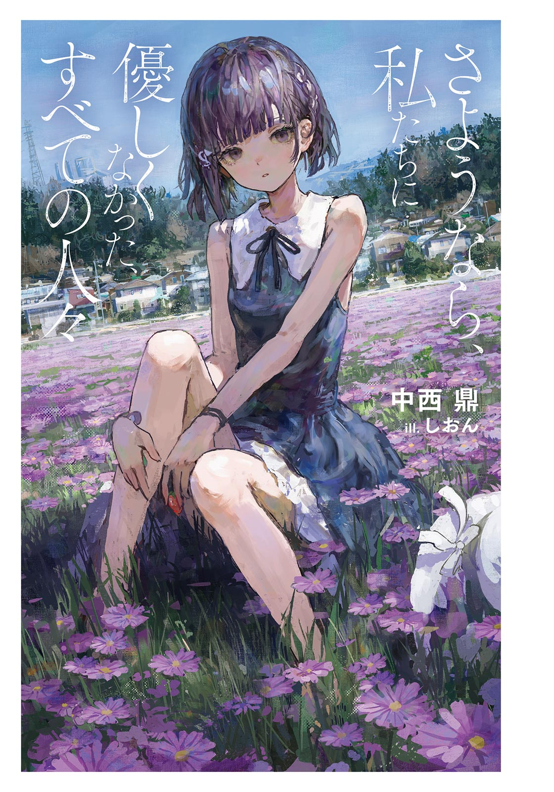
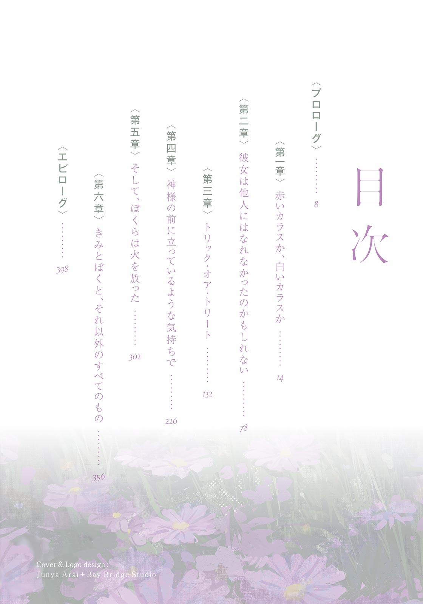
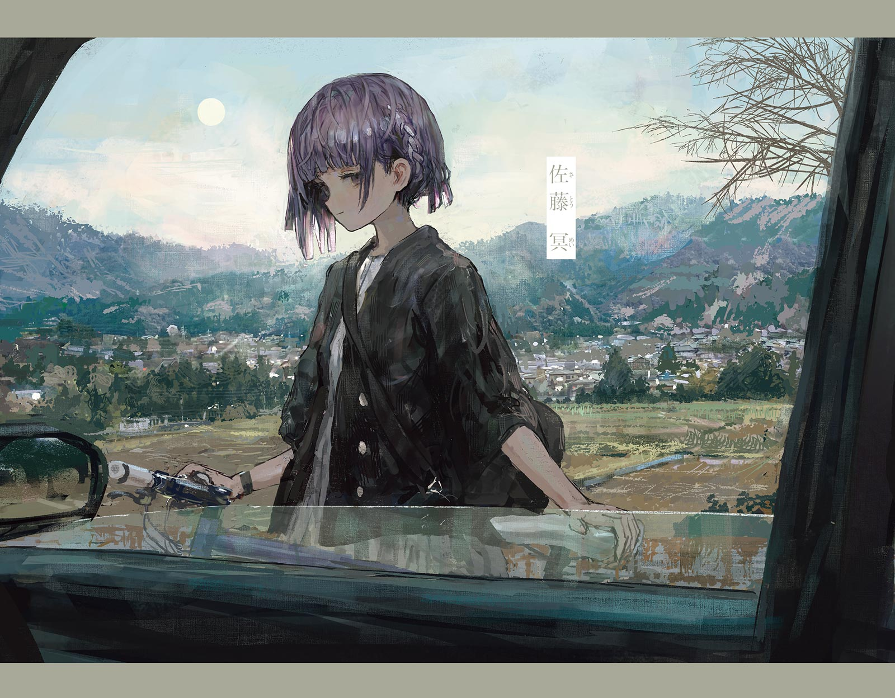
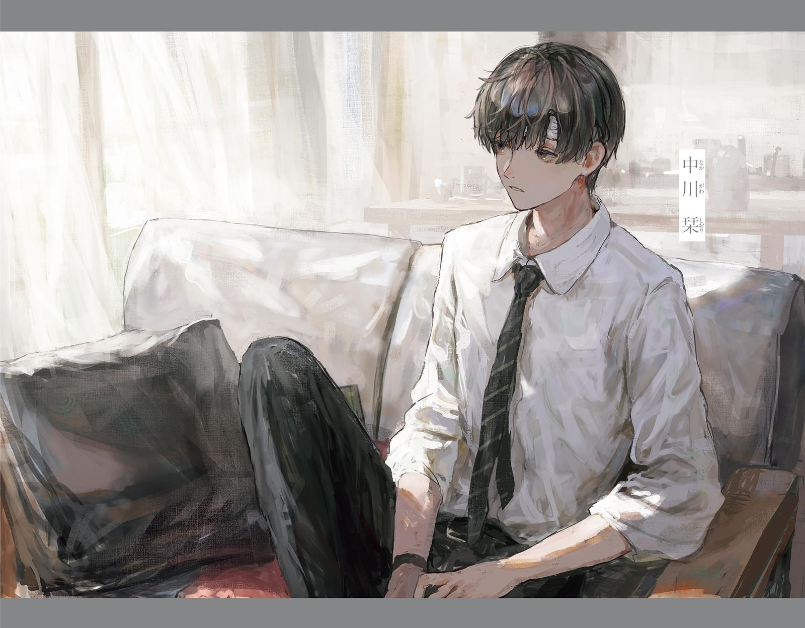
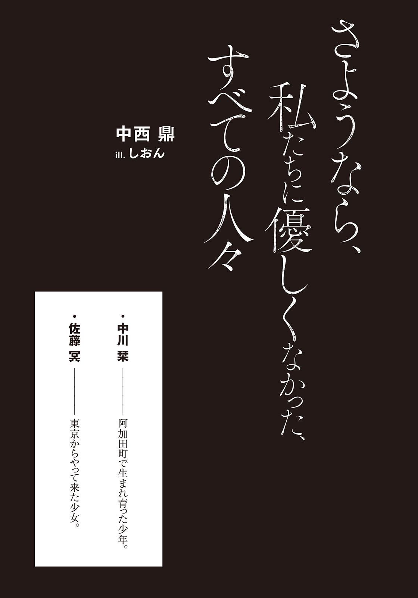
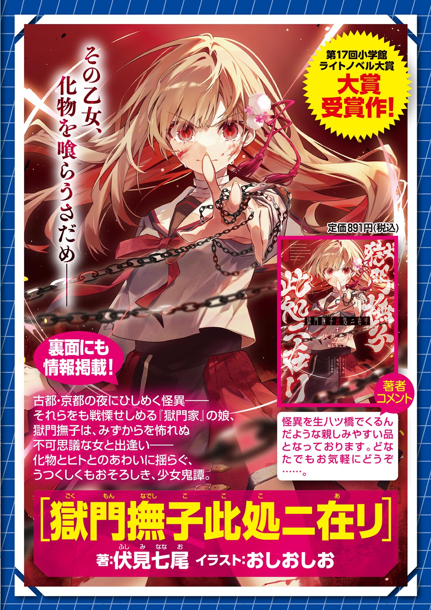
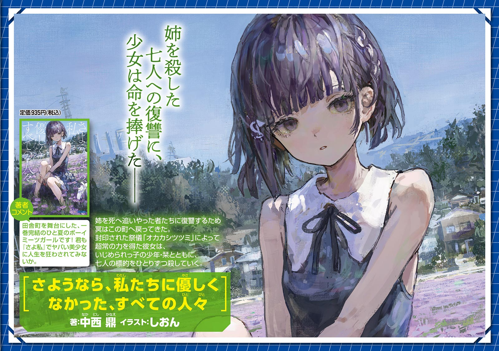
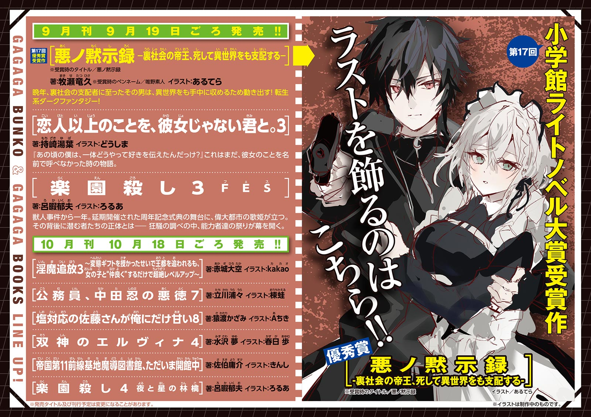

小学館ｅＢｏｏｋｓ
さようなら、私たちに優しくなかった、すべての人々
中西 鼎
イラスト しおん
小学館ｅＢｏｏｋｓ
さようなら、私たちに優しくなかった、すべての人々
中西 鼎
イラスト しおん
本電子書籍は縦書きでレイアウトされております。
一部の漢字が簡略体で表示される場合があるほか、ご覧になる機種により見え方が違う場合があります。





六月の夜、ぼくと
「町を去る前に、火を放とう」と冥が言って、ぼくもそれに賛成したからだ。
どうせ火を
眼下にはぼくらが住んでいた町がある。今日のうちに
こうして見ていると、自分たちがそこに暮らしていたことが、不思議に思えるくらいに小さな町だった。日本中に何百と似たものがありそうな、ありふれた田舎町だ。
古びた家屋が肩を寄せ合っている。どれも示し合わせたように似たベージュ色の外壁で、三角屋根で、まぶたを閉じれば
「
と、冥がぼくの名前を呼んだ。つっけんどんながらも、どこか無防備な印象のある、普段の冥らしい言い方だった。
ぼくは冥に促されるがままに、自分のスマートフォンを彼女に手渡した。既に発火装置に
ホームセンターで売っているどんな電球だって、ガラス球を外して、フィラメントを露出させてやれば発火装置になる。それをマイコンボードに繋げて、遠隔操作が出来るようにするくらいなら、高校二年生のぼくにも可能な、朝飯前の日曜大工だった。
発火の仕組みは簡単でも、火が町中に広がることは確定的だった。なんせ冥には『オカカシサマ』という神様が
冥はスマートフォンの画面に表示されたボタンの上に親指を浮かせると、どこか涼しげな目つきで町を一望し、六月のなまぬるい風に髪を揺らしながらこう言った。
「さようなら、私たちに優しくしなかった、すべての人々が住む町」
そしてボタンを押した。
すると町の風上に、オレンジ色の小さな炎が
頼りない火元だ。風に吹かれてゆらゆらと揺れている。
だがその炎が、大きなタバコを吹かしたように灰色の煙を
炎はいつの間にか、遠近感を失いそうなくらいに大きくなっていた。業火に照りつけられて
ぼくらは町から離れた場所にいるから、ほとんど火災の音は聞こえなかった。時たま何かが
ふと冥がぼくの肩を
彼女の指先には、この町の実質的な支配者である、
風向きのせいだろうか、炎はセメント工場の方に燃え移り、いまや工場をすっぽりと取り囲んでいた。
冥が
丘の上からでも聞こえるほどの爆発音が鳴った。
セメント工場のタンクが爆発したのだ。続いて二、三回の
爆発によって、タンクや反応
それを見て、冥は無邪気な子供のように笑った。ぼくもなんだか
しばらく笑い合った後、ぼくらは抱き合い、キスをした。まるで記念日を手帳に書き込むみたいなささやかなやり方で。
町が燃え落ちる光景は確かに美しかったけれども、どこか芝居の書き割りが燃えていくのを眺めているような現実味のなさはあった。だが胸元に覚える冥の感触はリアルで、彼女がぼくの胸元に軽く爪を立てるだけで、まるで記憶の中のピアノが忘れられない音を奏でているような気がした。それは町を燃やすことよりも、よっぽど鮮烈な経験に思えた。
町はまだ燃えていた。しばらくは燃え続けるだろう。でも肝心な部分は見終えたとでも思ったのか、冥は
「ほら、行こ」
＊
それからぼくらは『オカカシツツミ』という儀式を行い、七つの死に立ち会った。様々な出来事が起こり、その中でぼくらは愛し合うことになった。
ぼくらは町を出る。そして最後の目的を果たす。
その先には──。
ふと冥の体がよろける。
オカカシサマの力を使いすぎたのかもしれない。あの力は彼女の体に負担をかけるのだ。冥は自分が弱っていることをあまり認めようとはしないけれども。
小柄で細身の彼女が、スニーカーで六月の
冥の命は、あと一週間もしないうちに失われる運命だということを。
１
その日、ぼくはいつもと変わらない退屈な日曜日を過ごしていた。座
でも昨日の不眠が原因なのか、内容が頭に入ってこなかった。やむなく中断して目をつぶり、少しだけまどろんだ。
ぼくの住んでいる家は古い木造なので、やや距離のある和室で父親が、死んだ姉二人の仏壇に向かって唱えている念仏の声がやけにはっきりと聞こえてきた。
ぼくが中学二年生くらいの時に、父親は単純に手を合わせるのではなく、念仏を唱えるのに祈り方を切り替えたのだが、唱え出しの「
念仏は「
父親はぼくの部屋のドアを開けると、思春期の息子にどう関わっていいかわからないという、その表れのような照れ笑いと共に「
ぼくと父親は、
佐藤冥のことは、父親から何回説明されてもよくわからなかった。
ぼくがありふれた反抗期を迎えているからか、あるいはぼくらの家庭環境のせいか、父親とは普段から会話が
明らかなことは二つ。
佐藤冥という一つ年下の女の子がいること、その子が今日からぼくらの家に住むこと。
誰かがぼくらの家に住むことは、たぶん構わないと思う。だだっ広い家で、空間も持て余し気味だ。ぼくが小学五年生の時に母親が家を出ていったきり、二階建ての家に二人だけで住んでいる。家の保存のことも考えるならば、むしろ住人が増えた方がいいくらいだろう。
問題はこの佐藤冥という女の子に関して、父親が何もはっきりとしたことを教えてくれないということだ。
どうやら佐藤冥の父親は、ぼくの父親の大学時代の先輩で、それなりに仲が良かったらしい。「親友」と言ってもいいほどの仲だったそうだ。
しかし、だからといって娘をその家で住まわせたりするほどだろうか。ぼくの父親だって息子と年の近い異性を、考えなしに同居させたりするものだろうか。
佐藤冥は現在、東京に住んでいるという。そんな子がわざわざ一人きりで、阿加田町のような何もない田舎に引っ越してくること自体が特殊なことだと思うのだが、父親は何も筋の通った答えをくれない。
だがそんな疑問も、ちょっとしたコミュニケーションの
きれいな女の子だというのが第一印象だった。
大きな金色のフレームに、黒い半透明のレンズのサングラスを着けているから、目元はよく見えなかったけれども、整った鼻の形や、つんと
フランス映画のヒロインみたいなボブカット。すこし茶色がかって見えるのは、染めているのではなく生まれつきだろうか。
彼女は父親の運転する自動車が近づいてきたのに気づくと、顔だけをこちらに向けた。
父親はハザードランプを
「やあ、冥ちゃん」
佐藤冥は何も答えず、無言のまま後部座席のドアを開けた。
車が発進する。
父親は自動車をゆるやかに走らせながら言った。
「初めまして、
佐藤冥はスマートフォンを触りながら、うんともすんとも言わなかった。
彼女は無視をしているようだった。それに驚いたのか、父親は目をぱちくりさせながらルームミラーを見た。
父親はしばらく沈黙の意味を
「一緒に暮らすと言ったって他人なんだから、気になることがあったら直ぐに言ってくれたらいいんだし──」
彼女の視界を
「僕たちもなるべく冥ちゃんが暮らしやすいようにしたいし──」
やはり佐藤冥は口を閉ざしたままだ。
空き家、折れたカーブミラー、木々の
どうやら彼女は、明確な意思を持ってぼくの父親を無視しているようだ。理由はわからないけれども、行動としては明らかだった。
父親もそれに気づきつつはあっただろうけれども、気づかないふりをして佐藤冥に言った。
「そうだ！ 冥ちゃんは好きな食べ物とかある？」
それでも佐藤冥は黙り込んだままだった。
なんだかいたたまれなくなってきた。べつに父親への同情はなかったし、思春期なりの父親への不満から「ざまあみろ」といった気持ちもなくはなかったけれど、気まずさはぼくも三割ほど味わっていた。
べつに父親に加勢したいわけではなかったが、ぼくだって佐藤冥の
「どうしてうちに泊まるの？」
どうせ返答は来ないと思っていた。でも彼女はその質問には答える気になったらしく、口元を
サングラスを外すとよくわかる。背筋がぞくりとするくらいに美しい女の子だ。魔性を感じるくらいに
「知らないの？」
と聞いた。思ったよりも舌足らずな言い方で。
「うん」
とぼくは答えた。なるべく平静を装いながら。
すると佐藤冥は車窓の外を見ながら、何気ない調子で言った。
「見殺しにされたの」
「見殺し？」
「うん、私のお姉ちゃんね、殺されたの。
ぼくは苦笑しながら運転席の父親に目をやった。
ところが父親は
まもなくして、ユーチューブでダウンロードした楽曲を、ＣＤ‐Ｒに焼いたものがスピーカーから流れ始めた。ひどい音質だ。あらゆる楽器が
ぼくは絶句してしまった。佐藤冥の言葉を信じたわけではなかったけれども、明らかに父親の反応にはうそ寒いものがあった。
「冥ちゃんは──」
と父親は言った。
なにか新しい質問を口にしかけたが、もちろんさっきの、見殺し発言の
「……
その発言に佐藤冥は答えなかった。
佐藤冥はふたたび、あらゆる質問を沈黙に
２
午後七時になる。
というよりも、なっていたらしい。ぼくは本を読みながら、いつの間にか眠り込んでしまっていたようだ。キッチンから父親の「夕食が出来たよ」という声が聞こえて、それで目が覚めたのだった。
体の節々も痛むし、頭もずきずきする。幸せな午睡とは程遠かった。
立ち上がり、腰を回して体の凝りをほぐしながら、先ほどの見殺し発言についてすこし考える。
やはり佐藤冥の発言を、額面通りに受け取ることはできない。
父親が誰かを見殺しにするという状況が、ぼくには想像できなかった。父親の良心を信用しているというよりは、彼には誰かを見殺しにできるほどの
彼は親しい友達と遊びに行くことさえ、年に一回あるかないかの孤独な男だった。そんな人間がどうやって、佐藤冥の家族を見殺しにすることができるだろう？
だが彼女の発言が、全くのでたらめだとも思えなかった。父親の反応からしても、部分的には本当なのだろう。
事実を切り裂いて
その辺りで考えるのをやめた。なんだか
洋室からキッチンに向かうと、二階にある彼女の自室として割り当てられた部屋から、階段を下りてきた
佐藤冥はくしゃくしゃの英字の書かれたＴシャツに、デニムのショートパンツを
意外と普通の格好だ。昼間の衣服からして、フリル付きのネグリジェでも着てきたって驚かないつもりだったのに。今の彼女は高校一年生の女の子として、たぶん一般的な格好をしている。
夕食が始まる。
主菜は
いつも通りの夕食だ。母親がこの家にいて共働きだった時から、父親が家事全般を担っていた。彼はいつだって四つ年上の母に頭が上がらないようだったし、頭を下げている方が楽だという態度を見せていた。
彼は料理に関しては凝り性だったが、さりとて上手でもなかった。好きなことと腕が利くことは別なのだ。
「
と佐藤冥が言った。
ソースを手渡す。彼女がぼくを栞と呼ぶのならば、ぼくも冥でいいかと思った。父親だって冥ちゃんと呼んでいるし、「佐藤さん」と呼ぶのも変だろう。
冥はコロッケにどぼどぼとウスターソースをかけ、大皿に茶色い湖を作っていた。かなり濃い味が好みのようだ。やや味覚の独特な女の子なのかもしれない。
真っ黒なコロッケを口に入れて、ようやく冥はすこしだけ上機嫌そうになった。どうやら年中、腹を立てているような女の子ではないらしい。今ならば父親のどうでもいい質問にでも答えてくれるかもしれない。
同じことを思ったのだろうか、父親は冥に聞いた。
「冥ちゃん、部屋の居心地はどうかな？」
すると冥はさらりと言った。
「
詳しい意味はわからないけれど、少なくとも質問の答えとしては不適切な気がした。
冥はあのあどけなさの残る言い方で、やはり「部屋の居心地」とは全く違うことを言い始めた。
「
ぼくと父親はつい黙り込んでしまった。
なぜその話をしたのかはわからないが、少なくとも食欲を
「公開処刑は当時の民衆にとって数少ない娯楽の一つだったから、刑場にはいつだって見物人が押し寄せていたそうよ。有名人が処刑される時は『北京の路地から人が消え失せた』と言われているわ」
と言って、
父親は下を向いてしまった。
冥は父親には目をくれずに、かといってぼくを見るわけではなく、ぼくと父親の間にある中立的な
「処刑が娯楽化する例は、世界各地にあるの。フランスでは一九三九年まで公開処刑が行われていたそうよ。最も有名な公開処刑の立役者は、あのトーマス・エジソンかしら。そう、電球を発明したあのエジソンよ。彼は自分のライバルであるニコラ・テスラの発明品のネガティブ・キャンペーンのために、テスラの発明品を応用して電気
冥はそこまで言うとわずかな
仕方がないけれども、
「成功したの？」
「なにが？」
「ニコラ・テスラの評判を下げるというエジソンの作戦」
「いや、エジソン自身が『恐ろしい人物だ』って評判になっちゃったそう」
「そうだろうね」やりすぎだろう。
冥は、まだ主菜を食べ終えてはいないのに、デザートのいちごを何個も自分の取皿に放り込み、自分のものにすると言った。
「一五一九年。これは何の年だと思う？」
いつの間にか冥ははっきりとぼくの方を見ていた。ぼくは箸の先端を
「室町時代？」
不正解だったらしい。彼女は何も言わず、不服そうに口を
世界史だと、「……大航海時代？」
「そう」
「いや」
「アステカ族は
「人を殺して？」
「そうよ」ぼくが驚いているのが面白かったのだろう。冥は
冥はいちごを口に含み、その後にご飯を食べて、ヨーグルトジュースを飲んだ。実に奔放な食べ合わせだ。
ぼくはなんとなく夕食を中断したまま、まじまじと冥の方を見てしまっていた。冥はいちごの果肉の付いたままのへたを、皿の隅っこに載せながら言った。
「それでも、アステカの首都テノチティトランの、実際に人間が
冥はわずかな沈黙を空気銃の燃料のように挟んでから言った。
「
すこし考えてからぼくは言った。
「わからないけど、その話が世界史の教科書に載っていたら、今よりも楽しく授業を受けられていたことは確かだろうね」
ぼくの返答を聞いて、父親は
「人身御供の事例は世界各地にあるの」と冥はさっきよりも早口になって言った。「インド、エジプト、中国、メソポタミア、古代ギリシア・古代ローマを始めとした古代ヨーロッパ。そして、日本で行われていたという例も、『
ぼくは
「『日本書紀』によると、元々古墳には生きた人間が埋められていたらしいの。でもそれが出来なくなったから、代わりに人間の形をした
ふうん、とぼくは言った。
「この
そこまで冥が口にしたところで、ぼくはふと思い出して言った。
「オカカシツツミのこと？」
冥は虚を衝かれたらしく、水をかけられた猫のように目を瞬かせた。
「有名なの？」
実に素朴な驚き方をした。どうやらぼくの回答は、彼女にとってかなり予想外なものだったらしい。これまでに見せてくれたことがないくらい、新鮮な反応をした。
「いいや、あまり」とぼくは首を横に振った。「ぼく以外は誰も知らないような、ローカルな伝説だと思う。図書館にあった、一九六〇年代に出版されていた、県内の小規模な出版社の本でたまたま読んだんだ。ぼくは図書館っ子だったから、目につく本を片っ端から読んでいた時期があったんだよ。本によると、オカカシツツミのお祭り自体は実際に行われていて、写真も残っているけれども、そこで人間の生け贄が捧げられたかどうかはわからないって」
冥の
何か良くないことを言っただろうか？ さっきまで
ぼくは沈黙をごまかすために、冷めた肉じゃがに箸を伸ばした。冥も同じように食事に戻り、既にソースでぐずぐずになっているコロッケに追いソースをかけた。
それから、長らくぼくらの話に我慢していたらしいぼくの父親が「どうだい、この
こうしてぼくたちは各々の夕食に戻っていった。そんなふうにして冥のホームステイの一日目は過ぎていった。
３
翌日の月曜日の朝が来た。
また
高校二年生になった四月から、ぼくは不眠症に悩まされていた。
不眠症にも色んなタイプはあるが、ぼくは眠りを維持できないタイプの不眠症だった。最初の寝付きは悪くないのだが、二時間か三時間で起きてしまう。そして起きてしまった後は、一度打ち上がった花火が二度と元には戻らないように、ほとんど寝つくことができない。
眠りたいのに眠れない状態を何時間と過ごすのは、それ自体が緩慢な拷問だ。でも最も絶望感を覚えるのは、寝付けないまま朝の日差しが、カーテン越しに部屋に入ってきた時だ。眠れなかった事実を再確認させられるのが
治療のために町の外の心療内科へ、父親に連れて行ってもらったこともある。
初回の診療で、やたらと体つきが良くて、どこか
どうやら初回の診療は、彼いわく「人生のまとめノートのようなもの」を作らなければならないらしい。面倒に思えたけれども、これも睡眠薬を
三十分ほどぼくの話を聞いて「人生のまとめノートのようなもの」を作った医者は、こう総括した。
「高校二年生になってクラスが変わり、いじめを受けたことによるストレスが、不眠の原因ですね」
長く話した割には、当たり障りのない結論だった。
個人的には、同級生の
ところが医者は、なんと薬を一つも出さないと言った。十代の患者にはなるべく向精神薬を出さないというのが彼の治療方針で、自然な眠気に任せた方がいいと言ってぼくに運動を薦めてきた。
「運動は全てを解決しますよ」
医者は、ぼくの長細い四肢をじろじろと眺めながら半笑いで言った。
最初は
だが彼がぼくにくれた、とても便利なアイテムが一つあって、それは『傷病名：適応障害、不眠』と書かれたＡ５サイズの診断書だった。そのぺらぺらの紙一枚が、彼そのものよりも余程役に立った。これを学校に提出しておくだけで、
今日は眠るのに失敗したから、学校を休もうと思った。
眠りの量は天気のようにランダムで決まる。疲れているかどうかは、繰り返しになるがあまり関係ない。そして眠りの多寡にかかわらず、学校に行ける日と行けない日がある。今日は自分の基準だと休んでいい体調だった。
二階の寝室から一階のダイニングに降りると、父親は既に出勤していて家にいなかった。
代わりに
冥は昨日と同じ、英字の書かれたＴシャツを着ていた。手荷物が少なかったから、引っ越しの段ボールが届くまでは、部屋着はそれ一枚きりなのだろう。確か段ボールは今日届くと父親が言っていた気がする。
「おはよう」と一応声をかけたが、冥はうんともすんとも言わなかった。ただ行儀のいい人形のようにじっと座ったままだ。彼女は食卓の上に置いたスマートフォンで映画を
といっても、それに熱中しているという感じでもなかった。ストーリーの情報を最低限頭には入れているけれども、気持ちは冷めているという感じだ。
冷蔵庫からミネラルウォーターを出しながらふと思う。
冥も今日は高校に行く日じゃなかったか？
「冥は学校に行かないの？」
とぼくは聞いた。彼女自身の口から学校の話を聞かされたことはなかったけれども、父親によると既に転校の手続きは済んでいて、今日六月七日から、ぼくと同じ
「あなたも行ってないのだわ」
「まあね」
「高校なんて行く必要ないでしょう。あんな退屈なところ」
それもそうか、と思った。
ミネラルウォーターをマグカップに注いでいると冥が言った。
「
あ、うん、とぼくは言った。ちょっと生返事になってしまった。冥のあまりにも日常的な
冥自身は既に朝食を終えたらしい。食卓にある
朝食をとる。
そのうち彼女の
「つまらなかったわ」
と冥が
「どんな映画だったの？」
とぼくは聞いた。なんとなく聞いて欲しそうだったからだ。
「すべてが予定調和だった。まるで製作者の陳腐な願望を映像にしたみたい。去年ヒットした映画だそうだけれど、どうかしてるわね」
そう言って、冥はぼくに映画のメインビジュアルを表示したスマートフォンの画面を見せた。確かにこれは去年、ニュース番組で何度も特集されていた有名な邦画だった。冥は
雑談をしてみようと思った。今の冥は機嫌が良さそうだし、すこしくらいは答えてくれる気がした。
「ここでの暮らしはどう思う？」
でも冥は何も答えてくれなかった。まるで世界の終わりで
「慣れない場所だと思うけど、よく眠れた？」
質問を変えてみた。すると冥はおかしそうに笑った。
なぜだろう。折角応答してくれたのに、
「眠れてないのは
「どうしてぼくが不眠症だってことを知ってるの？」
冥は指を組んでその上に顔を乗せ、いたずらな微笑を浮かべると言った。
「実は私には透視能力があるの。だからそれくらいお見通しなのよ」
「わかった。父さんから聞いたんだな」
「さあね。ともかく知ってるのよ」
やはり父親が話したのだろう。彼は清掃業に就いているからか朝が早い。早朝、冥と二人きりになった父親が、『登校の時間になっても、もしも栞が寝ていたら起こさないでやってくれ。あの子にとって睡眠は貴重なものだから。なぜなら──』といった調子で話しかけているところが容易に想像できた。それに対して、
田舎式の表裏のなさなのか、単に父親がそういう性格だからか、プライベートなことを筒抜けにする傾向がある。筒のような気の利いた覆い自体、この町には存在していなくて、なにもかもが表裏なく野ざらしにされているような気もする。
まあいいか。どうせ同居していたらわかることではある。冥は白くて細い人差し指で、何気なくテーブルをなぞりながら言った。
「睡眠薬は飲んでないの？」
「担当医の頭が固くて、出してくれないんだよ。ちなみに薬局にある
「じゃあ、これをご所望かしら」
と言って、冥はショートパンツのポケットに手を入れ、ピンクのマスキングテープが
その中から、白くて底に線が一本入った錠剤を取り出した。ぼくは
「これはね、ベンゾジアゼピン系の睡眠薬。
「…………」ずっと追い求めていたものが、いきなり目の前に現れたからだろう。ぼくはつい言葉を失ってしまった。それから言った。「なんで持ってるの？」
「こんなにも支離滅裂な世界で
そう言われてみるとそんな気もしてくる。初めて声を聞いた時から思っていたけれども、冥の声質には、間違っていることでも正しく思わせるような不思議な説得力がある。
「私ね、睡眠薬をたくさん持ってるの」
「どうして？ 自殺でも企ててるの？」
「あはははは、
「ごめん」軽口だったかもしれない。
「うん、死ぬとしたらもっと成功率の高い方法を選ぶもの」ああ、『そんなわけない』って、そっちの意味なのか。「心療内科のお医者さんにね、寝つきの悪い時のために、すこしだけ多めに睡眠薬を
そういうものなのか。ぼくはまだ睡眠薬を飲んだことはないけれども、集めたくなる気持ちはわかる気もするな。二十粒余っていたら、二十日分の快眠が保証されるのだから。
「欲しい？」
と冥は聞いた。ぼくは柄にもなく素直になってこう言った。
「欲しい」
「ふうん、どれくらい欲しい？」
「とても欲しい。激しく欲しい。なにもかもを忘れて奪い取りたいくらいに」
「なんだか愛の言葉みたいね」
そう言われて、急に恥ずかしくなった。睡眠薬の話をしているはずなのに、なんだか
でも冥自身はぼくの感情の機微には気づいていないようで、Ｔシャツのほつれた首元を無防備に揺らしながら言った。
「じゃあ、私の質問に答えて」
ぼくはこくりと
「オカカシツツミについて、どれくらい知ってる？」
冥は言う。さり気ない言い方だったけれども、さっきまでよりも随分と真剣な様子だ。食卓の上に両
図書館の本を読んだのはかなり昔のことだったので、ぼくはなんとか思い出しながら言った。
「詳しくは知らないよ。ぼくが知っているのはこれくらい。この町で戦前まで行われていた祭りであること、
「あなたが読んだ本の名前はわかる？」
「
「ありがとう、とても助かるわ」
やけにはっきりと礼を言った。これまでのあまのじゃくな態度からは考えられないほどに率直な言い方だった。理由はわからないけれども、オカカシツツミは彼女にとって重要な事柄らしかった。
もう少し、彼女の力になれないだろうかとぼくは思った。そう思ってしまうくらい、彼女はこの件に関してだけはひたむきな様子だったからだ。ふと思いついてぼくは言った。
「書名がわかったら、図書館に行って本を借りてきてあげようか？」
冥は目をぱちくりさせた。そしてあの大きな
「どうしてそこまでしてくれるの？」
「図書館、家から近いんだよ。用事がなくたって、好きで行くくらいだし……」
と言いながらも、口にしている間中、ぼくはひどく恥ずかしい気分になった。ぼくは十六年以上生きてきて、人に親切をしたことがほとんどない。だからか、わざとらしい言い方になってないかとか、
「
「事実確認？」
「うん。私も別の本でオカカシツツミについて読んだことがあるの。去年、
ふうん、とぼくは言った。たまたま本で読んだというのはともかく、民俗資料館にある文献を確認したというのは、よほどの熱意がないと出来ないことに思えた。さらりと口にしたけれども、その時も東京から阿加田町に来たのだろうし。
もうすこし、踏み込んだ質問をしても良さそうな気がした。だからぼくは聞いた。
「冥はどうしてそんなに、オカカシツツミに興味を持っているの？」
冥はふっと口をつぐんだ。誤って沈黙の
「
とぼくは聞いた。昨晩の話からして、彼女は世界各地の生け贄に深い興味を持っているようだったからだ。
すこしくらいは答えてくれる気持ちになったのだろう。冥は窓辺に顔を向けて、陽光に目を細めながら言った。
「オカカシツツミが最後に行われたのは、一九三九年のことなの」
ぼくは驚いた。随分と正確に記憶しているものだ。
「戦争で人手がなくなって中止されて、それきりなの。生け贄が捧げられていたかどうかは、今となってはわからない。学者のどんな説明も、証拠がないって批判される。あると言おうと無いと言おうと、白いカラスを追いかけるか赤いカラスを追いかけるか。どちらを追おうと羽も無くなった、朽ちたカラスの化石が出てくるだけ」
「
「というより、藪ごと消えてるの。かつて藪のあった沼の中で、水かけ論くらいなら出来るかもしれないけれど」
なるほど。そして日本の民俗学において、そういう事例は少なくはなさそうだと、詳しくは知らないけれどもぼくは思った。
「でもね、私は思うのだけれど、オカカシツツミの祭りの日に、確かに生け贄は捧げられていたの」あやふやな状況に思えたけれども、意外ときっぱりと冥は断定した。「いや、思うんじゃない、それは実際にあったの。それは本当にあって、毎年少なくない人数が殺されて、オカカシサマという名の巨大な蛇の神様に捧げられていたの。へんてこな女の子がへんてこりんな妄想を口にしていると思うかもしれないけれど、私はちゃんと知っているのよ」
それがかえって、
どうしてそうも
冥は振り返ってぼくを見ると言った。
「あなたもオカカシツツミに興味がある？」
すこし
「うん」
冥は「そう」と言った。そして一粒の睡眠薬を机の上に置き、ふざけて指で
「じゃあ、教えてあげる」冥は微笑の
冥はリビングから廊下に
「あなたを連れていきたい場所があるの」
４
冥はぼくを
つまりはこれから山登りをするのだ。
元はといえば寝不足から学校を休んでいたわけで、そんなぼくが山登りをするというのは矛盾に満ちたことのように思えたが、冥と話していたらそれくらいの元気なら湧いてきた気がしたので行くことにした。
阿加田町は四方を山によって囲まれた盆地に位置している。東西を国道によって
ぼくは遠足で阿加田山に登ったことがある。初心者向けの登山コースで、ゆるい勾配のある道をだらだら登っていくと、確か一時間半ほどで頂上に着いた。
でも
「私が連れていきたいのは山の中よ、ファミリー向けに整備された所じゃないの」
「道なき道を行くということ？」
「うん。一応道のようなものはあるのだけど、あまり
しっかりとした準備をした方がいいということだろう。
まあ「しっかりとした準備」が、どういったものかはわからない。
冥はぼくの部屋の入り口で棒立ちになって、準備をしているぼくを見つめていた。
彼女は半
「その格好で山に入っていくの？」とぼくは聞いた。
「だってこれしかないもの」と冥は言った。
「今日、冥の荷物が届くんだよね？」ふと思いついてぼくは提案した。「だったらそれで装備を整えて、明日行くというのはどうだろう？」
「今日のうちに行きたいの」冥は既定事項のように言った。「だからこのままで行くことになるわ。
つまりはなにか服を貸してくれということだろう。半袖はともかく半ズボンなのは、山道を歩くのに問題がある気がする。
「わかった、ズボンを貸すよ」
すると冥は、ありがとと言って、そっとぼくの部屋に入ってきた。お邪魔します、といった趣きだ。一応は年の近い男子の部屋として、あまり気安く入ってはいけないとは思ってくれているらしい。
ぼくの部屋は小学生の時から使っているから、半分子供部屋といった感じだ。机は学習机で、経年劣化で曇ったポケモンのデスクマットが
そして全体的に散らかっている。冥が引っ越してくるなら、もうすこし見栄えを良くしておけばよかったと
冥はぼくの部屋に入ると、中の様子を興味深そうに見回していた。こんな部屋でも、同じくらいの年代の男子の部屋だと思うと、すこしくらいは気になったりするのだろうか。
彼女の背丈を見るに、ぼくが普段
「ださいわ」
ではこちらはどうだろう。別のズボンを出して手渡す。
「ポケットが多すぎるわ」
けっこう美的感覚にはうるさいらしい。仕方がないので自分で選んでもらうことにした。
クローゼットの中で、冥は「子供っぽいわ」「黒い服が多いわ」などと独り言を
出発する。
戸外に出たところで、冥はグーグルマップで目的地を示す。そこが登山口らしい。
ぼくはつい閉口する。ここから五キロほどの距離がある。自転車で行けば二十分ほどで着く距離だが、この二十分というのは単に自転車を漕ぐだけの時間ではない。地形上、ずっと斜面を上ったり下ったりしなければならないので、つまりは丸ごと二十分間の肉体労働を意味するのだ。
だいたい冥はどうやってそこまで行くつもりなんだろう。ぼくは自転車に乗るとしても──と思っていると、冥はぼくの自転車の荷台に腰掛けると言った。
「連れてって」
なんだか手間のかかる我がままな妹ができたような感覚だった。
二人乗りで自転車を漕ぐ。
荷台にいる冥はサドルの下の辺りを持って、なるべくぼくと体が触れ合わないようにはしていたけれども、それでもブレーキをかけるとゆるく彼女の体が当たったりした。時たま六月の湿気と共に、彼女の髪の
スムーズに進める時間は長くなかった。坂が多く、上り坂になると彼女を下ろして歩かなければならないからだ。下り坂はスピードが出て心地がよいが、あまりにも斜面が急だと素直に喜べないくらいの猛スピードが出ることがある。
急な下り坂で、ブレーキを握って速度を調節していると冥が言った。
「気持ちいいんだから、ブレーキをかけちゃ駄目よ」
「車道に飛び出て死んじゃうかもよ」
「いいじゃない。その時はその時で。超スピードでズガーンって死ねたら気持ちがいいかもよ」
それもそうかと思う。ぼくはブレーキから手を離す。
弾丸みたいな速度が出て、大したカーブもないのにぼくはハンドリングをするだけで精一杯になる。背中にいる冥がジェットコースターに乗っているかのような
目的地に着く。
思ったよりも二人乗りは楽しかった。重心を安定させるためか、最初はサドルを持っていた
木々の
ほとんど誰も使っていない道なのだろう。雑草がたっぷりと茂っていて、ひょろりと若芽が顔を出していた。梅雨時だからか足元がぐずぐずになっている。滑らないように気をつけながら進んだ。
左右には
冥は勝手知ったる様子で歩いていく。ぼくはその後ろを追った。
「冥は来たことがあるの？」
「うん。二、三度ね」
「ここには何があるの？ オカカシツツミと関係していることなの？」
そこまで話したところで、ふと目の前に思いも寄らないものが見えてきた。
恐怖を覚えて、つい声を上げそうになった。ぼくは立ち止まってそれを見上げた。
ぱっと見では、汚れた木製の抽象物体としか言えないものだった。二メートルほどの高さがあって、塗装の
ふたたびおずおずと、その壊れかけの廃鳥居を見上げる。正体がわかってみても、
そんなぼくの恐怖心をよそに、冥は
鳥居というものはなんだか、くぐることで異界に行くような感覚がある。鳥居の内側でなにか誤ったことをしたが最後、神様の
日常的な感覚を取り戻したかったからだろう。ぼくは冥に聞いた。
「鳥居があるということはここは神社なの？」
「うん」一方の冥は、外の世界と変わらない
ふと見ると、小さな
「これが
「ううん」冥ははっきりと否定した。
「ここで、オカカシサマっていうのが
「祀られていたわ。でも、あくまで祀っていただけなの」
「だけ？」
「そう。人間は約十万年前、旧石器時代より前から神様を信じていたけれども、神社ができたのはごく最近のことに過ぎないの。六世紀に仏教が伝来して、その時に仏教の『寺院』を目にして、それを
「ふうん」千五百年も前からあったならば、充分「歴史が深い」ように思えたけれど、そうは口にしなかった。「じゃあ約十万年間、人間は何に祈っていたの？」
「この山。オカカシサマが住んでいる、この山そのものに祈っていたの」
そう言うと冥は、スポットライトを浴びるスターのように、両手を大きく広げた。まるでこの山そのものが、何よりも価値があるステージなのだと身振りで示しているかのように。
冥はふたたび歩き始めて、
「最初の宗教はね。
ぼくらはゆるやかな勾配の道を上っていく。徐々に傾斜がきつくなる。足元の
「信仰の対象は、洞窟から大岩に移った」と冥は言った。「巨大な岩の下に立っていると、人間は大きな岩の影に
冥はくるりと振り向いた。そして木々の闇の中に融け込んでいく、夜行性の生き物のような笑みを浮かべた。
「本当に恐ろしいものはね、目に見えないの。それは人々の世界には寄り付かずに、私たちの宗教の形式を
また歩きだす。
急な坂になり、落ち葉を踏みしめるたびにずるりと体が下がるようになる。やや背の高い雑草が、時たまくるぶしを老人の指のように
「オカカシツツミは、オカカシサマという名の蛇の神様を
倒木があり、正しい道筋がわかりづらくなる。だが冥は動じずに、まるで順路を暗記しているかのように
「
「ふうん」つい『性行為』という単語に反応してしまいそうになったけれども、態度には出さずに
「それを終えると巫女とオカカシサマは、文字通り一体となる。オカカシサマが巫女を
冥はしなだれかかっていた杉の枝を持ち上げてその下を通った。
「オカカシサマと一体となった巫女は神社の本殿に入る。そして事前に準備しておいた七枚の紙人形を、約十日間かけて、以下のやり方で処分する」数え歌のように冥が言う。「『一、人形の首を折る』『二、人形の首を折って酒をかける』『三、人形の首を折って尿をかける』『四、人形の腹と足を折る』『五、人形の腹と首を折る』『六、人形の腹と首を折り四肢を切り取る』『七、人形の腹と足と首を折る』」
ぼくは髪の長い白装束の巫女が、暗い建物の中で、人形を一つ一つ始末していく情景を想像してみた。その間、巫女の体の中にはなにかが宿り、彼女の目の光はたぶん普段とは違っている。
「全てが終わるとオカカシサマは巫女の体の中から去っていく。そして阿加田山の裏にある
ふう、と冥が息をついた。山登りに疲れたというよりは、オカカシツツミの話をするのに体力を使ったという感じだった。ぼくも壮大な物語を一つ聞いた気持ちになっていた。
「どうしてそんな祭りを行ったんだろう？」
とぼくが聞くと、
「五穀
冥はどこかロマンを語るように言った。確かに祭りの始まりに関して、確かなことは何も言えないかもしれない。あらゆる祭りはいつの間にか始まっていて、いつの間にか続けられてきたものだ。
ぼくはもう一つ質問をする。
「
冥は進行方向を確認してから言った。
「オカカシツツミを記録した
「そういう伝承は日本にはありふれているの？」
「うん。
「でも、証拠はないんだよね？」と、やや意地悪な質問かと思いながらぼくは聞いた。
「ほぼね。実際に発掘されて人骨が出てきたのは、私が知っている範囲では
「オカカシサマにも、生け贄を捧げていたという証拠はない」
「そうなの」冥ははっきりと言った。「でも必要ない。私はとっくに知っているのよ」
冥の言葉と共に、ぼくらはやや開けた場所に出た。
杉林の群生がまばらになり、さっきよりもよっぽど遠くが見渡せるようになった。広場のようだが、誰かが管理しているという感じもしないので、たまたま地形的に台地になっているだけの、いわば天然の広場だろう。雑草は変わらず生い茂っているが、どれも背が低い。地質的にも他の場所とは違うようだ。
そして奥に、ただならぬ気配を感じた。
冥は気配の方向へ歩いていく。ふらふらと何かに魅了されて、無防備にそれに近づいていくような、同時にそんな自分の浅はかさを
ぼくは彼女の後ろをついていった。
ぼくらは気配の正体に
それが
そこにあったのは、長径八メートル、高さ五メートルほどの巨大な岩だった。冥の言葉を借りるならば『
完全に人の手を離れているわけではないのだろう。大岩と比べて、かなりちっぽけな印象を受ける
ぼくと冥は、しばらく磐座の前に立って息を呑んでいた。
磐座は本当にただそこにあるだけだった。誇り高いくらいに、外界の干渉など跳ね
不意にざわざわと木々がさざめいた。
風が吹いたのかと思った。だが肌は何の空気の動きも感じ取っていなかった。木々だけを揺らすような、局地的な風でも吹いているのだろうかとも思った。いや、そんな現象は聞いたことがないし、仮にあったとしても地上が完全に無風なのは不自然だろう。
だからざっくばらんに言って、それは異常な状況だった。考えれば考えるほど、異常であるという事実に直面していくような、らせん式の異常さだった。奇妙な磐座の前にいるのもあって、何か普通でないことが起きているような気がした。
困惑するぼくをよそに、冥はきらきらと目を光らせていた。
それが彼女の待ち望んだものであるとでもいうかのように。メリーゴーラウンドの順番待ちをしていて、ようやく自分の乗る番がやってきた子供みたいに。
さらなる異変が起こった。
磐座の後方にある背の低い雑草が、くしゃりと広い範囲にわたって凹んだのだ。
それはあまりにも不自然な動きだったから、目の前で起きていることが、
よく見ると
雑草たちが、ぼくに一つの連想をさせる。
それは恐ろしく巨大で透明な蛇が、のたくりながら雑草を倒し、木々を揺らして
ざっ、と音を立てて、雑草の凹みがぼくと
次の瞬間、分厚い空気の膜がぼくの
あまりに
ぼくに触れている物体は、温かくて柔らかかった。形状としては細長く、まるで二本の指のように先端で二つに分かれていた。そういえば蛇の舌というのは先っぽで二つに分かれている。考えてみれば巨大な蛇の舌の感触そのままだ。
いや、もう……既に気づいていることを、知らないふりをするのはやめよう。
ぼくを撫でている透明なものは、冥が言っていたオカカシサマに違いない。
巨大な蛇の形をした、約十万年前から
オカカシサマがぼくの体を
オカカシサマによる
冥が言った。
「オカカシサマが、あなたを気に入ったって」
そして冥自身がオカカシサマの一部であるかのような、魔性の
５
帰りの山道を歩きながら冥が話した。
「三年前にね、お姉ちゃんが自殺したの」
「自殺？」冥がなんでもない調子で言うので、ぼくはつい素朴に聞き返してしまった。
「うん、姉の
ぼくはそれに対しては何も言えなかった。なんとなく、何を言っても話の腰を折るような気がしたからだ。
「その日はお姉ちゃんの葬儀だった。私は火葬場で焼け焦げていく彼女の骨のにおいを
冥はそう言って進行方向にある枝を乱暴に折った。
「オカカシサマの声を聞いたのはそんな時だった。男でもなく女でもなく、そもそも人ではなく私たちの世界に属する生き物ではない、そんな声だった」
「…………」ぼくは
「もちろん人間の言葉ではなかった。だから完全に理解することは出来なかった。でも伝えたいことはわかったの。『この山を登ってこい』って」
「私は火葬場を抜けて、ふらふらと導かれるがままに、
ぼくは
「どう思ったの？」
「頭がおかしくなったと思ったのだわ」と冥は苦笑した。「幻覚を見ているのかと」
「そうだろうね」ぼくは笑い返した。
「彼は自分が、『オカカシサマ』と呼ばれていることを私に伝えてきた」
「オカカシサマ自身がそう言った」
「『言う』という感覚でもないの。私にそれとなく示してきたというか、私の中にある原初的な記憶を呼び覚ましたというか」冥はどう表現すべきか迷っているようだった。「ともかく私は『オカカシサマ』について調べることにした。ネットで調べても情報は出てこなかったけれども、民俗資料館の本には載っていた。この町で
冥は坂道で滑り落ちないように
「『カカ』というのは蛇のこと。『
「ふうん」まるで言葉の因数分解だとぼくは思った。
「私は、オカカシサマというのは本当にいるのかもしれないと思った。調べてみるまで、私は全くもってそんな名前を知りもしなかったから」
ぼくは足元に気をつけながら、なるほどと相槌を打った。
「それから私は特定の条件で、オカカシサマの力をお借りできることに気づいた。オカカシサマにはね、空間という概念がないの。だから彼は時たま、ふらりと私のそばに来てくれたの。そんな時は不思議な力が使える。あなたの不眠症を当てた千里眼なんかはいい例だし、それから透明な彼の体を使って、ちょっとしたものを運んできてもらうこともできた」
「へえ、まるで超能力少女じゃないか」とぼくは冗談交じりに言った。
「そう。『キャリー』なのよ」と、冥は得意げに言った。ぼくはちょっぴりふざけたつもりだったのだけど、彼女は気づいてないようだ。彼女はやけに無防備な時がある。「でも本当にちっぽけな力よ。プロム・パーティを破壊することも出来ないし、テレビ局のおもちゃにもなりやしないのだわ」
「それにオカカシサマは、一人きりの時にしか現れてくれないの。だから人に見せることは出来ない力なの。また、日によっては全く使えないこともある。
「六十干支？」知らない言葉だ。
「まあ、安定しなかったということ」と冥は要約した。
「手放しで喜べるほどの力は持てなかった」
「そう」冥は
冥は長い坂道を勢いよく滑り降りると言った。
「オカカシツツミをやって、私そのものがオカカシサマと同化した期間」
ぼくも冥に続いて坂道を降りる。傾斜のある泥道だから、ゆっくり降りようとすれば逆に転んでしまう。だから速度を上げて素早く降りた。
冥はぼくが降りてくるのを待っていた。坂を降りきってからぼくは言った。
「そういう伝承があるのは教えてもらったけれども、実際にそうなるとは限らないんじゃないの？」
すると冥はまた歩きだし、なんでもないことのように言った。
「もちろん私もそう思ったわ。だから試してみたの」
「試した？」
「そう」冥は淡々と言った。「去年の夏至にね、私は一人で
ちょっと待って。「オカカシツツミの儀式を試した？」
「うん」
「夜通し一人で、意味不明な
「そう」
沈黙が訪れた。長く、そして具体的な沈黙だった。沈黙は触ったり
「きみは頭がおかしいのか」つい直接的な言葉が口から出た。
「おかしいのよ。イカれているのよ。クレイジーなのよ。パーなのよ。気づかなかった？」
気づいていた。しかしそこまでだとは思わなかった。ぼくはとんでもない女の子と同居をさせられているのかもしれない。今からでも東京に帰した方がいいのかな。
誰かに見られたらどう言い訳をするつもりだったのだろう？ まあ、さすがに深夜の山中に
「どうしてだんまりをするの？」と
気づかないうちにぼくらは立ち止まってしまっていたらしい。というより、ぼくが歩みを止めたのに冥が合わせたらしい。ぼくはふたたび歩き出しながら言った。
「えーと、虫刺されは大丈夫だったかな、と心配になって」ぼくはその場をしのぐためにこんなことを言った。
「ふふふ、儀式で使う、
そうなんだ、とぼくは言った。それ以上の言葉が出てこなかった。ともかく前提を受け入れて話の続きを促した。
「結論から言えば、オカカシツツミを行ってから三十九時間十七分五十四秒、私はオカカシサマの力を自由に扱うことができた。伝承だとオカカシサマが
ふむ、とぼくは言った。一晩中、山の中を裸で歩き回ったという事実が衝撃的すぎて、いまいち内容が頭に入ってこない。
「力を使えたという証拠は──」
「あのさ」
と、ぼくは冥の話を遮った。
「どうして、そんなにもオカカシツツミの儀式にこだわるの」
冥はすんとした表情を浮かべた。ぼくは続けた。
「
そう言うと、冥はしばらくぼくを見つめた。枝越しの陽光に照らされている彼女の姿は、ちょっとした森の
「殺してやりたい人間が七人いるの」
ぼくはうなずき、言葉の続きを促した。すると冥は続けた。
「私はオカカシサマの力を借りて、お姉ちゃんが死ななければならなくなった原因を作った、七人の人間を皆殺しにしてやりたいの」
家にいた時から、冥はオカカシツツミの
殺人そのものに対しては、不思議と嫌悪感はなかった。それは後から考えてみると不思議な感覚ではあった。「感覚が
ふと
「あはははは、あなたの父親は入っていないわよ」
ぼくは
「あなたの父親は、ただ助けてくれなかっただけだもの。私にはもっと殺すべき人がいるのだわ」それから冥はお気の毒様といった感じで言った。「残念ながらあなたの父親は殺してあげられないわ」
「いや、殺して欲しいわけではなくて」仲は良くないが、そこまで恨んではいない。
ふと、山道の始まりにあった廃鳥居が見えてきた。不思議と最初に見た時よりは恐怖を感じられない廃鳥居を眺めながらぼくは聞いた。
「その七人というのは一体誰なの？」
すると九九を暗算するくらいの
「お姉ちゃんの元同級生にして、主犯格の
田茂井正則はこの町の実質的な支配者で、常に騒音と悪臭を発し続けているセメント工場の持ち主だ。この町で彼の名前を知らない人間はいないだろう。
「翔真の弟、田茂井
ぼくはすこし驚いた。田茂井蒼樹はぼくの同級生じゃないか。
「二人の友人の
また小さな驚きを覚える。南賀良子はぼくの通う
ちなみに大地主である田茂井家と、農業組合の要職を占めている南賀家は
しかし驚きは、大波に
帰り道の二人乗りでは、
自転車で坂道を降りていく。山登りで疲れたのか、行きよりもふらついてしまい、バランスを失うたびに冥の体が背中に重なった。
彼女もまた疲れているようで、背中に重なった頭の位置を、自転車がスムーズに進んでいる間もしばらくそのままにしたりしていたりした。
ゆるやかな坂を下りながら空を見上げる。さっきまでは曇っていたが、今は晴れかけている。雲の
下り坂がくる。反射的に冥がぎゅっとぼくの腰を
でも、この坂は始めにこそ激しい傾斜があるけれども、すぐに平坦な道に変わってしまうのだ。だから冥が強く力をかけた割には、自転車の速度は上がらず、ただただ後ろから彼女がぼくを抱きしめただけのようになる。
なんとも言えない
「にやけちゃって、ばかじゃないの」
「この辺りの道は安全だと思うよ」
ぼくは言った。照れてしまっていたらしい。自分の
ぼくらはそんな何気ない時間を過ごしていく。古い映画のフィルムのしみのようにちっぽけで、同じくらいにふたたび訪れることはきっとない、かけがえのない時間を過ごしていく。
ぼくは知らなかった。冥がオカカシツツミについて、隠していることが一つだけあるということを。
オカカシツツミの
湯船から流れ出していくお湯を眺めながら、いつまで姉と一緒にお
日々、心身が成長していく年代にあって、冥はどんどん世界が狭くなっていくような感覚に
冥が二歳の時から住んでいる、この小さなマンションの浴槽だってそうだ。去年までは余裕があったはずなのに、今では姉と二人で入るためには体育座りをする必要がある。
もっとも、体が大きくなることは、基本的には良いことだと冥は思っていた。背の順だって今年、ようやく一番前を卒業し、ついに『前ならえ』の際に特殊なポーズを取る責務から解放されたのだ。といっても前から二番目なのだが。
「狭いねー」
と姉が言った。それはやけに楽しげな言い方だった。冥の体が大きくなったことで、湯船から流れ出ていくお湯の量が日に日に増えていく、まるで遊園地のウォーターライドが派手になっていくような日々が楽しいのか、それと同時に「背が低すぎる」という、冥の悩みが解消されていくのが
とはいえ、まともに身動きできないこの状況を快適とは言い難い。「狭すぎるわ」と、冥は苦言を呈した。
「いいじゃん。引っ越したら、もっと広いお
と
姉妹は湯の中で自分たちの足の裏を合わせた。二人が物心ついた時からずっとやっているじゃれ合いだった。昔はこの行為を「なかよしの足」だとか名付けたりしたものだけれど、今となっては名前はなかった。冥がふざけて脚を大きく伸ばすと、明里は「あはは、ちょっと待って、痛い痛い」と笑って、
笑っている姉を見ていると、冥は自分が小さなことに目くじらを立てていることが
お姉ちゃんの言う通り、私たちがこの浴槽に入るのも、あと何回かといったところだと冥は思った。一ヶ月後にはもっと浴槽の広い、
でも、と冥は思った。そして、これまでに何度も思い、実際に口にしたりもしている不安をふたたび言った。
「本当に引っ越すのかしら」
「冥だって広い家に引っ越して、自分の部屋が欲しいって言ってたじゃん」
「そうだけれども」
元はといえば、冥が「中学生になったら自分の部屋が欲しい」と言ったのがきっかけだった。そこから広い場所に引っ越しをしようという話になり、いつの間にか、東京から田舎町へ引っ越して家族四人でスローライフを満喫しようという壮大な話になっていた。発端となった冥は、まさかそんな大規模な生活環境の変化が起きるだなんて思いもしていなかった。小さな雪玉が大きな
「私、東京を出たいとまでは言わなかったのに」と冥は口をとがらせた。
「でもお母さんはかなり楽しみにしてるみたいだよ。お母さんはすごく前から、今の仕事が
明里はシャワー栓をひねる。最初は冷たい水しか出ないから、それを避けて浴室の隅っこで身を縮めている。
「お父さんもお母さんも、仕事をやめて
「うち、けっこう貯金あるんだよ。上手くいかなかったらやり直せばいいんだし……」湯の温度を確かめながら、すらすらと明里は言った。二人は前にも同じ話をしていて、この
「お姉ちゃんはいいの？ 転校しなきゃいけなくなって」
「いいよ。大した学校じゃないし」と明里は明るい声を作って言った。本当にいいと思っているかはわからないが、今回の引っ越しに関して、明里は一貫して前向きな態度を取っていた。両親の、特に母親の決心を、後押ししたいと明里が思っていることは冥にもわかった。「それより、新しい学校には女子ソフト部があるみたい。大自然の中でソフトボールするのって、いかにも楽しそうじゃない？」
明里は中学まで女子ソフト部に入っていたが、高校では運動場が狭く、女子ソフト部がない学校に進学していた。だが阿加田に引っ越すことでふたたびソフトボールができるようになり、それを楽しみにしているようだった。少なくとも表面上はそれを
「みんな
冥が不満を言うと、明里はくすくす笑った。
生まれ育った東京を出ていくことに対して、
「冥、髪を洗ってあげようか」と
１
十日も経つと、本格的に「一緒に住んでいる」という感覚が強くなった。浴室には冥の持ってきた、彼女専用のオーガニックソープ類が置かれ、洗面所には透明な冥の歯ブラシが置かれ、洗濯カゴの隅っこには、彼女がその日着ていた衣服が、抜け殻のように丁寧に畳んで詰められるようになり、トイレにはプラスチックの
朝が来て、ぼくは目覚める。
口笛でも吹きたいくらいに
最初に睡眠薬を使った日の朝、ぼくは驚いた。まるで心地のよい闇の中を通ったかのように気分がすっきりしていた。こんなにも気持ちのいい朝は久しぶりだった。もしかすると生まれて初めてだったかもしれない。本当に生まれ変わったような気分だった。普段はムカムカする朝の光も、生まれたばかりのぼくを祝福するかのように
朝の食卓で、ぼくは自分の睡眠薬の初体験がいかに心地のよいものだったかを冥に話した。するとあまのじゃくな冥が、珍しく同感といった感じで言った。
『睡眠薬ってすごいわよね。これを初めて使った時の心地よさは、実際に使った人同士でしか分かち合えないわ』
『作った
『そうね』ぼくとは対照的に冷めた声で冥は言った。『でも私たちは、永遠にこの薬を手放せないのだわ』
それから、その言葉に不必要な哀愁がこもってしまったと思ったのか、『永遠なんて大して長くもないけれど』と付け加えた。
そんなわけで、その日も爽やかな朝だった。
洗顔と歯みがきを終わらせてから食卓に行くと、ちょうど父親が朝食を準備し終えたところだった。
冥がいて、文庫本を読んでいた。読書に熱中している様子だ。
「何を読んでいるの？」とぼくは聞いた。
「世界中の毒殺の事例が網羅されている本」
なるほど、とぼくは言った。
朝食は、目玉焼きとウインナーとレタスとプチトマトが載ったプレートと、白米と、大して
朝食が始まる。父親が始めようとした雑談は、エリック・サティの室内楽のように無視される。それからしばらく無言で食べ物を
「今日も学校に行くの？」
「まあ、そのつもりだよ」
「やめましょう。学校なんて子供たちをミンチに変える肉のカタマリ工場に過ぎないわ」
「ピンク・フロイドの『アナザー・ブリック・イン・ザ・ウォール』のＰＶみたいに？」
「そうよ」
冥が言う。『学校なんて行かなくていい』という言説はあるけれども、ここまで
ここ数日、なぜかぼくが学校に行こうとすると冥は
「一学期の出席日数がまずいんだよ」とぼくは言った。「遅刻のせいで、一限目になってる科目の出席数が特に足りない。その点、火曜日に行くと、一限目になりがちな数学ⅡＢと世界史を一限ずつ履修できる。兵糧の補充日って感覚なんだ。だから普段から多少無理をしてでも行ってるんだよ」
と力説するけれども、冥は不服そうだ。どういう考え方が
「冥のくれた睡眠薬のおかげでぐっすり眠れてる、今のうちに出席数を増やしておかなきゃいけないんだよ」
「ふうん、じゃああなたを不眠のままにしておけば、この家に幽閉できるのね」
「それだけは勘弁してくれないか」と、ぼくは思わず取り乱して言った。薬を天秤にされているからか、ジャンキーみたいな感覚だ。
冥は不満げに口を
「学校を休んで何をするの？」
とぼくは試しに聞いてみた。
「べつになにも」と冥は言った。居直るような態度で。
そして実際、
「あなただって学校に行きたくないんじゃないの？」と冥は聞いた。
「行きたいか行きたくないかで言えば、そうだよ」
「
と冥が言う。その話はしたことがなかったので、すこし驚いた。
「オカカシサマの千里眼？」とぼくは聞いた。
「いや、
父親が言ったようだ。千里眼要らずだ。二里も要らないだろう。ぼくは脱力する。
「田茂井蒼樹がいるから学校に行きたくないの？」
「まあ、行きたくない理由の一つだよ」
「いっそ角材で殴って殺してしまえばいいのだわ」
冥はおどけて素振りのジェスチャーをした。てっきり「じゃあ学校に行くな」とでも言うのかと思ったら、随分と血なまぐさいアイディアだ。
父親は
「ぼくが逮捕されるけどいいの？」
「いいわけないでしょう、捕まらないように
「上手くできないかもしれないよ」
「その時は──」冥は片
はいはい、とぼくは言って、食べ終えた食器をキッチンの流し台に持っていった。それから食卓へ戻ると冥がアイコンタクトを取ってきたので、彼女の食器も流し台に運んだ。
もちろん全ては冗談だけれども、ぼくが捕まったら冥が困るのは確かだろう。冥の行うオカカシツツミの、今の所ただ一人の協力者なのだから。
２
家を出て、学校に向けて自転車を漕ぎ出す。
今日はよく晴れた日だ。
阿加田町自体が盆地にあって、地盤的に家を建てられる場所が限られているから、空間的には余裕があるくせに家そのものは密集して建っている。そんな光景もまた田舎特有の、住民同士の
そのうち、この町で見ていて最もうんざりする、
田茂井正則は工場の土地を持っているだけで、工場自体は大手電気会社のものだが、この町では「所持している」で通じる。「土地を持っている」と言うよりも「工場を持っている」と言った方が、なんというか住民の感覚に近いのだ。その工場から
元々
そんな時に各農家に、整地費用の一部を貸したのが田茂井家だった。特別に高い利息を取っているわけではないそうだけど、それが
もちろん住民全員が農家ではないけれども、例えば自治会長の誰々さんが農家だから田茂井家をヨイショして、校長先生の兄が農家だから田茂井家に気を使って……のように、影響はあちこちから
そしてこれは、まあ言ってみれば人間の醜さなのかもしれないけれど、誰かが「偉い」ということになると、そいつにゴマを
田茂井家にも色んな
要するに全然クリーンな一族ではないし、それを住民たちも薄々わかっているのだ。
でもこの町のムードが、田茂井家を強くする。それは田茂井家以外の人たちにとっても、今となっては都合が良かったり楽だったりすることなのだろう。
高校が見えてくる。
阿加田高等学校は一学年四十人ほどの小さな学校だ。町民の多くはこの高校に進学する。小学校は阿加田小、中学校は阿加田中、高校は阿加田高というのがこの町の一般的な進学コースだ。だから小学校の時からクラスメイトはほとんど変わり映えしない。ぼくも阿加田小、阿加田中ときて阿加田高に進学している。
とはいえぼくは当初、この学校に通うつもりはなかった。高校受験をして町の外の高校に行くつもりだったのだ。
高校入試は会心の出来だった。後日郵送されてきた成績開示にも、高い点数が印刷されていた。ところが内申点が悪すぎて不合格になった。
ぼくが中学三年生の時に学校の内申点の付け方が変わった。それまではいくら学校を休んでも、受験を目前にした生徒には良い内申点を付けてあげましょうねという、言ってしまえば温かみのある方針だったのだが、より正確な内申を付けるように方針が変わった。県の教育委員会も関わる、色んな制度の変更があったらしい。結果、ほとんど不登校だったぼくの内申点はいきなり最低ラインになり、高校入試に落ちた。
色んな高校を受けていれば、どこかには合格したのかもしれない。内申点を見ない高校だってある。だが、まさか落ちるわけがないというレベルの高校を受験していたし、そこ以外は距離の遠い学校しかなく、行く気がしなかった。
また、仮に受験に落ちて
自分はそういう状況を、何事もなくやり過ごすことが出来る能力を持っているのだと思っていた。でも認識が甘かった。それはただの思い上がりで、運良く難を逃れられていただけだったのだ。
駐輪場に入る。
校則で許可された銀色のママチャリばかりが、車体を斜めにくねらせながら、雑然と詰め込まれている。本当は学年やクラスごとに自転車を停める場所が決められているのだが、誰もそんなものは守っていないので、ぼくも適当な
その瞬間、いきなり背後からドロップキックが飛んできて、ぼくは前のめりに倒れ、目の前にあるたくさんの自転車を盛大に倒した。
げらげらという笑い声を従えて、
図体は大きいが、おおよそ知性というものは
そして大体、同じ美的センスを持った友人たちと共にいる。今日は
次に
また笑い声が起きる。有名な野球選手の名前になぞらえて、氷室が褒められている。ぼくは痛みに
追撃を覚悟したが、今回はそれで終わりのようで、蒼樹たちはモンストの話をしながら去っていった。
一人残されたぼくは痛みが過ぎるのを待つと、倒された自転車の中から自分の自転車だけを引き起こし、離れた場所に停め直すと、田んぼの方に自分のバッグを取りに行った。
午前中は何も起きなかった。せいぜい三限目と四限目の間に、蒼樹に中身の入った紙パック飲料をぶつけられ、制服が
五限目はプールだった。
授業中は特にちょっかいをかけられることはなかった。自由時間中に
しかし、授業が終わった後の更衣室で、蒼樹はぼくの衣服をまとめて小さな鉄格子の窓から、建物に面した公道に放り投げると言った。
「取ってこいよ」
さすがに
だが即座に蒼樹によって、水を吸った水泳キャップを
次に
裸にラップタオルをまとっただけの、心もとない状態で公道に出る。だがもちろん妨害が来る。蒼樹とその仲間たちが道中に代わる代わる現れては、ぼくからタオルを取ろうとする。しばらく
腹の底から溶岩を吐き出しそうなほどの痛みが走る。吐きそうになってうずくまり、ぼくは自分がタオルを取られたのか取られていないのかもわからない混乱へと陥る。気がついたら目の前で蒼樹たちがぼくのタオルでキャッチボールをしていて、最終的には田んぼの泥の中にタオルを落とした。
それを
ふと見ると更衣室から何人かの生徒が、にやにや笑いでぼくらのもとへと集まってきていた。何人かがスマートフォンのカメラを向けている。男子も女子も分け隔てなくいる。
観衆が来たことで気分が乗ったのだろう。蒼樹はカメラに向かって知らないユーチューバーの物
さすがにそんなことは出来ない。しかし生徒たちの無数の視線が、ぼくの自慰行為を待っていた。何個かのカメラも向けられているし、女子たちも泥に隠れたぼくの股間をニヤニヤと眺め、下品な感想を述べたりしている。「ほら、皆見とるで。シコれや、なあ」と蒼樹が言う。
いじめというのは不思議なもので、「それくらいで済むならやってもいいか」という心づもりを生み出すものだが、にしても今日の要求は明らかに
蒼樹たちはぼくに
業を煮やした
制服を拾い上げると、カッターシャツのボタンが外れてしまっていた。
ともかく一連のいじめが終わった。着替えを
「ねえ」
髪の長い、やや冷たい雰囲気の女の子だ。客観的に見れば整った顔立ちの女の子なのかもしれないが、残念ながらぼくは主観的にしか生きられない。だから別に美しい女の子だとは思わない。
彼女は
「何？」
ぼくは端的に答える。べつに
「次、私たちのクラスがプールだから」
と言って、肩から提げたスイミングバッグをぼくに示した。偶然通りかかってぼくを見かけて、声をかけたという経緯だろう。
「あんた、よくいじめられてるね」
公平な事実を述べるように南賀は言った。
うん、きみの彼氏にね、とでも言ってやりたかったけれども、本当に言ったら自分がますます
「なんでいじめられてるの？」
と、南賀は言う。現状をどうこうしようとは思っていない、単なる質問って感じだ。答えてやる義理もなかったけれども、答えない義理もなかったのでぼくは答えた。
「うち、テストの順位表を廊下に
「バカじゃないの」
と、南賀は切り捨てるように言った。
「テストの点なんて、わざと低い点を取ればいいじゃん。この学校のテストは簡単すぎるから、私も点を取りすぎそうになったら少しずつ調整してるよ。変に目立つといじめのターゲットにされるって、今まで生きてきてわかんないかな」
もちろんぼくも、わざと低い点を取ろうと思ったことがあった。中学二年生の時に学年一位を取った後は、危機察知の勘のようなものが働いて、半年ほどテストで手を抜いたこともあった。効果があったかはわからないけれど、ともかく中学時代は平和に過ごしていた。
ただ内申点を理由に高校受験に失敗してからは、学校をたまに休んでも許されるためには、一定の成績が必要かもしれない、くらいのぼんやりとした心づもりをするようになった。欠席の保険として、稼げる時にポイントを稼いでおいた方がいいと思ったのだ。だからそれなりに
「高校一年生の時は、手を抜かなくても大丈夫だったから」
「よっぽど運が良かったんだね」と南賀は
ぼくは
「……何？ 助言のつもり？」
「助言といえば助言かもしれない。誰かがふらりと車道に出ていったら、『おい、止まれ』とまでは声をかけるでしょう。そういった類いの本能的な、無差別で混じり気のない助言だよ」
「そりゃどうも。ぼくに空気を読めって言ってるの？」
「簡単に言えばね。でも『空気を読む』というのは、いつも思うけれどもあまり的確じゃない言い回しだね。そうじゃなくて『空気に身を任せる』って感じだな。読むんじゃなくて、自分を空気にさらわれるくらいに軽い存在にするの。
だからかぼくは去り際に、南賀の隣で足を止めてしまった。その何気ない動作から、ぼくが話の続きを促しているとでも思ったのか、南賀は続けた。
「渋谷駅前のスクランブル交差点と同じだよ。一度に何千人という人がすれ違っているのに、誰ともぶつからないでいられる。私たちはあれをこなせる生来的な能力を持っている」
南賀はちらりとぼくを見て、意味深な笑みを浮かべてから言った。
「でも中継映像を見ているとたまにいるの。おろおろして人にぶつかっている奴が。自分を軽くする力を忘れた人間が。あんたはその一人なのかもしれない」
どういうつもりで言ったのかはわからない。でも得意げに言われた気がして、すこし腹が立った。あるいは
ふと
「そんなふうにして
すると、みるみるうちに南賀の顔が青ざめていった。面白いほどに態度が変わった。さっきの話の延長線上で、殺したのは私じゃなくて皆だから、と居直られることもあると思っていたのだけれども、そういう感じでもないらしい。
「……違う」
そう口にすると、南賀は、なんで知ってるの？ とでも言いたげな目でぼくを見た。でもぼくはあえて何も答えなかった。すると南賀はひとりでに続けた。
「
「『
ぼくは
「私は……」そこで南賀は声を詰まらせた。
そのまましばらく黙っていた。すると南賀は思いも寄らない行動に出た。
彼女は大ぶりな石を拾い上げると、それをぼくに向かって全力で投げつけたのだ。
石が当たり、ぼくは反射的に声を上げた。とはいえさほど痛くはなかった。幸運にも丸い部分がお腹に当たっただけだったからだ。
「あんたが言ってるのは全部間違いだから。佐藤明里なんて知らないから。あんた頭がおかしいんじゃないの？ 病院に行った方がいいよ！」
そして南賀は走り去っていった。
思ったよりも頭の悪い振る舞いをする女の子だとぼくは思った。完全に
南賀
空き缶を転がしたようなチャイムの音がし、六限目の始まりを告げた。
帰り道。
自転車で下り坂を降りていると、ふと隣の国道を、ものすごい速さでトラックが通り抜けていった。
こういう時にふと思い浮かべる空想がある。それはゲームのバグのように、脈絡なくぼくの居場所が移動し、走っているトラックの前に突如出現し、即死することだ。痛みを感じる暇もなく、あの世へのスロープを超スピードで上り、死の自覚すらないまま意識の虚無を迎えることだ。そうすることが出来ればどれだけ幸せだろうと思う。そういうことが起きればどれだけ楽だろうと思う。
自殺をしたいほどに生きることに絶望してはいない。むしろ自殺をするために発生する手間や痛みのことをリアルに考えると、ぼくはかなり自殺に後ろ向きな人間だと思う。自分に限って言えばヒューマニストだと思う……誰だってそうかもしれないが。かといって手放しに生を称揚できるほど、毎日を気持ちよく生きてはいない。
日々「生きる」という名の事業によって発生した、負債の損切りをしている気分だ。「生」という名のお遊戯会に
３
その夜、ぼくは
この十日間、ぼくらは毎晩と言っていいほど、消灯した冥の部屋で映画を観ていた。
それはぼくには不思議なことだった。というのも、冥はぼくの部屋には無断で入らないようにしていたからだ。夕食の準備が出来て、父の代わりにぼくを呼びに来る時も、必ず慎重にドアをノックしていた。つまりは彼女なりに、男女の適切な距離感を保とうとしていた。ところがぼくが冥の部屋に入ることには、あまり抵抗を示さなかったし、主に彼女の方から招いてくれていた。それは本当に不思議なことだった。逆ならば理解ができるのだけど。
たぶん冥は自分の部屋を、自分のものだという実感をあまり持っていなかった。せいぜい旅先の
ともかくぼくらはその十日間、よく二人で映画を観ていた。たまに冥のことが映写室に住んでいる座敷
その夜の冥の格好はラフだった。座り方によってはへその見える絞り付きのカットソーに、初日から愛用しているデニムのショートパンツを
その日観ていたのは、ミヒャエル・ハネケという監督の『白いリボン』という映画だった。カンヌ国際映画祭のパルム・ドールを受賞した映画らしいけれど、退屈でよくわからなくて、観ているうちにストーリーの大筋もわからなくなってしまった。冥も同じだったのだろうか。ぼくが名前を忘れてしまった中年男性が話し始めた辺りで、ふとぼくの方を見て言った。
「
「とても眠い」
「どれくらい？」
「眠気と名の付いたクマがぼくを巣穴に運んでいきそうなくらいに」
「あなたは不眠症でしょう？」
「寝つきは普通なんだよ」
「私も寝つきは普通なのよ」と言って
「わからない」
「この後に、ついてきて欲しい場所があるのだけど」
冥はやや
目が覚めてしまいそうな提案だった。なんたって既に二十三時で、ぼくらは入浴を済ませ、冥の髪からはトリートメントの香りが漂っていたからだ。寝る準備は万端だったのだ。
「この後？」
とぼくは聞き返した。そして冥がナイトウェアを着ていなくて、わざわざ部屋着を着ていたのは、外出を見越していたからかもしれないと思った。
「そう、あと三時間後くらい、この映画が終わって、さらに一時間ほど
「あと三時間？」全くもって起きていられる自信がない。
冥と二人きりで外出するのは二回目だった。父親に連れられて外食に出かけたことはあったけれども、二人で出かけるのは
冥はこちらを見ずに、かといって『白いリボン』も
「無理は言わないわ。ただついてきて欲しいだけなの」
あの時は『連れていきたい』と言った。今回は『ついてきて欲しい』と言っている。
前は『今日のうちに行きたい』と言っていた。今は『無理は言わない』と言っている。
細かな言い方の違いが気になった。なんとなくだけれども、冥は自分の中の、もっとパーソナルな部分をぼくに明かそうとしてくれている気がした。
「わかった、行こう」
「そう？」冥は突き放されないかを警戒している、子うさぎみたいな喜び方をした。「でも、こんなに遅いと、明日は学校に行けないかもしれないわよ」
「いいよ。休もう」冥が少し不安げだったから、
「本当に？」と言って、冥は体を乗り出した。隣に座っているので、彼女のシトラスフローラルのコンディショナーの香りがやや強くなる。それは冥自身の香りと結びついて、一つの花束の
「うん」
「明日も明後日も？」
「明後日？」明後日まで休むつもりはなかったけれども、まあ
「それがいいわ」冥は指を組み合わせて、夢見るような笑みを浮かべた。「じゃあ、明日は何かをやりましょう」
「何をする？」
冥は特に深い考えはなかったようだ。不意のあどけなさを
「今日と同じじゃないか」
「昼から観るのは、きっと気分も特別よ」
「そうかな」とぼくは言った。それから、不登校の日に家で食べる弁当が、学校で食べるよりも不思議と
「でしょう」冥はくすりと笑ってから、不思議そうに口にした。「あなたってイエスしか言わないの？」
「ノーだよ」
「あなたの首をぎゅっと絞めてもいいかしら」
「ノーだよ」
「あなたの手首をカッターで切っても」
「ノーだって」
ディスプレイを観ると『白いリボン』のストーリーは、既に理解不能なくらい先に進んでいた。とはいえ元からよくわからないストーリーだったし、巻き戻してもらうまでもないかと思った。
「冥はどうして映画が好きなの？」
とぼくは聞いた。特に雑談をしても構わないだろうと思った。彼女も映画に集中していないのは明らかだったから。
何気ない質問のつもりだったのだけど、冥は思ったよりも真剣に考えていた。人目を意識していないようなさりげない顔つきになって、思索の世界に半分融け込んでいた。
「
冥は言った。普段と変わらない言い方だったけれども、その言葉は彼女の心の中の、より深い部分から発された言葉のような気がした。
「他人の人生？」とぼくは聞いた。
「うん」と
「ある、って言ったら、冥はイエスマンだと言う？」
「かもね。でも実際はどうかしら」
「意外とないかもしれない」とぼくは言った。それは自分でも思ってもないことだった。こんな田舎に生まれているし、両親も離婚しているし、いじめられてもいる。あって当たり前だと思うのだが、自問自答しても他人の人生への
冥は、それはそれで当たり前の感覚だというふうにうなずいて、
「私にはあるの」と言った。「そして映画はね、他人の人生を、何も知らない私に教えてくれるの。それを
そうなんだ、と答えた。でもこの時にもう少し、彼女の話を深く聞いておくべきだったかもしれないと後になってから思った。それは彼女が、避けられない運命を覚悟した上で口にした言葉だったから。十五歳より先の命がないことを見越した上で紡いだ言葉だったから。
そんな口上の後だというのに、冥は二十分もすると、映画の途中にもかかわらず、気ままな猫のように眠ってしまった。ぼくにもたれかかって、肩に
冥のまぶたはゆるやかに閉じられている。髪の毛はお
こんな自然な瞬間に、彼女に口づけられたらどれだけいいだろうと思う。それは本当に、なんとなく心に浮かんだことだった。おだやかな
でももちろんそんなことはできない。ぼくは冥のただの同居人でしかない。せいぜいオカカシツツミの儀式の共同作業者でしかない。だからそんな権利なんてない。
ぼくは彼女から目を離す。肩には彼女の感触があるが、なるべく意識しないようにする。そして
それから寝てしまった時の保険として、というより十中八九寝てしまうと思ったので、午前二時に合わせてアラームをかける。
想定内のまどろみが訪れ、ぼくは眠りという名の柔らかいブランケットに包まれる。
４
午前二時。
ぼくらは家を出て、自転車に乗る。
ぼくは
事前に、冥からグーグルマップで目的地を知らされていた。ちらっと地図を見ただけで、どういう道のりで行けばいいかがわかった。この狭い町で十五年以上生きてきたら、誰だって身につく能力だ。好むと好まざるとにかかわらず、記憶を司る脳の
ぼくが冥を先導して、阿加田山を右手に西へ進む。闇の中だと阿加田山は、星の光に縁取られた巨大な黒い影のように見える。そして町は海の底みたいな深い闇の中にある。街灯以外のあらゆるものが、いまや暗黒の中に押し込まれていて、スコップで土を掘り返していくみたいに、自転車のライトで闇を明るみにし、また闇に追いやる。
目的地に到着する。
そこはなんでもない住宅街の一角だったから、本当に場所が合っているか心配になったけれども、冥は合っていると言った。
何の変哲もない一軒家が建っていた。記憶に
空き家のようだった。電気が点いていないのは他の家と同じだが、二台停められる駐車場はもぬけの殻で、代わりに枯れ葉が堆積している。今は枯れ葉の季節ではないので、少なくとも枯れ葉が舞うくらいの時季から、この家は放置されていたことになる。
「ここに何の用があるの？」
とぼくは聞いた。空き巣でもなければ用のなさそうな建物だし、空き巣だって侵入してみたくなるかは疑わしい。
ぼくは息を
冥はこの家に住んでいたことがあるのだ。そうでなければ鍵は持っていない。おそらくは彼女の姉、
門扉を通り、雑草が一面に生い茂っている小さな庭を歩く。庭木は途中で手入れを放棄されたらしく、ばらばらの方向に枝が伸び、秩序を失っている。
玄関に着く。冥は扉に鍵を差し込む。過去に何度も同じことをやったことがあるような手慣れた素振りで。けれどもその手はかすかに震えていた。
ドアを開けると、
冥は一応、玄関照明のスイッチらしきものをカチカチ押していたが、とうの昔に電気は停められているらしく、乾いた音が響いただけだった。
冥は織り込み済みといった態度で、スマートフォンのバックライトを
「ぼくもライトを点けていい？」
うん、と冥は
ぼくはライトで室内を照らした。まだ少し物が残っていた。玄関マットもあれば、靴箱の上にはたぶんどこかへ旅行をした時の手土産である、招き猫や、卓上カレンダーや、シーサーの置物や、木製スタンドに立てられたポストカードや、手の平サイズのキルトが置かれていた。これらのものは「家ごと捨てられた」という印象で、埃が厚く積もっていて、それが白く固まってしまっている部分もあった。
なにかを
ふと冥を見ると、彼女は既に奥の方に進んでいた。だからぼくは慌てて冥の後を追った。冥は靴を履いたままだったので、ぼくもそうした。埃に覆われた玄関マットを、お邪魔しますといった気持ちで踏むと、埃で足が滑る感触がした。
開けっ放しのドアをくぐる。するとリビングとダイニングとキッチンが一体となった大きな部屋があった。カーテンと、一台の食器棚と、部屋の奥にあるもう一台の棚を除いて、家具は何も置かれていない。フローリングの上には、分厚く積もった
キッチンでは、ちょうど蛇口の下のところで、泥のような黒いカビが、少しずつ繁殖を続けていた。その隣には洗面所と
冥が出てきて、ほっとする。廊下に出て階段を上る。
二階に着く。二階にはトイレを除いて三つの部屋があった。一番手前の部屋は、間取りからして小さな部屋のようだった。納戸だろうか。
冥は
ドアノブを握る。冥はぎゅっと目をつぶり、懸命に何かの恐怖と戦っていたが、最後には決心した様子でドアを開けた。
そこは女の子の部屋だった。ぼくと同い年くらいの女の子の部屋が、埃に降られながらそのまま残っていた。
たぶん三年前から、佐藤明里の部屋は手つかずで残されていた。
閉じられたままのピンクのカーテン。窓際には勉強机。机の上の本棚には古い教科書が並べられている。ぬいぐるみ。写真立てが二つ。文具スタンド。キャラクターものの缶ケース。各種辞典。地球儀。机の側面のフックにはトートバッグが提げられている。その全ては薄く埃で覆われていて、スマートフォンのライトによって白く光っている。
部屋全体に白いラグ。延長コードが部屋の隅から延びてきているが、スマートフォンの充電器が挿し込まれたままだった。部屋の隅っこに小型掃除機。ディズニーランドのビニール袋。ラグの隅っこには教科書とプリントが重ねられている。
部屋の壁に面してローテーブルが置かれている。それがドレッサーの代わりだったようで、大きめの卓上ミラーが載っている。もちろん埃によって、鏡としての機能は果たしそうにない。テーブルの隅には安っぽい芳香剤。間違いなく空だ。そして化粧品がいくつか載っている。でもあまり化粧に凝っている方ではなかったのかもしれない。机の上の物の置き方よりも、やや散文的な印象がある。
何
ここに
もちろん他の部屋にだって人は住んでいたのだろうけれども、ここには鮮やかなほどの持ち主の気配があった。昨日まで人がここに住んでいて、一日のうちに埃だけが、三年分たっぷりと積もったような、そんな印象すらも受けた。
しばらくぼくらはその部屋にぼうっと立ちすくんでいた。最初の方はすこし歩き回ったり、部屋の細部を観察してみたりもしたのだが、結局のところドアの所まで戻ってきて、二人して部屋の中央の辺りに目を留めたまま動けなくなった。
そこには確かに存在感のようなものがあった。誰かの息づかいと誰かの気配と誰かの体温があった。でもこの部屋の主はもうこの世にいないのだ。
「佐藤明里はどんな人だったの？」
とぼくは聞いた。それが唯一、彼女の部屋の中でぼくが発することが出来た言葉だった。佐藤明里の不在感を前にすると、なんとなくまともな会話が出来なくなってしまう。
優しかった、と冥は言った。
端的だけれども、実感のこもった言い方で。
家を出る。
ぼくらは佐藤明里の部屋を出てから、何の話もしなかった。まるで
外の空気は澄んでいた。空き家の中にあった埃っぽさや湿り気はなかった。ただ家の中にあった重みのようなものを、ぼくらは確かに持ち帰ってしまっていた。
冥が家に
なんとなく思い出したのは、冥と一緒に
そんな取り留めのないことを考える。何かを考えては自分で否定し、何一つまとまった考えが出せないでいると、
冥の家からは小さな塀によって区切られた敷地だった。敷地面積の大半は駐車場で、隅っこに一階建ての小さな小屋があった。こちらも空き家で、冥の家と同じくらい長く放置されているようだった。
長方形型の小屋に平らな屋根を付けただけの、かなりシンプルなデザインの小屋だが、それが
「こちらの家は何なの？」
とぼくは聞いた。そしてよく考えたらさっきの家だって、冥
「こっちはね。お母さんがやってた喫茶店なの」
と冥は言った。いつもと変わらない口調で。彼女の内心はわからないけれども、口調がいつも通りであることが、ぼくを少しだけ安心させたのも事実だった。
「喫茶店？」
「うん。私の家はね、元はある夫婦が建てたものなの」
冥は言う。そして口元を隠しながら、小さなあくびをした。
「その夫婦が別の家に引っ越して、代わりにある議員が家を借りて、議員事務所にしたの。しばらく使っていて、事務所に追加の駐車場が欲しくなって、たまたま売りに出ていた隣の土地を買ったの。そして駐車用の屋根を建てたの。鉄骨の柱で出来た、車を風雨から守ってくれる立派なものを」
と言って、冥は目の前の小屋を眺めた。小屋の屋根は、言われてみれば駐車場の屋根に多い、ギザギザの折半屋根になっている。
「それから議員が引退して、夫婦に家を返却したの。その時に隣にある屋根付きの土地を、安値で夫婦に売ってあげたの。夫婦は自分たちの家を、今度は土地付きで売って、それを私たちが買ったの」
「なるほど」家を使って伝言ゲームをしているみたいだとぼくは思った。「でも目の前の小屋は、『駐車場の屋根』から大きく変わっているようだけれども」
「改装したの。屋根と柱をそのまま使って、元あった壁にセメントと断熱材を入れたの。電気やガスや水道も引いてあるし、基礎があった分、一から建てるよりもずっと安くで済んだそうよ」
「プレハブ的なもの？」
「いいや、実質的には普通の家と同じだとお母さんは言っていたわ」
彼女は
ふたたび
中に入ってみると、いわゆる普通の家との違いは見出せなかった。当然ながら床もあるし、壁にはパイン材が張られている。客の座席がそのまま残っていて、白い埃がテーブルの上にまだら模様を作っている。奥にはカウンターがあり、カウンターの横には二本の柱があり、柱と柱の間には窓付きの壁が張られている。たぶん窓の向こうが
「ここが喫茶店だったって、なんとなくわかるよ」
とぼくは言った。ほとんど建物の間取りしか残っていない状況だけれども、レイアウト的にそうとしか思えないのだ。
「でしょう」と冥は答えた。
冥はバックライトを
「そう、ここにモンステラの鉢植えがあったの。ここにホワイトボードがあって、お母さんは毎朝その日の日替わりランチのメニューを書いていたの。このショーケースの中には、いつだって
真新しいパイン材が部屋中に張られていて、その全てが陽光を浴びてきらきらと輝いている。天井からは小ぶりなペンダントライトがいくつも垂れ下がっていて、その下には
お母さんの夢の店だね、と明里は昨晩、お母さんに言った。
するとお母さんは、本当はスイーツをメインにしたかったけれども、個人事業主の相談窓口に行ったら主食をメインにするように薦められたからそうしたとか、余り物の出にくいメニューを考えて、ロコモコ丼を開発したとか、原価を重視してこだわりの食材を使えなかったとか、そんな苦労話ばかりするのだけれども、でもその
お父さんとお母さんが仕事をやめた後、ほんのすこしだけ、家庭にはピリピリとした雰囲気が漂った。いわゆる「普通の人生」からドロップアウトしたような感覚があったのだ。でもそんな空気も三日も持たなくて、「まあ、
そして私は全面的に、二人の決心に賛成なのだ、と
飲食店で働いている、お母さんの労働環境もブラックだった。二人とも仕事に忙殺されている時期は、明里が両親の代わりに冥に夕食を作ってあげることもあった。少なくとも喫茶店をやっているうちは、そんなせかせかした日々を過ごすことはないだろう。
家族の誰かが苦しんでいる姿を見るのは、当たり前だけど嫌いだと明里は思った。
不安はもちろんあるけれども、それを上回る希望が彼女を満たしていた。
＊
四月八日。
明里は自転車を漕いで、阿加田高等学校に向かった。冥は阿加田中学校に向かったが、別方向だった。
自然が豊かで、空気の
阿加田高等学校への転校に関して、実は少しだけ不安なことが明里にはあった。
それは「阿加田高等学校はいじめがある」という情報をネットで見たことだ。
最近ウェブ漫画などでよく取り上げられているいじめだが、実際に明里は見たことがなく、高校一年生になるまで、
いじめを題材にした、あるウェブ漫画が爆発的にヒットした時に、学校で調子のいい男子が、教師に『こんなことって本当にあるんですか？』と聞いたことがあった。
すると六十代の再任用のおばあちゃん教師は苦笑して、『昔よりも少なくなったかなあ』と言っていた。
『なんでですか？』とその男子は聞いた。
すると教師は昔を懐かしむように目を細めながら、
『八〇年代が一番大変だったかなあ』と言った。『校内暴力といじめが社会問題化して、文部省がいろんな通達を出して、学校の取り組み方も変わって……そこからは増えたり減ったりかなあ。結局は人と人の間で起こることで、多い場所は多いし、少ない場所は少ないんだろうけど、あくまで私の実感で言うならば、携帯電話やスマートフォンが普及するようになってからは、あまり
『どうして？』
『だって皆、休み時間になったらスマホゲームをして、誰かをいじめてる暇なんてないでしょう？』
教室中に笑いが起きた。その先生はよくスマホゲームに熱中する生徒たちを茶化して、笑いを誘っていた。彼女は職業病となっている説教くさいしゃべり方で、でも確かにウケたことに上機嫌そうにしながら言った。
『結局のところ皆、退屈を紛らわせてくれるものを求めていたんじゃないかな。だからいじめなんてしてたんじゃないかな。スマホゲームの方が面白いし、そっちの方が忙しいってなったら、いじめなんてする理由がないもんね……でもあんたたちみたいに、バカみたいにスマホをポチポチしてるのは、それはそれで気になるけれども』
イベントが忙しいんですよー、と男子がおどけて言った。
そんな環境だったから、いじめについて
ネットやテレビでいじめに関する記事を読むことはよくあった。ＳＮＳではよく、感情を
だがそういったものを読むたびに、いじめに関する実感は逆説的に明里から遠ざかっていった。いじめの苛烈さがクローズアップされればされるほど、現実のいじめは遠くにあるような気がした。ちょうど舞台美術が派手に飾り立てられるほど、安っぽくハリボテめいて見えてくるのと同じで。
だから自分の身に起こりうることだなんて、今まで思ってもみなかった。ありえないと思っていたと言っても過言ではなかった。
だがこうして知らない町を自転車で走っていると、この町にはこの町の空気があって、つまりは私の知らないムードが支配していて、そのムードの中であれば、私の知らないことが起こってもおかしくないんじゃないかと思うようになった。いじめがある可能性もある。原理的にありえるのだ。
だが結局のところ、
世界から見捨てられた印象のある、
昇降口のすぐそばの窓ガラスが割られていて、段ボールで応急処置をされていた。誰かが悪ふざけで割ったのかもしれない。その一枚のガラスだけが局所的な攻撃を受けている。
眺めているうちにふと明里は思った。このガラスは前に来た時も割られていなかっただろうか？ あれから修理業者を呼んではいないのだろうか。事情はわからないけれども、その部分だけは黒い土で汚れた段ボールがガラス代わりになっていた。まるでネグレクトを受けた子供が不潔な服を着せられているかのように、そのままにされていた。
職員室から、
始業式の前のホームルームで、明里はクラスメイトに自己紹介をすることになった。
一学年に四十人しかいないから、高校一年生の時からクラス替えはなく、全員が顔見知りの状態らしい。
山野と共にクラスに入ると、さっきまで行われていた雑談がふっと
山野が簡単に、目視で出欠を確認する。「
どこにでもいるような高校生たちが集まっていた。ギャルファッションとヤンキーファッションを取り入れている生徒が東京よりも多く、それは明里に少なくない衝撃を与えたが（十六歳の女の子にとってファッションは重大な関心事だった）、とはいえそれくらいの違いしか見受けられなかった。少なくとも、見るからに悪人面をした生徒だとか、
やや拍子抜けした気分でいると、「では、自己紹介をしてくれ」と山野が言った。
「ええと、
不思議だった。昨日あんなに練習したはずの自己紹介の言葉が、
明里は特別にあがり症というわけではないし、むしろ東京では比較的、人前に出るのが得意な方だった。だが今は、まるで酸素の薄い星にやってきた宇宙飛行士みたいに、上手く話せないし上手くものが考えられなかった。
「どんな字書くん？」と、やや不機嫌な調子で女子生徒が言った。それは後に
方言がきつく、怒られたのかと一瞬明里は思った。だが、少なくとも横田がそんなふうに話すことを他のクラスメイトは問題視していなかった。だからこれは普通のことなのだと思うことにして、明里はチョークを手に取った。
黒板に自分の漢字を書く。佐藤明、まで書いた所で横田が言った。
「字い震えすぎっちゃう？」
その瞬間、クラスの全員が噴き出した。明里が教室に入ってから、ずっと笑う機会を
こんなふうに他人から、一斉に失笑を浴びせられたことは過去に一度もなくて、明里は身を
だがチョークを置く寸前に、ふと背後からピシャリという音がした。
驚いて振り向くと、すぐ後ろに髪の毛をトサカのように高く立てた、調子の良さそうな男子生徒がいた。どうやら拍手の要領で手を打って大きな音を鳴らしたらしく、両手を合わせた状態で得意げに明里の前に立つと「どう、ビビった？ ビビったっしょ？ ビビった？」と
明里はどうしていいかわからなくて言葉を失った。彼女がまごついているのを見て、また笑い声が続いた。明里は内心困り果てた。少なくとも前の学校だと、ホームルームの最中にこんなふうにカジュアルにクラスメイトが席を立っていることはなかった。
もはや明里が言葉の一つも出せなくなっていると、ふと大きな声がして、教室の空気を一変させた。
「おいクソカス共、黙れや死なすぞボケが！ 佐藤さん、東京から来たんやから、こんなド田舎にまで来たら緊張するやろ!! 話聞けや!!」
それは後に、
「
おそらく西本という名の、トサカの男子はおずおずと自分の座席へと帰っていった。
自分に助け舟を出してくれたのだろうと
「さ、
教室中が拍手に包まれた。中でも大きな拍手を鳴らしていたのは田茂井祐人だった。その音に合わせて他の拍手も大きくなった。気を良くしたように祐人自身も、さらに手を
始業式が終わり、休み時間が来た。明里の所にはクラスメイトのほとんど全員が集まってきていた。彼らは明里が東京の、具体的にはどこから来たのかとか、転校前はどんな暮らしをしていたのかとか、色んなことを聞きたがった。
どれもこれも素朴でありふれた質問だった。答えに困るような質問は一つもなかった。朝のホームルームでは素行の悪そうな生徒に絡まれた明里だったが、今は平凡な高校生たちに囲まれている。
もっとも田茂井祐人も、トサカ頭の西本も横田も、当然のように質問陣に交ざっていた。最初は祐人が質問に来ていたのだが、遅れて祐人の友人らしい、西本と横田がやってきた。祐人は「ははは、こいつら
いささかぶっきらぼうに「ライン教えてや」と祐人が言った。動揺はあったが、明里はなるべく自然体を繕って、彼とラインを交換した。
明里はその日、
東京から来た明里を楽しませてやろうと、今川は
一時間くらい話して、明里がドリンクバーのオレンジジュースを飲み終えて、氷の上に垂れた水を吸っていると、ふと今川が言った。
「
やや唐突な話題の転換だった。でも
「悪い人たちなの？」
「どちらかと言うと？」
「ううん、訂正。私たちはもう
「そうなんだ」と明里は嘆息した。「でも、もうライン聞かれちゃった。おまけにさっきメッセージ来て、私の歓迎会するって」
「そっか」と今川はため息をついた。
「行かない方がいいの？」と明里は聞いた。
「行かないとまずいかな」まずい、に力点を入れて今川は言った。「でも、絶対に深入りするのは良くないよ」
「そんなに悪い人なの？」
「うん」と言ってから、今川は続けた。「祐人はまだマシだけど、本当に
今川は遠くを見て、難しい表情を浮かべた。気づけば他の女の子たちも、同様に黙り込んでいた。誰もがその「もっと悪質な奴」のことを頭に浮かべ、その人物について詳しく話すことを
「それってどんな奴？」
恐る恐る明里は聞いた。すると今川は答えた。
「田茂井
不快な言葉を口にする時間をなるべく短縮しようとするような、不自然な早口で言った。そして懸命な視線を明里に投げかけながら続けた。
「祐人の双子の兄。田茂井翔真とだけは絶対に関わったら駄目だよ。あいつは自分に関わるものの全てを、クソとゴミに変えることに決めてるんだから」
１
六月二十一日、月曜日。
夏至の日だ。この日は一年で最も夜が短いとされている。そしてオカカシツツミの儀式を、唯一行える日である。
二十一時にぼくと
杉林の中に自転車を隠す。ふと冥が言う。
「樹海の自殺死体って、意外と登山道の近くで見つかったりするらしいのだわ」
思わずびくびくして辺りを見回し、死体を探してしまった。すると冥は
「違うわ。夜の闇の中だと距離感がわからなくて、森の奥まで入ったつもりが、意外と道から離れていないことも多い、という教訓なのよ」
「なるほど」大仰に驚いてしまって恥ずかしかった。
「念入りに自転車を隠しましょうね」
「一晩くらいならその辺に放っておいても、誰も通報したりはしないと思うけど」
それもそうね、と冥は言って、その辺の据わりのいい場所に自転車を置いた。
夜の山道を登る。すぐに街灯の光が届かなくなり、道は完全なる闇に包まれる。阿加田町は夜になるとどこも暗いけれども、山道の暗さとは比べようもない。スマートフォンのバックライトで照らしていない場所は、執拗なほどに暗くなって、ライトを動かすたびにさっきまで照らしていた場所が黒く塗られ、袋小路に追い詰められていく感じがした。
もちろんこうなることを見越して、土日に一回ずつ山を登り、危なそうな倒木の場所を覚えておき、冥が実際に儀式を行う磐座の周りの足場を慣らしたりもしたのだけれども、昼と夜では同じ道でも全く違って見える。正直なところ、自分がてんで別の場所を歩いていないという自信は全くなかった。ただ目の前の冥が堂々と歩いているから、彼女の後ろをなんとかついていくという感じだった。もしかすると彼女は今も、オカカシサマに誘導されているのかもしれない。
開けた場所に出る。オカカシサマと出会ったあの広場だ。
闇の中にずしんと
ぼくが光で照らしている中で、
予備の蝋燭とライターをビニール袋に入れて、灌木の陰に置く。その隣にミネラルウォーターも置く。
準備は七割ほど整った。冥が言う。
「夜目に慣れましょう」
ぼくはライトを消す。すると自分の居場所もわからなくなるくらいの、恐ろしい暗闇が辺りを満たした。蝋燭の火なんて何の役にも立ってくれず、彼らは火の周りのごく狭い範囲を照らしているだけだった。目が慣れるまでのことだとはわかっているのだが、それでも孤独感は覚える。ただ近くにいる冥だけが、ぼくの心の
「暗順応には時間がかかるの。その間に儀式のおさらいをしましょう」
山道を登るのに体力を使ったのか、すこしだけ冥の声には疲労が見られた。
「オカカシツツミには、決まった開始時刻のようなものはあるの？」
とぼくは聞いた。おさらいと言われたが、出発するタイミングも冥任せだったし、よく考えたらぼくは儀式について何も知らなかった。
「さあね。でもオカカシサマは、早く始めたくてうずうずしてるわ」
オカカシサマのうずきが冥にも乗り移っているような、やや落ち着きがない口調で冥は言った。『性行為のメタファー』という言葉が頭をよぎったが、あまり考えないようにした。
「わかった」とぼくは言った。半分くらい自分に言い聞かせるつもりで。「ちなみにぼくの役目は何なの？」
「去年に儀式をした時に思ったの。私は儀式に集中しなければならないから、誰かが近づいてきても気づけないって。そこで監視役が必要だと思ったの。あなたは誰かの気配に気づき次第、私に伝える役」
「なるほど」とぼくは言った。確かに真夜中に岩の周りで
ふと、その状況を想像してぼくは言った。
「その時にはきみは、儀式を中断しないといけなくなるんじゃないの？」
さすがに第三者が乱入した後でも、裸で岩を回り続けるというわけにもいかないだろう。
「儀式って途中でやめてもいいものなの？ やっぱりその時は失敗して、オカカシサマの力を下ろせなくなるの？」
ぼくは聞いた。
「じゃあ……教えなくてもいいから、片っ端からパンチで倒して」
「そんな無茶な」
「ともかく一人で夜の山にいるんだから、どんなことが起きたっておかしくないでしょう？ 何かが起こった時のためにそばにいてちょうだい」
「わかった」とぼくは言った。結局のところぼくの役割は、ただ冥の不安を紛らわせることな気がする。
頃合いだろうか、とぼくは思った。冥も同じことを思ったらしい。ぼくをブナの裏側、磐座から見て逆の方に移動させるとこう言った。
「目をつぶって」
理由はわからなかったが、ともかく言われるがままにした。するとまだ温度を持ったスウェットが、丁寧に畳まれた状態でぼくの手の上に載せられた。
続いてさっきまで彼女が
「汚さないでね。帰りに着ていかなきゃいけないんだから」
なんとなく何の返事もできないでいた。冥はそんなぼくには構わずに続けた。
「今から、少なくとも六十秒は目をつぶって。その間に儀式を始めるからね。そして目を開けた後にも磐座の方には目を向けないで。もしもこちらを見たら、最初の
わかったよ、とぼくは言った。
冥は無言で遠ざかっていった。彼女が梢や
六十秒は
「ゲーカーカ、オオカカナミヤ……」
時間を確認するのには夜光塗料の時計を使った。スマートフォンの電源は切ってあった。なにかの拍子で画面が
儀式の最初の方は、ぼくは小刻みに時計を確認していた。しかし途中からは全く見ないように努めた。どのみち夜明けが来るまで、時計なんて見たって仕方がないのだから。
「ゲーカーカ、オオカカナミヤ……」
遠くから
「ゲーカーカ、オオカカナミヤ……」
しかしこれもこれで情緒があると思った。
「ゲーカーカ、オオカカナミヤ……」
ここに来るまでに一度や二度、儀式の最中につい笑ってしまうのではないかと
ところがこうして儀式に立ち会ってみると、意外なほど真剣に儀式の成り行きを見守っている自分がいた。神社の中や寺の中や墓地の前にいるような、あの宗教的な感覚が胸の中にあった。自分の中の素朴で神秘的な感覚を呼び起こされているような気分になった。
「ゲーカーカ、オオカカナミヤ……」
あらゆる他のことは置いておいて、この不思議な儀式に立ち会えたこと自体は、良かったことなのかもしれないとぼくは思った。
風がそよそよと吹き、木々の
「ゲーカーカ、オオカカナミヤ……」
そのうち夜明けが来た。思ったよりも早かった。よく考えたら今日は夏至で、夜の時間が短くなっているのだ。あるいはぼくはすこし、まどろんでしまっていたかもしれない。儀式はそれほど穏やかに行われたのだ。眠りかけたことは冥には内緒にしよう。
東の空に青みがかかり、あっという間にその青みは空中に広がった。まだ日は出てはいないが、夕焼けに似た赤みが東の方から波紋のように空を渡っていった。木々たちは空のパレットに色を塗られて、まるきり同じ色に変わっていった。やがて
「私の衣服を目をつぶりながら差し出して」
ブナの裏側で冥が言った。
ぼくは汚さないように
「ありがとう」
冥はそう言って、ぼくの手の上から重みを取り去った。
やや距離を隔てて、布がこすれるような音が聞こえた。しばらくすると冥が言った。
「目を開けていいわ」
ぼくは目を開けて、何時間かぶりに冥を見た。彼女はすんとした顔つきで、白色
それはとても不思議なことに思えた。霊的なことを抜きにしたって、彼女は何時間も大岩の周りを、
「気分はどう？」
とぼくは聞いた。あまりじろじろ見ないように努めながら。
「マラソンと同じね。走っている間は疲れを感じないけれども、終わってみると一気に疲労が来るものだわ」
と冥は答えた。疲れさえも彼女の見た目からは感じ取れなかったけれども。
言われてみれば冥は汗をかいていた。でもそれも平凡な夏の夜の仕業に思えて、特別な
「きみは全然マラソンをしそうにないけれども」
「想像よ」
ちょっと声には力がなかった。見た目にはわかりづらいけれども、やはり冥は疲れているようだ。考えてみれば冥自身、あまり他人に弱みを見せないようにする習性がある気がする。
忘れないうちに伝えたいことがあって、ぼくは口にした、
「いい儀式だったと思うよ」
儀式に立ち会った感動のことだ。それは心の底から思ったことだった。
「
冥は冷めた声で答えた。よほど「そんなことないよ」と言い返したくなったけれども、当事者になるとまた感覚が違うのかもしれない。儀式の感動を分かち合えなかったことは意外だったけれども、冥はあまりこの話は続けたくなさそうだったので、深くは追及しなかった。
話を変えてぼくは言った。
「それで、オカカシサマと同化するのは成功したの？」
すると、
冥が木を見たのとほとんど同じくらいのタイミングで、太い杉の木の枝が異常な力を受けてねじ切れ、切り離された木の枝が猛烈な勢いで宙に打ち上げられ、二十メートルほど頭上をプロペラのようにくるくると回った。
一連の工程はかなり淡々と行われたので、ぼくは地震だとか地すべりだとかに属する、特殊な自然現象が起きたのかと思ったくらいだったけれども、もちろんそうじゃない。
冥自身は特に感慨もなさそうに、それが起きたのは当たり前だとでもいうように、冷淡な態度で木の枝を見つめていた。
千切られた木の枝がぼくらの前に落ちた。近くで見ると、人間ならばチェーンソーでも使わない限りは切り取れないほどに太い木の枝だった。その枝の根本が、まるで巨人の力を受けたかのようにひしゃげている。
冥はそれを
まるで透明な生き物に持ち上げられたかのような……というよりも、それは
高く持ち上げられた木の枝は、次の瞬間くしゃりとたわみ、Ｖの字に曲がった。Ｖの根本の樹皮は
面白い光景だ。サーカス小屋で派手なパフォーマンスを見たかのような。ぼくは
「はじめましょう」
２
六月二十二日、火曜日。
二十一時過ぎに、ぼくらはこっそり家を抜け出した。父親には『ちょっと出かけてくる』というラインのメッセージだけを送っておいた。日が変わる前には家に帰るつもりなので、これくらいでも大事にならないはずだ。
二十分ほど自転車を漕ぐと目的地に着いた。
ぼくらはまず現場の下見をした。下見と言っても、ただ暗くて人のいない道であることを確認しただけだけれど。
自転車を杉林の奥に隠す。それはオカカシサマにやってもらう。ぼくらの自転車は一台ずつ浮遊し、杉林の深い奥へと勢いよく運ばれる。
何度見てもすごい力だ。すっかり見えなくなってしまった自転車の方向を見ながら、ぼくは言った。
「自転車なんて使わずに、オカカシサマに乗せてもらうのはどうだろう？」
ぼくは大蛇に乗った女の子が山中を移動する、昔読んだファンタジー小説のことを思い出しながら言った。
「誰かに見られたらどうするの？ 空を飛べる少年少女としてテレビに出演するの？」と
「人に見られないように、山の中を移動するとか」
「目的地が山の中ならいいかもしれないけど、私たちが行くのは町の中だし、町なんて人間向けに作られているんだから、人間の道を移動するのが一番楽でしょう？ それにオカカシサマが踏み
確かに。我ながら浅はかな提案だった。もしかするとぼくは子供っぽい気持ちから、単にオカカシサマに乗ってみたい気持ちを理屈で正当化していただけなのかもしれない。
「あとね。オカカシサマの力を使うのは、すこし疲れるの」と冥は言った。
「すこしってどれくらい？」
「自分を乗せて長時間移動するだなんて考えると、ぞっとするくらいには」
「なるほど」
「それに、色々とわからないことがあるの」と冥は続けた。「オカカシサマを使ったことによる疲れが、一般的な運動と同じように、使用量に比例して
確かになにかしらの制約はありそうに思える。ともかく色んな観点からして、オカカシサマに乗るのは得策ではないということだ。
もう一つ、気になっていたことを聞いた。
「今日ここに、
「うん」
「それはどうやって知ったの？ またオカカシサマの千里眼？」
「まあ、そう」あまり一言で要約できるような力ではないのか、「まあ」のところにちょっと力点があったけれども、結局のところ
夏至の前、冥はオカカシサマの力を「安定しないちっぽけな力」だと言っていた。ところが今、彼女は自分の千里眼に対して、ある程度の自信を持っているように見える。少なくともそれくらいの感覚的な変化はあるのだろう。
「千里眼がそもそもどういうものなのか、ぼくはあまりピンと来ないんだけれど」
「説明して欲しい？」
「うん」
冥はスマートフォンのホーム画面の時計を見た。そして
「長い話になるかもだけど」
「いいよ」
「私の父がね、大学時代に一つだけ単位が取れなくて、一年留年したの。それで時間が余ったから、世界一周旅行をすることにしたの」
「ふうん」千里眼の話とどう
「彼はコロンビアに行ったの。治安が悪いことで有名な国ね。今も昔もコロンビアの住居には、窓に鉄格子が
冥は続けた。
「一方、私の母は
「へえ」祖母が昔住んでいた町もそうだったと、聞いたことがある気がした。
「でもこの話、よく考えたらコロンビアの家と比べると不思議なことよね。どちらも警察が機能していない場所で、盗みを行う利点・欠点は同じくらいで、片方は鉄格子で自分の身を守っていて、もう片方は鍵を開け放っているのだから」
冥はちらりと道の向こうを見た。相変わらず人通りは皆無だ。
「大衆向けのテレビ番組なら、日本人は善良でしたとか、昔は良かったとか、そんな浅はかなことを言って終わりなんでしょうけど、私はなんだか納得できなかったの。だって同じ人間でしょう？ そんなにがらりと行動が変わるとは思わないわ。そんな疑問を持っていたある日、一冊の民俗学の本を読んだの。それで私なりにちょっぴり納得したの」
「どんな本？」
「昔の迷信深い日本人の、典型的な行動様式が書かれた本。まず朝起きたら、手を
そこまで言うと、
「どれか一つくらいは聞き覚えがあるんじゃないかしら」
「夜に爪を切るのは不吉だとは言われたことがある」
「ふうん、おじいちゃんから？ おばあちゃんから？」
「いや、父親から」彼は迷信深いのだ。
「それは面倒ね」と冥は言った。彼女は民俗学が好きだし、迷信の話をするのも好きなようだが、現実の場にそれを持ち出されると面倒くさいといった普通の感覚もあるようだ。
冥は変わらず夜道の方に目を留めながら、
「迷信って色々あるのよ」と言った。「よくこんなに思いつくものだって思うくらいに。踏んではならないもの、
「なんでそんなに迷信深かったんだろう？」
「たぶん、農業や漁業の成果と密接に関わっていたからじゃないかしら」と冥は自分なりの推測を口にした。「共同体にいる一人一人の行動によって、神様の機嫌が変わり、その年の豊凶が左右される。例えば『今年、凶作になったのは誰かが夜に爪を切ったせい』『縁起の悪い日に洗濯をしたせい』になる。タブーを犯した家が村八分になることもある。そして本当に神様に救いを求める時は……人の命を捧げることもある」
冥は淡々と口にする。たぶんぼくも冥も、オカカシツツミのことを頭に浮かべている。
「単に『仲間意識が強い』といった言葉では表せない、自分の存在を超えたなにかに見張られているような感覚を、昔の人たちは持っていたんじゃないかしら」と冥は言った。「そしてオカカシサマの千里眼というのはね、そういった昔の人たちが想像する、暗闇に
いろんな感想があった。じっくり議論してみたいことも。けれども無駄な話をする時間はなさそうだったから、ぼくは一番大切だと思えるトピックをかいつまんで冥に聞いた。
「オカカシサマの千里眼は万能ではなくて、
冥は長いまつ毛を一度、夜空に向けてから言った。
「そうね。阿加田町の町民の様子ならば、町の外でもすこしくらいはわかるようだけれど」
そこまで話したところで、不意に冥が口にした。
「来た」
体中に緊張が走った。
ぼくと
しばらく横田を待つ。ぼくと冥の体からは
やがて遠くからハイヒールの音が聞こえてきて、一人の女性が通りかかった。
十九歳か二十歳くらいの、ブラウンのワンピースを着たロングヘアの女性だった。耳にはワイヤレスイヤフォンを付け、手元のスマートフォンを見ている。エラが張っていて鼻と口が大きく、
冥は何食わぬ顔で杉林を出た。ぼくはその後ろに続いた。
「あなた、横田真奈美さん？」
と冥は聞いた。横田はスマートフォンを見るのに熱中していたから、ぼくらが杉林から出てきたことには気づかなかったみたいだ。だからたぶん、普通に向かい側から歩いてきたと思っただろう。彼女は足を止めてイヤフォンを外し、突然の来訪者にやや驚いていた。
「あのね、聞きたいことがあるの」と冥は言った。
「なんや」横田はぶっきらぼうに言った。
「
横田の吊り目が大きく見開かれた。横田は何も答えなかったが、その質問は彼女に少なくない衝撃を与えたようだった。動きが
「あなたは彼の高校時代の彼女でしょう」
「卒業前に別れたわ」と強い
ぼくはふと、
「彼について詳しく聞きたいのだけど」
「知らん、知らんわ」と横田は言う。彼女は逃げようとするが、ハイヒールのせいであまり速度は出なかった。
「時間は取らせないわ」
「通せや、アホ」
「私はね、あなたたちに殺された
冥は言った。
だが、意味と素振りに溝がある分、かえって
革製の鞘の
「何するつもりやねん!!」と言った。
すると冥は、横田のお腹に鋭い
不意打ちだったので、横田は全く防御体勢が取れなかったようだ。蹴りはみぞ落ちに入ったようで、しばらくむせていた。冥は淡々と言った。
「あのね。どうして私がナイフを鞘に入れたままなのか、わかる？ 使うつもりならば、鞘から出しているでしょう？ ホワイ？ それはね、今のところ、私にはあなたを刺す気はないということ。あなたが適切な対応をすれば、無事にお家に帰れるということ」
「クソ垂れのクソ
すると冥は倒れた横田に、全体重をかけた前蹴りをした。横田は低い叫び声を上げた。
長い
「私の命令以外で何もしゃべらないで」と言った。「本当は暴力なんて振るいたくないのよ。ただ私は、あなたから話を聞きたいだけなの。
横田はじろりと冥の方を見た。まだ目に反抗的な色は残っているが、無言でうなずいた。
「賢い行動を取りましょうね」と冥は言った。
ぼくらは人目につかない杉林の中に移動した。横田は虫刺されを気にしていた。
田茂井翔真の話を聞くだけだと言いながらも、冥はしれっと「まだ聞きたいことがあるのよ」と言って、他の六人に関する情報も聴取していた。
もっとも、冥は
つまり横田から話を聞くのは、あくまで情報の裏付けを取るためだった。もちろんそれもそれで、今後の計画を遂行するためには必要なことだ。
「じゃあね」
それと同時に、横田の首がグキッと折れた。
急にやったので、骨が折れた音を、杉林の
しかし、確かに目の前の横田の首は曲がっていた。皮膚の裂け目からわずかな血を、詰まったスプリンクラーのように吐き出した。傷口からは白い骨が
死んだ。たぶん即死だろう。オカカシサマの殺人の手前は、あまりにも鮮やかで容赦がなかった。本当に死んだのか、いまいち確信が湧かないくらいだ。生と死の境界線は、こんなにも簡単に横断できるものなのか。
「死んだ、そう」と冥が言った。彼女自身も確信が持てていないような言い方で。
ともかく死体を埋める穴を掘ることにした。
山の中というのは、意外と死体を隠す場所には適していない。すぐに野生動物が掘り出してしまうからだ。死体は腐敗臭を発し、それが土の中から立ち上ってきて、動物が感知するのだ。
ところが一定以上の深さまで掘ると、腐敗臭は地下に密閉されて地上まで上がってこない。図書館にあった本で読んだ知識だが、冥も知っていた。確か三メートルだ。それほどに深い穴を一晩で掘るのは難しいが、オカカシサマの力を使えば容易だ。
穴は
あまりにも脈絡なく倒れたので、なにかふざけているのかと一瞬思ったくらいだ。でももちろんそんな状況じゃない。ぼくは
「どうしたの？」
「……送られた」
「何が？」
「送られたの。横田
すぐには意味が理解できなかった。
だが、ふと冥が
『全てが終わるとオカカシサマは、阿加田山の裏にある
『オカカシツツミを記録した
『
そうだ。オカカシツツミの生け贄は、相手を殺して終わりじゃない。その魂を神ヶ島という、オカカシサマの安息の場所にまで送って終わりなのだ。
そして今、
ぼくと
冥がいきなりオカカシサマの力を使えなくなって、死体を埋めることが中断して、物理的に何も出来なくなったからというのもあるのだけれども。
それ以上に「横田の魂が送られた」という事実を聞いて、
ぼくらは人を殺したのだという、等身大の実感が湧いてきたからだった。
どんな理由があろうとも、ぼくらは他人を
手は
オカカシサマの超能力は、どれも冥に一定の疲労を与えるようだけれども、最大の疲労を与えるものは、
〈魂送り〉の後、冥はしばらく立ち上がることも出来なくなり、オカカシサマの力も使えなくなった。ぼくらはまだ死体を埋める途中だったので、大変困ったことになった。
五分ほど、ぼくが一人で埋められないかを四苦八苦していると、ようやく冥がオカカシサマを、すこしだけなら動かせる状態にまで回復して、その三秒くらいの間に死体の
ぼくは冥をおぶって家まで帰ることにした。彼女は自転車にも乗れない状態だったから、そうする他なかったのだ。
もしも横田の死体が見つかったなら、その近くに自転車を隠しているぼくらは、間違いなく重要参考人だろう。かといって、ここに
泥だらけの冥を背中に乗せて夜道を歩く。
ぼくは今夜起こったことを、一つ一つ思い返してみる。
冥は横田をナイフで脅し、彼女を
冥は話すことも出来ないくらいに疲れているようだったから、ぼくは自分の頭の中だけで、冥のオカカシサマの力についておさらいをした。
オカカシサマの力は万能じゃない。なぜなら〈魂送り〉があるからだ。生け贄が終わった後、たぶん冥の意思には関係なく、その魂が神ヶ島に送られる。その時に冥は激烈な疲労を覚え、自分の力で立ち上がることさえ出来なくなり、オカカシサマの力も使えなくなる。
それから、これは仮説だけれども、〈魂送り〉のタイミングは、たぶん生け贄が死んだ時刻と同じではないと思う。いや、土の中へと埋めた時、確かに
人間が死んでから、魂というものが分離するまでに時間がかかるのか、あるいは生け贄が死んでから、
そして──。
とまで考えたところで、
歩けるということのようだ。ぼくは冥を背中から下ろした。
街灯の下で見る彼女は泥だらけで、今までで一番消耗しているように見えた。陶器のような白い肌も、今ではすこし青みがかって見える。衣服は汗なのか泥なのかわからないものでぐしゃぐしゃに
「戻る？ 歩く？」
とぼくは聞いた。自分が普段通りに振る舞おうとしているのを客観視しながら。
ぼくらは家と犯行現場の間の中途半端な所にいた。このまま歩いて家に帰るのも、一回戻って自転車に乗って帰るのも、だいたい同じくらいの時間がかかりそうだった。
すこし考えてから冥は言った。
「歩く」
証拠の
家に帰ると既に父親は寝ていた。泥だらけであることに対する、出来の悪い言い訳をいくつか考えていたのだけれども、口にせずに済みそうだった。
お
先に冥が入る。ぼくはその間、家の中を泥で汚さないために、玄関の
冥の入浴が終わって、次にぼくが入った。浴槽には泥が浮かんでいたが、気にせずに入浴した。先にぼくが入浴していたら、ぼくが泥を浮かべていただけの話だ。お湯に入ると、じんわりと温かいものが体中に染み渡り、すこしだけ副交感神経が整った。
体を洗った後、湯船の栓を抜き、お湯がなくなるのを見守った。湯船の底に泥が残ってしまったので、それはシャワーで流した。くわえてタイルの上に残っている泥もシャワーで取り去った。
パジャマを着て二階に上がる。
自室に入り、睡眠薬をペットボトルのミネラルウォーターで飲み下し、消灯して布団に入った。
しかし中々寝付けなかった。気が
睡眠薬を悪用する事件などもあることから、世間の人たちは睡眠薬に対して「飲めば
だが
その時だった。ふと自室をノックする音が聞こえた。でもそれは夢の中で鳴っている音かもしれないと思ったから、ぼくは返事をしなかった。
「眠ってる？」
ドアが開き、冥が小声で言った。どうやら夢の中の音ではないようだった。
「まだだよ。どうしたの？」
ぼくは答えた。すると冥は何も言わず、ドアを開けたままどこかに消えた。
そのうち廊下の方から、なにか重たいものを引きずる音が聞こえてきた。体を起こして彼女を待っていると、冥は布団を引っ張りながら、ふたたびぼくの部屋に訪れた。
「あなたの部屋で眠ってもいいかしら」
どう答えようかと思ったけれど、なるべくシンプルな応答の方がいい気がした。
「いいよ」
「ありがとう」
彼女も一人で眠るのが心細かったのかもしれない。それもそうか。それだけのことをやったのだから。
冥は部屋の隅に布団を敷こうとした。でもそれでは寝心地が悪そうに思えたから、ぼくは部屋の中央に散らかったものを隅に押しやり、彼女が布団を敷ける場所を作った。電灯は間接照明しか
「五分ほどくれたら、もっとちゃんと整えるよ」とぼくは言った。
「これでいいわ」
「いや、遠慮しないでいいよ」
「ううん……私はあなたの部屋で眠りたいのだわ」
冥ははっきり言った。それからぼくがその言葉について深く考えるよりも先に、するりと布団の中に入り、大小様々なぼくの物の下で目をつむった。
その後、一時間くらい眠れなかった。色んな物事が頭に浮かび、意味を成す前に消えていった。思考の断片がまどろみを
冥は眠りにつけたらしく、規則的な寝息を発していた。世界中のありとあらゆる不幸を知らないような穏やかな吐息だった。ぼくは自分が眠れなくても、彼女の眠りだけは妨げないようにしようと思った。
しかしそのうち、その寝息にも変化が訪れた。呼吸が浅くなり、定期的なリズムを失っていった。空気が彼女の
何度も寝相を変えていた。それから彼女は消え入りそうな寝言を一言だけ口にした。
「お姉ちゃん」
目を覚ます。
目が覚めたということは眠っていたのだ、と思うくらいに眠りが浅い日があって、今日がその日だった。とはいえ睡眠薬がなければ途中で起きて、二度と眠れなくなっていただろうから、その分の薬の価値はあったのだろう。それにまだ眠気は残っているから、一度トイレに行って帰ってくれば二度寝ができそうだった。
ふと冥を見た。夜中には苦しそうにしていた覚えがあるが、今の彼女の寝相は穏やかだし、平和な表情を浮かべていた。きっと良い夢を見ているのか、あるいは夢を見ないほどに深く眠っているのだろう。六月の夜の暑さからか、布団を
ふと見ると冥はまるで抱き枕のように、ぼくの脱ぎ捨てたパーカーの一つを、胸の中に大切そうに
ぼくは音を立てずにトイレに行った。戻ってきても
ぼくはふたたび布団の中に入った。すると短いながらも深い眠りがやってきた。
３
六月二十三日、水曜日。
昼の間に、オカカシサマに自転車を持ち帰ってきてもらうことにした。現場に戻るのは気詰まりだったので、行かなくて済んで良かった。ちなみにその際、もしかすると誰かが『Ｅ．Ｔ．』のように宙に浮く自転車を見たかもしれないけれども、それは単に愉快な可能性ということにして、あまり深くは考えないことにした。
オカカシサマをおつかいに出している間、ぼくと冥はキャッチボールをした。ボールとミットはぼくが小学生の時に買ってもらったもので、冥が下駄箱の隅に押し込んであるのを見て「やりたい」と言ったのだ。
家の駐車場で、笑いながら下手投げで白球のやり取りをした。上手投げにも挑戦してみるが、冥は頭よりも上に手が上がらないようだった。冥の投げたボールが見当違いの方向に飛んでいくのを見て二人で笑った。そんな最中に、ふと思いついてぼくは言った。
「オカカシサマの力を使って、全部遠隔で
自転車を運んでこれるほどなのだから、殺人もできるように思える。
冥はぼくの投げたボールをおぼつかなくキャッチすると言った。
「私とオカカシサマの距離が離れるほど、操作の精度が悪くなっていくの」
「そうなんだ。でも、
「なんかね。オカカシサマがやりたがらないの」
「やりたがらない？」
「たぶん殺すこと自体は可能なのだけれども、〈魂送り〉のためには、死の瞬間には生け贄の近くにいないといけないみたい。それで後ろ向きなのだと思う」
なるほど。オカカシサマは魂が欲しいのであって、単に殺人を犯したいわけじゃない。これはあくまで神事なのだから。
そして〈魂送り〉はかなりのエネルギーを伴うことのように見えた。冥だけではなく、オカカシサマにとってもそうなのだろう。生け贄の死に立ち会わないとできないという制約もあり得そうに思えた。
冥が外れた方向に投げてきたボールを、ぼくはなんとかキャッチしてから言った。
「じゃあ、オカカシサマが気づかないように、こっそり彼を殺人に利用しちゃったりするというのはどうだろう？」
例えばオカカシサマに、ターゲットが中にいる建物を破壊してもらうとかだ。するとオカカシサマの気づかないうちに、目標を始末することができるかもしれない。
「私の考えていることを、半分くらいオカカシサマは知ることができるの。それに自分が
確かに彼は、恐ろしい
「でも、それだけの力があるなら、冥の力なんて借りずに自分で
「神様が世界に干渉するためには、人間の
オカカシサマの力を使った後、冥には疲労が出る。よく考えたらそれは、オカカシサマが自分の動力として、人間の体力を欲しているという考え方もできる。人間の体力がなければ、オカカシサマは充分な力を発揮できないのかもしれない。
「けど、人間の媒介が不可欠ならば、なんで神様の祟りなんてあるんだろう？」
「さあ、ケースバイケースなんじゃない？」
冥はあまり、信仰上の
彼女が上手投げで放ったボールは、暴投となって青い空の向こうに飛んでいった。その軌跡をぼんやりと見つめながらぼくは言った。
「きみは運動が
昨夜のことをまざまざと思い返してみる。
「室内で習える格闘技もあるのよ。それにキックって体重をかけるのが大事だから、コツさえ
確かに、昨日だって反撃をされる前に速攻で押し切ったという感じだった。
ぼくは彼女の白くて細い四肢を見つめた。そして冥を怒らせたりするのは絶対に避けようと思った。
その日の夜も、ぼくらはオカカシツツミに二つ目の生け贄を捧げるために家を出た。昨日と同様に自転車を漕ぎながら。
昨日と違うところがあるとすれば、ぼくもボディバッグを持って、中にナイフを入れていたことだ。それは中学生の時に、転校してしまった友人に、お別れのプレゼントとして
いじめを受けていた彼は、親の財布からお金を抜いて、県外のナイフ専門店で購入したという。いざとなったら使うつもりだったそうだが、結局は使わずに転校する道を選んだ。新しい学校に行くにあたって、そんな因縁めいたものを手元に残しておきたくなくて、厄介払いみたいな気持ちでぼくにくれたのだと思う。
動機はどうあれ、ぼくがそのナイフを気に入ったのは確かだった。たまに銀色の刀身をうっとりと眺めてみることもあった。
あまりこれを使う事態は想像したくはないけれども、一応持っていくことにした。まあ十代の少年少女が、お守りのつもりで刃物を持ち歩くなんて、言っちゃあなんだけどありふれたことだから、大した理由なんて要らないだろう。ぼくにこれをくれた友人自体、本当に使うことまでは実は考えていなくて、精神的な支柱にするくらいの気持ちだったと思うし。
自転車で国道を上りながら
「今日のターゲットはね、
ぼくは先日、プール
オカカシツツミの
すこし話を聞いたところで──いや、仮に好きなだけ話を聞けたとしても──たぶん完全には理解できないだろうし、冥が
目的地に着く。
それは山の中にある、
ぼくらは杉林の中から、ログハウスを観察する。
千里眼を使わなくたって、双眼鏡で中は見える。
ソファの上で、蒼樹と
「一応、盗聴器が仕掛けてあるのだけど……」
彼女が学校に行かずに、一人でぶらぶらしている時期に仕掛けたものだろう。オカカシサマの力があるので、今となっては盗聴器要らずだが、色んな可能性を考えて設置しておいたのだと思う。
冥は気乗りしなそうにぼくにイヤフォンを手渡した。
ぼくはそれを耳に入れた。するとログハウスの中での会話が聞こえるようになった。
『言ってや……なあ！ 言ってや……』
ソファの上で南賀良子に挿入しながら、蒼樹が懇願するように言った。
『ええ、そんなの意味ないよ』と南賀が言った。
『ええやろ、ちょっとくらいええやん』
すると南賀はため息をつき、か細い
『わ……私はあ……初めて蒼樹様に抱かれた時からあ……蒼樹様のおちんちんのことを考えてえ……毎日自慰に
『良子ぉっ!!』
ぼくはイヤフォンを取り外し、そのまま指でプチッと
とりあえずイヤフォンを外すと、手に持ったイヤフォンのスピーカーから、蒼樹がピストン運動を加速させる巨大な物音が聞こえてきた。けだものじみた叫び声も。
「しばらく南賀良子が家を出てくることはなさそうだ」とぼくは言った。
「報告してくれてありがとう」と静かに冥は言った。
あと音量を下げて欲しい、とぼくは頼んだ。
ようやく蒼樹の
「昨日の儀式は『首を折る』だったけれども、今日の儀式は『首を折って酒をかける』だったっけ？」
ぼくから儀式の話を聞くことはあまりなかったが、厄介な音声を聞いた後だったので意図的に話を変えたかった。
「うん」
「へえ」と言いながらも、脳裏にはまだ、
お酒には祝祭的なイメージがある。だからそれを飲ませたら神様が喜ぶというのは、なんとなく想像がつく。でも──。
「第三の
尿というのはよくわからない。むしろ罰当たりな気さえする。冥はなんとも言えない沈黙を休符のように挟むと言った。
「尿にもね、
「ふうん」なんというか、好色な神様だ。
「だから神事で使う尿も、基本的には女性のものでないとならないの。逆に男性の尿は、ミミズにかけたら
「そりゃどうも」軽口のように思えたけれども、冥の儀式に対するこだわりからして、もしも必要なものが男性の尿だったら……と想像するとちょっと恐ろしい。「それで、お酒は準備してきたの？」
「うん」
冥はボディバッグの中に手を入れると、三百五十ミリリットルのペットボトルを取り出した。ラベルには「酒」と太いマジックで書かれていて、透明な液体が入っている。
「それがお酒なの？」
「うん、中身が入れ替えてあって、
「ぼくの父さんは安いお酒しか飲まないよ」
「オカカシサマが『いい』って言ってたからいいのだわ」
神様はあまりお酒の良し悪しにはこだわらないのかもしれない。
ぼくはふたたびログハウスを見る。南賀は蒼樹によって、あえて外から見えやすい体位を取らされている。本当にバカだなあと思う。
「これから、南賀が一人になるのを待つ？」とぼくは聞いた。
「そうよ」冥は
それから
ぼくは聞く。
「待ち伏せ場所に着いたら、このログハウスの中を千里眼でチェックする？」
「うん。
「
とぼくは言う。体の疲れというよりは心の方だ。
「……べつに」
と冥は言ったが、やや嫌悪感をあらわにしていた。だからぼくが言った。
「冥に差し支えがなければ、ログハウスの監視はぼくがやるよ。南賀が出てきそうになったらラインで連絡する。それでどう？」
冥はすこし考えてから、それでいいと言った。それから、ううん、ありがと、と言い直した。
ぼくと冥は、ラインのやり取りのルールを決める。迅速に行うために、重要な連絡は定められたスタンプを押すことにした。ワンタップで済むからだ。
冥は南賀の待ち伏せ場所に向かう。事前に南賀を埋める穴を掘っておいたり、お酒を
南賀を殺した後は、冥の体力が自転車を漕げるくらいに回復するまで、杉林の中に潜伏する。最後は自転車に乗って帰る。それが今日の計画の全容だった。
一人でログハウスの前に取り残されてから、ふと思う。
よく考えたら蒼樹の方もターゲットなのだから、二人まとめて殺してしまっても良かったんじゃないだろうか？ それをやっても、今日ばかりは罪悪感を覚えない気がした。ガラス越しにバカ二人を見ているとそんな確信が湧いた。
ただ、冥の方からそれを言い出さなかったということは、そうは出来ない事情があるのだろう。
例えば、そうだ。一日に〈魂送り〉を二回やるということは、それだけの疲労が冥の体に降りかかるということだ。もしも昨日の疲労が二倍来るようなものだったとしたら、激烈な苦痛だろう。冥がそれに耐えられるかはわからないし、少なくともそんな無理はさせたくない。
また〈魂送り〉は疲労を伴い、その後にオカカシサマを自由に使えなくなるから、南賀を殺してから〈魂送り〉が発生するまでの、タイムラグの間に蒼樹を殺す必要がある。つまり、殺人 → 殺人 →〈魂送り〉→〈魂送り〉としなければならないが、このような柔軟な手順の変更は認められないかもしれない。
やはり色んな観点から考えて、殺人は一日に一件が妥当なのだろう。
ぼくは双眼鏡でログハウスの中を見た。言い出したのは自分なのだし、責任を持って監視しなければならない。
しかし随分とグロテスクな印象を受ける性行為だ。反出生主義者のキャンペーン映像にでも使えそうなくらいだ。
それに付き合ってやる
その時だった。二人が何かを話し始めた。
ぼくは素早くイヤフォンを耳に入れた。
『
『ええ……それってヤバい薬なんじゃないの？』と南賀が
どうやら、蒼樹は薬物を使ったセックスを提案しているらしい。薬物自体は使っているという
『ちょっとだけや。めっちゃ気持ちいいらしいで。一回くらいなら大丈夫やって』
『…………』南賀は盗聴器では聞き取れないほどの声を発したが、どうやら受諾したらしい。
『よっしゃ、秘密やで。実家以外ではキメんなって、おとんとおかんから言われとるねん』
実家でも駄目だろ、とぼくは脳内で突っ込んだ。
こうして蒼樹と南賀は、薬物を摂取した状態でのセックスを始めた。
薬物をキメた効果は劇的にあった。さっきまでは蒼樹の行為に全く乗り気じゃなさそうだった南賀が、自ら腰を激しく振るようになり、甘ったるい
だが幸福な時間は長くは続かなかった。親密なムードは不意に終わりを告げた。性行為は中断され、南賀が蒼樹を
蒼樹は最初は謝って、『すまんすまん、もしも子供が出来てても堕ろす金出すし、養育費なんかうちにいくらでもあるんやから！』とか言っていたが、最後は『なんでここまで言うとんのに許してくれんねん!!』と逆に南賀を怒鳴っていた。絵に
南賀がログハウスを出た。冥にスタンプを送り、『早足だ』と付け加えた。南賀はほとんど走るように歩いていた。風を切るようなスピードだった。
しかし、あの速度で歩いていてはすぐに待ち伏せ場所に到達してしまうのではないかとぼくは思った。冥はちゃんと迎撃できるだろうか。
なんてことを考えて、わずかにログハウスから目を離した、そのタイミングだった。
家の中から上半身は制服、下半身はパンツ一丁という、間抜けな格好の蒼樹が出てきて、弾丸のような速度で南賀の方向へ走り出した。
蒼樹は
まずい、とぼくは思った。このままでは冥の殺人現場に蒼樹が鉢合わせてしまう。ぼくは大急ぎでラインを開き直し、冥に『中止だ』とメッセージを送った。何回か送っても反応がなく、
辺りには濃い闇が立ち込めていた。街灯の間隔が五十メートルほどあって、その間が海の底のように暗くなっていた。
唐突に、パンツ姿の蒼樹が立ちすくんでいるのが見える。闇の中で距離感が
蒼樹の前に冥が、すんと取り澄ましながら立っていた。ポーカーフェイスにも見えるが、彼女と二週間以上一緒にいたぼくには、なんとなく彼女の感情が読み取れる。
冥は動揺している。
蒼樹と冥が
「なんや今の……オイ！」と蒼樹は言った。「
やはり蒼樹は殺人の一部を見てしまったらしかった。
そしておそらくは林の中で酒をかけられ、埋められたのだろう。その後、
なぜ冥は、林から出てきてしまったのだろうとぼくは思った。元は林の中でぼくを待つという手はずだったのに。
もしかすると、ぼくが「中止だ」というメッセージを送ったからかもしれない。詳細を書くところまで気が回らなかったから、ぼくの様子を
蒼樹は初対面の冥に対して、
「なあ、折れたよな、見たで俺。俺、視力ええねん。二・〇切ったことない。間違いないわ」
普通の人間ならば、暗い道で誰かが首を折られて飛んでいく光景を見たとしても、冷静に見間違いだと判断するかもしれない。
だが蒼樹はバカだ。そしてバカほど、自分の見たものを疑わない。それがこの状況だと
仮にこの状況を
警察に言うかもしれない。一見与太話のようでも、実際に南賀が
どうすればいいだろう。冥は長いまつ毛を宙に揺らして、何かを考えているように見える。あるいは想定外の出来事に
「お前の仕業か……？」
よりによって蒼樹はこんなことを言い始める。
マジで言っているのかとぼくは思う。まさか目の前のほっそりとした女の子を、人体の首がいきなり折れる超常現象と結びつけるか？ オカカシサマは透明な巨大蛇で、それを彼女が扱っているのはぼくと冥しか知らないのに。
ふと思い出した。薬物の中には五感が鋭敏になるものがある。セックスドラッグの多くがそうだ。元々直感でしか物事を判断できない蒼樹の五感が、ドラッグによって強化されている。そういった薬物の多くは、
「…………」
もしも冥が蒼樹の呼びかけに対して「ええ、そんなことがあったんですか、本当ですか？」なんて普通の応対をしていたら、蒼樹は冥を疑わなかったかもしれない。さらに言えば会話の中で、
だが冥は黙り込んでしまった。そして蒼樹のような、理性よりも直感で動いているような男に対して、怪しい素振りを見せるべきではなかったのだ。
「……違う」
と冥は言葉を絞り出した。でもどこか切実な言い方で、逆に容疑を認めているようにすら聞こえた。
「お前のせいやとしたら──」蒼樹は一拍置いてから言った。「俺にも何かするつもりか？」
鋭い連想だ。ドラッグによって培われた
冥はただ伏し目がちに蒼樹の方を見ていた。彼女は動転していて、蒼樹の後方にいるぼくのことが見えていないようだった。
そうだ、ぼくだ。
ぼくがこの状況を上手く執り成さなければならない。
その時だった。
なんの脈絡もなく、冥が前向きにぱたりと倒れた。
〈魂送り〉だ。きっと今、
昨日の〈魂送り〉と同じだ。いきなり地面に寝転がる彼女は、ちょっと悪ふざけをしているようにすら見えた。
それが蒼樹の中の、南賀が消えて混乱する気持ちや、自分の問いかけに冥が何も答えなくてイライラする気持ちや、状況が上手く
そういった多義的な感情は、自己洞察の出来ない人間にとって、単に「ムカつく」の四字で処理される。バカには「ムカつく」と「スカッとした」しかないのだ。それをぼくは
「ふざけとんかワレェ!!」
中立的に見れば、冥の
蒼樹は倒れ込んだ冥の腹部を勢いよく
「殺したるぞオラァ!!」
蒼樹がキレた。彼は自分の足に当たるものが冥のどの部分かも気にせず、滅多
異常な攻撃性だ。元より攻撃的な人間なのはあるが、薬物で攻撃性が増している。
蒼樹!! とぼくは叫んだ。そして後ろから彼を取り押さえようとした。しかし彼はほとんど反射的に、ぼくのみぞおちに深い
ぼくに攻撃をしておきながら、あくまで蒼樹の目には冥しか映っていないようだった。アスファルトの上にうずくまった彼女の細い体を、機銃掃射でもするみたいに踏みにじっていく。
「殺したる殺したる殺したる、ナメとんかお前殺したるぞボケカス!!」
冥は自分の腕を盾にしようとしたが、〈魂送り〉の疲労のせいで腕を上げることすらもままならず、ほぼノーガードで蒼樹の攻撃を受けるがままになっていた。
「こんなとこ誰も見とらんぞ、殺して死なせて土に埋めたる!!」
薬の効果もあるだろうが、もしかすると目の前で
その時だった。
蒼樹の靴の先が冥の顔に当たり、鮮血が舞った。
続けて全力の蹴りが冥の顔に二、三発入り、出元のわからない血がアスファルトの上に散った。もしかしたら彼女の美しい顔のどこかの骨が折れたかもしれない。こんな勢いで蹴っているのだ。それは全くありえないことではなかった。
それを見てぼくは我に返った。
ぼくは一体、何をやっているんだ？
冥が蹂躙されているのを見て、何をぼうっと見ているんだ。
蒼樹はふたたび、冥の顔に蹴りを入れた。
冥は悲鳴を漏らし、血の混じった
冥の顔が傷つけられている。蒼樹の汚い靴に
今の
はらわたが煮えくり返るほどの怒りが湧いてきた。体中の血という血が脳に集い、明確な殺意を作り出した。
蒼樹を殺そうとぼくは思った。この男の息の根を止めようと思った。今のぼくならば、蒼樹を
ぼくは自分のボディバッグの中に手を入れた。そしてほとんど無意識的にナイフを触った。
こんな状況になっても存在を忘れていて、頭に浮かびすらもしなかったナイフだったが、しかし体は覚えていたらしく、触ったことで存在を思い出した。ぼくは迅速にそれを取り出し、
ぼくは一秒の迷いもなく、蒼樹の
鋭いナイフだ。肉に突き立てた時の抵抗はほとんどなく、ただ蒼樹の体の重みだけが手首にずしりと伝わってきた。
その一撃を食らった蒼樹は体の動きを止めた。最初はなにかが腹に当たっただろうか、くらいの反応だった。だが自分の体に突き立てられた銀色の刀身を見て、なにかを言いかけた。ぼくはその寸前にナイフを蒼樹の体から引き抜いた。
突き立てる時よりも引き抜く時の方が抵抗が大きく、うんと力を込める必要があった。真っ赤な血が蒼樹の脇腹から、勢いよくほとばしり出た。大きな動脈を切ったらしく、血は園芸用の散水機みたいに四方八方に
「
どす黒い憎悪に
生理的に
ああぁああああぁああああ、のような声が出た。声を上げたのは蒼樹だったか、怯えを殺すためにぼくがあげた声だったかはわからなかった。
第二刃が刺さった。でもまだ蒼樹は生きていた。人間はそう簡単には死なないのだ。
ふたたび冷静な声が頭の中に鳴り響いた。「ほら、早くやらないと、反撃してくるかもしれないぞ」「ほら、刺さないといけないぞ」ぼくは獣のような声をあげ、何度も自分を奮い立たせながら、第三刃第四刃第五刃と、
何かの本で読んだことがある。命を奪うためには、たった一回刃を振るえばいい。しかし被害者の悲鳴を止めるためには、何度も何度も
また別の本で読んだことがある。滅多刺しの事件が報道されると、世間はどれほど強い
致命傷は与えたはずだ。もう十回近く刺している。でもまだ確信が湧かない。本当に蒼樹が死んだのかがわからない。
その時だった。
緊張が解けた一瞬の
「殺す殺す殺す殺す殺す……」
その時だった。
ふと蒼樹の首が異常な曲がり方をし、彼は横方向に転んだ。
しばらく、ぼくはアスファルトの上に座り込み、滅多刺しにされた上に首を折られた蒼樹の遺体を眺めていた。それは明らかに過剰な死体だった。死に至る傷を五倍ほど受けたような遺体だった。ぼくは取り
そのうち、さっきまで体中を駆け巡っていたアドレナリンの作用が減少し、全身に疲労の重荷がどっと乗った。特に疲弊していたのはナイフを握っていた右手で、上腕は筋肉繊維がバラバラになりそうなほどの強い痛みがあった。そしてそれを上回る痛みを、
消耗して倒れ込んでいた
「第三の……
ぼくになにかを伝えようとしている。冥は続けた。
「
すぐにはピンと来なかった。だが、段々と理解できた。
最後に蒼樹の命を奪ったのは「首折り」だ。つまり、これはオカカシツツミの儀式の一部なのだ。
首は折った。つまり、今からこの死体に尿をかけなければならない。
「尿なんてかけられるの？」
とぼくは聞いた。すると冥はかすれた声で、
「かけられるかじゃなくて、かけなきゃいけないの。オカカシツツミは、一度始めたら、やり遂げなければならない……」と言った。「私は
ぼくは言葉を
蒼樹にはナイフで致命傷は与えていた。だからわざわざ首を折らなくたって、軽く蒼樹の体を突き飛ばすくらいでも、ぼくらは難を逃れていたかもしれない。あるいは何もしなくたって、次の瞬間に蒼樹は絶命して、全ては終わっていたかもしれない。
でも冥は蒼樹の首を折ってしまった。確実に命を奪える方法を選んでしまった。過ちだったかもしれないが、でもぼくには冥の気持ちが痛いほどに理解できた。あの憎悪に満ちた蒼樹の姿を見れば、誰だって過剰な防衛を行ってしまう。
ともかく蒼樹を第三の生け贄にしなければならない。
冥は
それは何もラベルの
冥は容器を片手に、アスファルトを
「
とぼくは声をかけた。
冥はなぜだか
「それが……その」ぼくはあえて
彼女はこの計画に関して、いつも二重三重の準備を行っている。もしもの時のことを考えて、朝に採尿したものを持参してきていたとしてもおかしくない。なんなら昨日の時点で、お酒も尿も彼女のボディバッグの中に入っていたかもしれない。
冥は何も言わなかった。ただ墨汁の容器を片手に、アスファルトにうつぶせになっていた。
「ぼくが代わりにかけるよ。それじゃ駄目なの？」
冥は「別にいい」と言った。でも相変わらず、
「ぼくがやるよ。だいたい立ってかけないと……その、冥もそれで汚れちゃうよ」
冥は渋々納得し、墨汁の容器を道路の上に置き、全身の力を抜いた。
ぼくが墨汁の容器を手に取ると、冥が
それでぼくはようやく、なぜ冥がこれほどまでに必死になっていたのかを理解した。
冥はぼくに、自分のおしっこを見られたくなかったのだ。そして容器に触れられたくもなかったのだ。不透明な容器をわざわざ使っているのも、彼女の心情の表れだった。人を殺した後だからか感覚が
わかったよ、とぼくは言って墨汁の容器を手に取る。中に液体が入っているのを、わずかに揺らして確かめた。
それを片手に蒼樹の遺体の元へと向かう。なるべく無心になって容器のキャップを開け、目をつぶって、蒼樹に垂らす。
「あ、あ」
冥がなにやら
理由は
慌てて目を開ける。容器を傾けた角度が浅かったからか、尿は
「ばか、ばか、何やってるの、死んじゃえ」
冥が子供のようにぼくを
あまり見るべきではないと思いつつも、つい目が行ってしまった。
冥も似た気持ちだったのだろうか。壮絶な遺体を眺めながら言った。
「
「いいよ」
「
「わかったって」
「でもね。もしも容器が空になったらどうなるんだろうって思ったの。私があなたの目の前で、死体をめがけておしっこしなければならないのかなって──」
「わかった。わかったから」
冥は動転しているみたいだった。彼女を落ち着かせたくてぼくは早口で言った。
しばらくぼくらは、その場でぼんやりと死体を見つめていた。生ぬるい風が吹き、ぼくらを湿気で
一連の出来事に遭って、ぼくは一つの疑問を抱いた。疑問というよりも、それはほとんど確信に近いものだった。それを冥に口にした。
「あのさ、冥。オカカシツツミって、本当にただただ
冥はさくらんぼ色の
「儀式を止めたら災厄が下るって何？ そんなこと、ぼくは聞いてないよ。そういったぼくに言ってないことが、まだあるんじゃないかな」
冥は何かを答えようとした。だがその前に、あらゆる思考を奪い去る第二の刺激が彼女に下りてきた。
今日二回目の〈魂送り〉だ。
冥はうつ伏せになり、一度息を
「冥っ！」
ぼくは慌てて彼女に駆け寄った。
〈魂送り〉の疲労は、一回目の疲労がふたたび来るようなものではなかった。それは
「大丈夫……？ ねえ、死なないで……冥……」
ぼくはもうどうしていいかわからなくて、ただただ冥を背中から抱きしめていた。
最初に
そしてその間、繰り返しながらも、ぼくらは全く人の気配を警戒していなかった。いや、出来なかったと言った方が正しいだろう。ずうっと修羅場が続いていたのだ。周囲にまで気を配れというのは、ちっぽけな高校生二人には酷な注文だった。
その無謀さの揺り戻しが来た。誰かの足音がすぐ近くにあった。
ぼくは思わず顔を上げた。
街路灯に照らされた長い影が、ぼくと冥と蒼樹の死体を覆い隠すように伸びていた。
明里はその日も、古ぼけた阿加田高等学校の校舎に着いた。この建物から受ける感想は、明里が見るたびに悪いものになっていた。最初は「古い」くらいのものだったが、先月からは
昇降口のすぐそばのガラスは、相変わらず段ボールが
二年生の教室に向かう。木材をいびつに組み合わせた、手抜き工事の印象を受ける廊下を、一歩一歩床を軋ませながら歩いていると、運が悪いことに
「千五十円の明里、おはよう」と西本が言った。千五十円というのは、一週間ほど前から彼らの間で交わされている、明里を示す符丁のようなもので、それを西本が口にした瞬間、三人はげらげら笑った。
怒りと、煩わしいという気持ちと、変に歯向かって暴力を振るわれたくないという
朝はこれだけで済んで良かったと明里は思った。前は紙パック飲料をかけられて、保健室に行って着替えをすることを余儀なくされたからだ。
授業を受ける。
明里の教科書には乾いた泥が付いている。これは先日、移動教室の間に鞄を、雨でぬかるんだ花壇に投げ入れられてしまったからだ。
ちなみにノートはたびたび落書きされて使えなくなっていたから、家に帰るたびに電子化する癖がついていた。だから濡れたノートは捨ててしまっても問題なかった。またこの学校の授業は
授業中にもかかわらず、祐人たちは大声でしゃべり続けている。それは「弱そうな」教師の授業だったからだ。むしろ教師の方が
聞き取りづらい授業を聞きながら、明里はどうしてこうなってしまったのかを考えた。
明里は端的に言っていじめを受けていた。いじめは降って湧くようなものではなく、いきなり深刻になるものでもなく、徐々に
ひどく段取りの悪い告白の
アガってしまったのだろうと思うことにして、そのことはあまり考えずに、出来る限り優しい言葉を使って
だがそれからたびたび、祐人たちに無視をされたり、聞こえないように悪口を言われてくすくす笑われたり、ドンと後ろから衝かれたりするようになった。たくさん生徒がいるクラスならともかく、四十人程度のクラスにおいて、顔を合わせるたびに不快な思いをする人間がいるというのはそれだけでも
また、
明里にとっての誤算の一つは、取り巻きの存在だった。仮に
意地悪はいじめになり、いじめは段々エスカレートした。物が失くなったり、弁当に飲料をかけられて台無しにされたり、通りざまにスタンガンを当てて痛がるところを見て笑われたり、ハサミでちょっとずつ髪を切られたり、林間学校の最中に明里の下着を盗み、ふざけ半分でネットオークションで売られて価格の推移を見守ったりされた。もちろん売る時に
正直なところ、学校にはもう行きたくなかった。それでも明里が学校に通っているのは、両親の喫茶店が
元々喫茶店には、副次的な収入しか期待していなかった。共働きの
ところがこの喫茶店の業績が、願ってもないことに好調だった。東京のコーヒー店で長らく接客業を行っていた
要するに皆、順調に新生活を過ごしているのだ。ならば
明里は責任感のある女の子だった。
長期的に見れば善は栄えて、悪は必ず裁かれる。努力はいつか報われるし、夢は
くわえて、
ちなみに担任の
和をもって尊しとなすというルールのある、学校という特殊で狭小な空間においては、祐人たちはロールモデルでさえあった。彼らよりも明里の方が、教師たちからいじられて笑われることがあり、山野からは「成績が良くたって、勉強だけしてちゃ駄目なんだぞ」と
仲間を引き連れて毎日を面白そうに生きている人間に対して「お前たちは間違っている」と言うのは、並大抵ではない心の強さが必要だ。あるいは転校直後に仲良くなった、
だからだろうか？ 彼らにいじめられていても、なぜだか明里は自分の方が間違っているように思えてくるのだ。自分に何かの欠陥があってそれを改善すれば祐人たちはいじめを
祐人たちは完全なる悪ではない。少なくとも扇情的なだけのウェブ漫画や、安っぽいニュースに出てくる、
そして彼らが完全なる悪ではない以上、いつしか事態は好転するだろうと明里は思っていた。
いじめが長期化し、明里がその楽天的な考えを失いつつあった頃のことだ。
連日の雨が、学校の
清掃業者を呼ばずに生徒たちにやらせるのは、阿加田高等学校がもっと古色
生徒たちにとっては面倒な行事だったが、今年は「強そうな」教師の主導で行われていたので、祐人たちはなんだかんだ掃除を行い、教師が見ていない
側溝自体は小さいので、泥を取り除く作業はすぐに終わった。後はこれを手押し車に乗せて校庭に運べば終わりだが、以前から立て付けの悪い校庭の倉庫の扉が、いよいよ本当に開かなくなってしまって、手押し車が取り出せなくなってしまったらしく、急ぎ教師が倉庫に向かい、明里たち二年生は大量の泥を前にして待ちぼうけをすることになった。
泥は独特の臭気を発している。ふと思いついたように
「なあ
明里は身構えた。彼らのことだから、本当にやらされないとも限らない。
「東京には泥洗顔ってのがあるんやろ。やりなれたもんやろ」
「東京式の泥洗顔見せてくれよ、明里」と祐人が言った。
にわかにクラスメイトたちが盛り上がり始めた。ふと、
「泥洗顔、泥洗顔、やって楽しい泥洗顔」
大勢の声の中で、明里は針のむしろになった。
二割くらいの生徒は歌っていなかったが、彼らは「なんで歌わんのや」と祐人に一喝されるだけで歌う側に回った。こんなことで祐人たちに目をつけられてはたまったものではない。むしろ声を張り上げて、祐人たちに反抗心がないことをアピールした。学校は戦場だ。誰かを撃たなければ自分が撃たれるのだ。
「泥洗顔、泥洗顔、やって楽しい泥洗顔」
歌が繰り返される中で、一人だけ最後まで歌わない女の子がいた。
それは
彼女は友人である明里が、祐人たちにいじめられるようになったことに対して、深い自責の念を抱いていた。いじめから意図的に距離を置いて、安全圏にいようとする自分に対して嫌悪感も抱いていた。いじめを眺めるばかりで何も出来ないことにも苦痛を覚えていた。その上に自分から、明里を追い詰める歌を歌うだなんてできなかった。
今川も祐人たちを敵に回したくはなかった。だから論理的な損得勘定からして、歌うべきだと思っていた。そして彼女は今まで、こういった時には冷淡になることで難を逃れていた。ところが今日ばかりはなぜだか心が拒否していて、そのダブルバインドの中で思考が止まってしまっていた。決めあぐねていたという感じだが、結果的に歌っていないのは確かだった。
「今川、歌えや」と横田が言った。
今川は何も言わなかった。というより、言えなかった。しかし困惑している今川は意図的に無視をしているようにも見えて、その態度が祐人たちを
「歌えや！ クラスの和ぁ乱すんか！ ノリ悪いなあ!!」
と祐人が今川を
明里と今川の二人が追い詰められている場所に、一人の人物が通りかかった。
ヘルメットを着けずにバイクに乗った男だった。いわゆる三白眼で、自分でバリカンで
「
どうやら祐人の双子の兄、
彼がバイクから降りてくると、無言の動揺がクラス中に広がった気がした。皆が黙り込み、空気がぴりついた。しかし明里には、なぜ彼がやって来ただけで、このような空気になるのかがわからなかった。
「偶然見かけたんやけど、おもろそうなことしとるやん」
と翔真は祐人に言った。祐人の双子の兄だからか、どことなくイントネーションが似ていた。とはいえ顔は全く似ていないので、たぶん二卵性だろう。
祐人は面白そうに、翔真に状況の説明を始めた。細かい部分まで話していて、今川が歌に加わらなかったことまで伝えていた。所々声が裏返っていたので、彼も翔真の登場に対して緊張しているのかもしれない。
「へえ。で、その泥洗顔ってのはいつ始まるん？」
一方、翔真の方は何も思っていないようで、素朴に祐人に聞いた。
「それが全然やらへんねんな」
と言って祐人は明里を
クラスメイトたちがふたたび「泥洗顔、泥洗顔、やって楽しい泥洗顔」と歌い始めた。しかし、翔真の機嫌を
明里は相変わらず何もしなかった。しばらくその歌を聞いていると翔真は、
「うっさいうっさい」
と言って、クラスメイトたちが歌うのをやめさせた。
あっという間に皆が黙り込んだ。息をしているのかも疑わしいほどの静寂が訪れた。
「祐人はほんまに人間の心がわからんのやな」と翔真は
「ええ……わからんよ」
「そうかぁ」
翔真は今川の頭を左手で
あまりに一方的な暴行に、誰もが息を
「
初対面だが、口を挟まなければならないと思った。翔真はちらりと明里を見ると、すぐに目を
「翔真さん!!」
何度も何度も、明里は翔真に呼びかけた。だがそのたびに翔真はちらりと、ある程度の決まった秒数だけ明里を見て、今川への暴力に戻るのだった。
いつの間にか今川の腕の皮膚や指先は血まみれになっていた。翔真は髪の毛を掴んで今川の顔を上げさせた。それから路傍にあった大きな石を取ってきて「これ口に入れろや」と今川の耳元で
「やります!!」
明里はもう泣いてしまっていた。
「私が泥で顔を洗ったら、真希乃ちゃんは許してくれますか……」
翔真は上機嫌にケタケタ笑いながら言った。
「おお……物分りがええなあ！ はよやらんと、この子の口ん中
明里は目の前で山盛りになっている側溝の泥に目をやった。異臭もするし、不快に
明里は思い切って両の手の平を中に入れ、
するとバチンという大きな音がした。どうやら今川の頬を翔真がビンタしたらしい。今川の頬からは血が出てしまっていた。翔真は明里を大声で
「ふざけとんかワレェ!! 洗うっつったらもっと派手にやれや!! こいつ殺すぞ!!」
その懸命さが
「泥洗顔、泥洗顔、やって楽しい泥洗顔」
翔真が歌っているのに合わせて、明里は自分の顔を泥だらけにした。翔真が「歌えやクソ共!!」と言うと、クラスの全員が大声を張り上げて泥洗顔の歌を合唱した。「泥洗顔、泥洗顔、やって楽しい泥洗顔」まるで何かの祭りのようだった。いまや教室の空気は一体になっていた。歌っていないのは明里と、アスファルトにうつ伏せになって泣いている
去り際に翔真は
「祐人も
祐人は
横田は翔真の彼女だが、正直なところ翔真に対する愛情はなかった。自分の彼氏が「強い」ことは、彼らの住む世界においては最大のトロフィーであり、そのことを誇りに思う気持ちはなくはなかったが、翔真の無用な暴力癖には内心では
横田が明里へのいじめに積極的に加担したのは、祐人の告白を断った明里をひどい目に遭わせることで、「告白を受けた」という過去の自分の選択を、間接的に肯定できるという無意識的な打算が働いていたかもしれない。「ムカつく」と「スカッとした」の世界に生きている横田が、自分の感情を見つめ直すことは永遠になかったが。
「
翔真は言った。そしてそれは近いうちに実現することになる。
泥洗顔の翌日、明里はついに決心して、担任の
転校の三日後に
口にしながら、よく自分はここまで耐えたものだと明里は思った。自分で自分のタフさを、心から賞賛してやりたい気分になった。どこからか熱いものがこみ上げてきて、氷漬けにしていた自分の中の人間らしい感情が融けていくような感覚があった。それと共に自分がいかに、心を殺してしまっていたかを自覚した。
「祐人たちはじゃれ合いのつもりだったんじゃないか？」
何を言っているのだ、と明里は思った。じゃれ合いだなんてとんでもない。ちょっとつつかれたりするくらいならともかく、物を盗んで売られたり、スタンガンを当てられたり、泥で顔を洗わされたりすることのどこがじゃれ合いなのだ。
「悪ふざけが過熱してしまうことはあるが、祐人たちは田舎の人間なんだから根っこの心は純粋なんだよ。都会から来た
夢を語るように山野は言った。思わず感情的になって言い返した。
「真希乃ちゃんが暴行を受けたことはどう説明をつけるんですか？」
すると山野は答えた。
「
明里は絶望的な気分になった。
十六歳の明里は、漠然と大人全体のことを信用していた。だが考えてみれば教師だって、教室という異常な空間を構成している歯車の一つに過ぎないのだ。何よりも授業中に、この男にからかわれて恥ずかしい目に遭わされたことを忘れたか。それでも「いじめ」という単語を持ち出せば、元来の職務に忠実になってくれるものだと思っていたが、とどのつまりこの男も教室の空気の一部であり、決してそれ以上にはなれず、スクランブル交差点を、そうとも知らずに無自覚に歩いているような状態だった。
山野の判断の背景には、
とはいえ
その日は合唱大会の打ち上げがあった。合唱大会といっても、
阿加田町に高校生が気軽に打ち上げができる場所はないから、こういう時はいつも公民館の一室を借りていた。大っぴらに酒が飲める分、ファミレスよりもいいというのが祐人たちの持論だったが、明里は気が滅入った。祐人たちと狭い部屋に閉じ込められるなんて、ろくなことがあるはずがない。もちろん行く気はなかったが、学校から強制的に連行された。ちなみに
明里は祐人たちにウイスキーのグラスを何回も一気飲みさせられた。
祐人は「仲良しの
「何するんや、てめぇ!!」
急性アルコール中毒の一歩手前になり、何も考えられなくなって部屋の隅にうずくまっている明里の背中を、祐人は何回も
「こいつ、
二人は正直、乗り気がしなかった。
西本も横田も、本心では
というより、そんなことは翔真の弟である祐人以外、クラスの全員が思っていることだった。
だが断るのも、空気が読めていない感じがする。それに怒っている祐人をなだめて、その提案をやめさせるのも面倒だった。またビビっていると思われるとナメられて、自分の立場が悪くなる可能性がある……といった計算は、実際に二人の頭に浮かぶことはなかったけれども、脳は
スクランブル交差点が人間を破滅へと送り出す──。
その翌日が、
その日の放課後、明里は祐人と
いわゆる豪邸だった。黒々とした
ガラス張りの広い廊下を進む。窓からは庭が見え、
やがて重々しいふすまが開けられる。そこが田茂井
一般的な和室だと明里は思った。床の間があり、そこには
翔真は腕立て伏せをしていた。部屋の隅には、中学生の
明里は段々と、この部屋の様子がおかしいことに気づき始めた。畳の所々に、乾いた血が付いている。くわえて障子の向こうにある広縁から、何かを殴打するような音と、誰かの泣き声と、鼻をすする音が聞こえ続けている。
「よう来たな」
その音を全く気に留めずに翔真が言った。
「
明里はわずかな驚きを覚えた。自分と
「祐人、何の用や」と翔真は言った。
「佐藤明里に制裁を加えて欲しいんやけど」と祐人は半笑いで言った。
翔真は特に返事をせずにじろりと明里を見た。全身をくまなく点検されているような、居心地の悪くなる視線だ。翔真はあぐらの上に
その時だった。
ぞっとした。男子の口の周りは血まみれになっていた。それも普通に出血しただけではまず出ない、濃い色の血が大量に流れ出て、皮膚の表面にある乾いた血と混ざり合っていた。
障子が開け放たれたことで、はっきりと見えるようになった広縁には、庭から移動してきたらしい巨大な庭石が雑に置かれていた。
石の表面は血で汚れている。その上に置かれたものを見て、明里は血が逆流するような恐怖に襲われた。
歯だ。
「もう勘弁して下さい!! なんでもしますから、どうか許して下さい!!」
肥満の男子が言った。翔真は目を大きく開き、障子紙がぴりぴりするような大声を出した。
「あァん!! お前の歯ァ欲しいんや俺は!! はよ歯ァ出せェ!!」
そして肥満の男子の首根っこを
白いものが男子の口から吐き出された。ようやくお目当ての歯が飛び出てきた。しかし割れてしまっていて、翔真のお眼鏡には
返り血で汚れた翔真は明里に言った。
「なあ佐藤明里。なんで人は人んこと傷つけたりするんやと思う？」
明里は何も答えられなかった。ただ失神した男子の口元から吐き出された赤黒い血を眺めていた。
「自分が傷つけられたら
その顔に
翔真は
「楽しいからや」
その笑顔のまま続けた。
「全てを失ってでも成し遂げたいくらいに、この世界にある営みの中で、暴力は楽しいからや」
明里は何も答えられなかった。息を
「
日常的な
「東京もんは嫌いや。俺の知らんもんを一杯知ってるからな」
翔真はそう言って、用は済んだという様子で男子の前歯をゴミ箱に捨てた。
「俺はな、理解の出来やんもんは全部クソであって欲しいんや。手に届かないものは全てゴミであって欲しいんや。金持ち、有名人、野球選手、政治家、高学歴、芸術家、アイドル、実業家、ネット配信者、医者、ｅスポーツの選手……全部全部クソでゴミやったらええ、地獄の苦しみに落ちていったらええ。俺の知らん所に素晴らしいもんがあると思ったら耐えられん、手の届かん所に美しいものがあると思ったら許せへん。でもそれは残念ながら存在してしまうから、せめて俺は俺の目に入る範囲のそういうものを、徹底的にクソとゴミに変えることにしとるんや。そしたら、ちょっとは俺のおる世界もマシかもしれんって思えるやろ」
翔真は明里の方に向き直り、前歯を手にした時と同じような
「お前のことを徹底的にクソとゴミに変えたる。永遠に逃れられん
１
ぼくらの前に現れたその女性は、大きな丸眼鏡をかけていた。
年齢は大学生くらいだろうか。背が高く、それを強調するような、ロング丈の紺色のワンピースを着ている。生地がくたくたになってしまっているので、パジャマとして使用しているのかもしれない。羽織っているカーディガンも、パジャマを目立たなくするためになんとなく選んだという感じだった。前髪の
彼女は血まみれのぼくらと遺体を一回ずつ見た。そして
それはかなり不思議な反応だった。
でも彼女はただ首をかしげただけだった。珍しい気象現象を目にした学者みたいだった。このような事態は確率は低いが原理的にありえることなのだという、公平な視点から物事を受け入れているように見えた。そしてそんな反応は、総合してやっぱり変だった。
アスファルトの上で動けなくなっていた
「……もしかして、
今川真希乃と呼ばれた女性は
「あなたは
どうやら二人は知り合いらしかった。旧知の仲のように見えた。
……だが、この後に冥から話を聞いたところ、なんとこの時が初めての会話だったそうだ。佐藤
「それは
小石でも見るように死体を見て、今川さんが言った。冥が苦しそうなので、ぼくが代わりに「あ、はい」と答えた。なんだか間抜けな応答だと思いながら。
「私、この辺に住んでるの。だからその子が
そうなんですか、とぼくは言った。やはり日常的すぎると思いながら。
「
「はい」
とぼくは答えた。実際は共犯だが、あまり複雑な話をする段階でもないと思った。
「どうして
今川さんが聞いた。気になるのはそこなのかとぼくは思った。
田茂井翔真も田茂井祐人も、冥の殺人リストの中に入っている。だから単純に順番の問題なのだけれども、どう説明したものだろうか。
冥が今川さんにも聞こえる声で、「
「二人とも殺すつもりです」とぼくは言った。それが最も簡潔で、目の前の女性の気になっていることを説明できる言い方だと思った。「一日に一人ずつ、合計七人、
「だいぶ大がかりな計画だね。そんなこと出来るの？」
「そのために、ちょっと超常的な力を使っています。簡単には説明できないんですけれども」
「超常的？」
「まあ……超能力です」とぼくは言った。身も
今川さんはすこし考えてから「なるほど」と言った。本当に理解しているのかはわからない、ノートに
「でもきみたちは今、すごく困っているように見える」
「そうですね」
「よくわからないけれども消耗してるし、死体の処理にも困っているように見える」
「その通りです」
「なにか助けて欲しいことはある？」
今川さんは後ろ手を組み、長い髪を揺らしながら言った。
彼女が何を考えているのかはわからない。でももう、この場を乗り切るにはこれしかなかった。ぼくは
「死体を隠すのを手伝ってくれませんか」
六月の分厚い風に吹かれながら、ぼくと冥は今川さんを待っていた。
今川さんは、家から折りたたみ式の担架とブルーシートを持ってくると言って消えた。警察を呼びに行ったのかもしれない。その方が自然な行動ではある。でもなんとなく、彼女は
冥の痛みは峠を越えたようで、今は苦痛の声を口にすることはなく、ただ苦しげな顔でお腹を押さえていた。「なにか助けられることはない？」と聞いたら、アスファルトで後頭部が痛いので
だからぼくは冥の小さな卵型の頭を膝の上に乗せていた。彼女の髪は柔らかく、首は人形のように細かった。そして暗くてしっかりとは見えないけれども、顔も含めたあちこちを、
やがて「お待たせ」と言いながら、小走りで今川さんが現れた。待ち合わせにちょっと遅刻したくらいの言い方だった。
彼女はちゃんと担架とブルーシートを持っていた。担架なんてものが一般家庭にあるものなのかと思ったが、よく考えたらぼくの家の薬箱もやけに充実していたし、「もしもの時に」と言って父親は時たま中身を更新していた。だから担架を常備している家もあるのだろう。必要以上の備えをしている父をぼくは内心冷ややかに見ていたが、ちゃんと「もしもの時」が来ることもあるのだ。考えを改めた方がいいのかもしれない。
ともかく死体を担架に乗せなければならない。だからぼくは冥の頭を
冥は最初は断ったが、結局のところ今川さんの厚意を受けた。
今川さんは担架を展開した。それからぼくと今川さんの二人で
杉林の中に蒼樹を持っていく。ある程度、深い所まで入ってからぼくは言った。
「この辺でいいです」
「そう？ 臭いがするだろうし、もっと奥の方がいいんじゃない？」
「腐臭が出始めたら、多少奥にやったってバレちゃいますよ」ぼくはちょっと笑った。なんとなく
オーケー、と今川さんが言って、ぼくらは担架を下ろした。
今川さんは
「なんか今川さんって、超然とした空気を持っていますよね」
「そう？」意外そうに答えた。「あまりそういうふうに思ったことはないな。でも自分で自分のことはわからないものだし、他人の視線の方が時に正確だったりするからね」
とりあえずの死体隠蔽が終わる。ぼくらは道を戻りながら話す。
「たぶん、昔は違ったんだよね」と今川さんが言った。「昔はもっと、普通に泣いたり笑ったり楽しんだり悲しんだりすることが出来たんだよね。けどいつの間にかそういうのが出来なくなったんだ。今は人格が丸ごと喪に服しているような状態かな」
深い事情は知らない。でも「喪に服している」という表現を使ったことで、かすかに事情を
たぶん今川さんも、
冥の所まで戻る。彼女は今川さんのカーディガンの上に頭を置いたままだ。担架に乗るかと聞いてみたら、肩を貸してくれたら歩くことくらいは出来そうだから別にいいと言った。
冥はふらつきながら立ち上がった。ぼくと今川さんの両方を同じ時間だけ見比べると、結局はぼくの肩に手を伸ばした。ぼくは冥に肩を貸しながら、今川さんの後ろを歩いた。
道の両
その隣にも、片手で数えられるくらいの家が建っている。ぼくは今川さんに聞いた。
「この辺りまで音が聞こえていましたか？」
「まあね。でも耳を澄ませばといった感じだったし、ここらでバカな高校生が騒いでいるのなんてよくあることだから、誰も気に留めなかったんじゃないかな。後々、警察からの聞き込みを受けて『そういえば』って思い出す程度だと思うよ」
なるほど。冗談なのか本心なのかはわからないけれども、想像のしやすい表現だ。
「
「今日の騒ぎはちょっとおかしい気もしたし、あと怖いもの見たさかな」
そんなふうにふらふらと、女性が一人で奇声の聞こえる方に歩いていっていいものだろうかと、ぼくは逆に今川さんの方を心配してしまったが、余計なお世話だろう。
今川さんは近くの家の電気が消えているのを指差して「まあ、皆寝てたと思うよ。この辺、老人しかいないんだし」と言った。
今川さんの家は一階建てだった。比較的新しく、築十年も
家に入る。
その瞬間に、がちがちに全身を固めていた、ありとあらゆる緊張が解けていくような気がした。どうやらぼくはひどく神経を
「ゆっくりしていくといいよ」
ぼくら二人の
「そうさせてもらいます」
「聞くまでもないと思うけど、病院には行けないんだよね？」
確かに冥の容態は、本来は病院に連れて行った方が良さそうな状態だ。ただ病院に行ったら、ぼくらは
冥は疲れた声で言った。
「病院に行くよりも、もっといい方法があります」
「ふうん？」と今川さんは疑問符付きで言った。もしかすると冥は、オカカシサマの力を、何かしらに用いるつもりなのかもしれない。「とりあえず、シャワーくらいは浴びた方がいいんだろうね」
「はい。お借りできると
「もちろん」
「あと、包帯も貸して下さい」
「わかった」と今川さんが答えた。「まず、冥ちゃんの体を洗面所に運ぼうか」
今川さんに案内されるがままに、冥に肩を貸して洗面所へ連れて行く。廊下に泥が落ちるが、これは後で自分で掃除をしようと思う。
それから今川さんが廊下のクローゼットから薬箱を持ってくる。家に担架があるくらいなのだから、薬箱もやはりぎゅうぎゅう詰めだった。たぶん今川さんの親が準備したものだと思うのだが、かなり心配性の親なのだろう。ぼくの母親も心配性だったので、ちょっと親近感が湧いた。
「シャワーを浴びて、応急処置をするので、席を外してもらってもかまいませんか」
「何か私が手伝えることはない？」と今川さんは言う。
「いえ、大丈夫です。今川さんの手を煩わせることはありません」
オカカシサマの力を使うのだとすれば、それを今川さんに見られるのは避けたいということだろう。
冥を残して、まず今川さんが先に洗面所を出て、それからぼくが出る。ドアを閉める前に、今川さんが不思議そうに言った。
「……冥ちゃんと
すると、冥は驚いたように
それから二、三回まばたきして、子供のように耳まで真っ赤になった。その後、はっきりと「違います」と言って、急いで洗面所のドアに手をかけて、大きな音を立てて閉めた。
冥のややオーバーなリアクションに今川さんは目をぱちくりさせていたが、結局は「弱い所を見せたくないのかな」と独り言のように口にした。
なるべく家の中を汚さないために、洗面所の前から離れ、ぼくらはふたたび玄関の
今川さんが一度自室に戻って、冥とぼくの二人分の着替えを用意し、洗面所に置いた。そしてぼくらを寝かせる部屋に、二人分の布団を敷いた。
それからキッチンに行き、グラスに水を入れて持ってきてくれた。それを飲むと、体の隅々まで水分が行き渡っていくような感じがして心地が良かった。
「どう？」と今川さんが聞いた。
「こんなに
「水道水だけどね」と今川さんは皮肉っぽく答えた。
「本当にありがとうございます」とぼくは言った。「今川さんがいなかったら、ぼくと冥は誰かに捕まっていたかもしれませんし、少なくとも犯行は露見してたと思いますし、こんなにも色々とお世話していただいて……」
「死体の遺棄までね」と言って、今川さんはくすくす笑った。
「そう、死体の遺棄まで」ぼくも釣られて笑ってしまった。
ぼくはふと思う。自分の行為が露見したら、死体遺棄罪になるという自覚を、今川さんは持っているのだろうか？
持っているだろう、と思った。これだけのことをしておいて、持っていないわけがない。
だからどういうつもりで、ぼくらに協力してくれたのかは気になった。でもそれを今聞くのが適切かはわからなかったから、結局のところぼくは当たり障りのないことを聞いた。
「ここに一人で住んでいるんですか？」
家の中には三、四部屋と、洗面所とお
「一人暮らしだよ」と
「そうなんですか」
「まあ、実家も
なるほど、とぼくは
「だから、きみらがいることを私以外が知ることはないと思う。まあ、たまに何の連絡もなく親が来たりするから、その時は何か言い訳をするしかないね」
そこまで話すと今川さんは大きなあくびをした。スマートフォンの時計を見ると、もう日をまたいでいた。
「おやすみ。私はもう寝るから。
「今川さんはお風呂はいいんですか？」
「もう一回入ってるんだよ」と今川さんは言った。そういえば彼女は、ぼくらと会った時からパジャマ姿だった。「死体を運ぶのにも疲れたし、湿気のある林の中にも入ったから、本当は軽くシャワーくらいは浴びたいんだけどね。きみらを待つほどではないかな」
今川さんは廊下の向こうに歩いて行こうとした。だがふと振り向いて、
「やり遂げてね」とささやかな応援を口にした。「勝手に自分事にしてるみたいだけれども、きみたちが
ぼくはハッとした。今川さんがぼくらに協力してくれているのは、
今川さんは
ならば報いなければならないとぼくは思った。ぼくは改まって言った。
「絶対やり遂げます」
「あはは、そんなに気負わずに。人生を
おやすみ、とふたたび言って今川さんは歩いていった。けどもう一回振り返って言った。
「そうだ。冥ちゃんが復讐をする動機はわかるけど、きみはどうしてそれに協力……」
と言いかけて、頭を
「うん、まあ、別にいいか」と言い直した。
ぼくは泥を
くわえて顔は、昔の映画の透明人間みたいに包帯でぐるぐる巻きにされていた。包帯には乾いた血が付いていて、痛々しい印象を受ける。すこし時間が
思い出すまでもなく、彼女は
「手を出して」と冥が言う。
そうだ、ぼくが動揺していては、間接的に冥の痛々しさを彼女に伝えることになる。だからなるべく普通に振る舞うことにする。
言われるがままに手を出す。すると温かい粘液が手の上に下りてきた……気がする。その液体は完全に透明でぼくの目には見えない。オカカシサマの体と同じだ。
「これは何？」
とぼくは聞いた。一部が手からこぼれ落ちてしまった感覚があったが、透明なせいでどこに行ったのかもわからなかった。
「それはね、オカカシサマの油なの。蛇の油は昔からありとあらゆる
ぼくはふと、
「冥はこれを塗っている？」とぼくは聞いた。
「うん、見えないと思うけれども体全体にね。もちろん包帯の裏にも」
と
「傷が全部治る？」とぼくはかすかな希望を込めて聞いた。
「わからない」冥はわずかな
「そっか」
「さっき道路に横たわっていた時にね、オカカシサマが私の
「オカカシサマは出来るって言ってる？」
「……前にも言ったと思うけれども、オカカシサマの言葉を完全に理解することは出来ないの」
「そうだったね」愚問だったかもしれない。
「でも見当違いなことをしているわけではないと思うの。そういう時は、オカカシサマがそれとなく教えてくれるもの」
効果はゼロではないのだろう。だが
ぼくは冥から受け取った透明な油を、
油を塗ると傷口に
「どう？」
と興味深そうに冥は聞いた。こんな状況でも冥の学術的な好奇心は
「なんだか皮膚が燃えているみたいだよ」とぼくは言った。
「実際に、よく燃えるそうよ。蛇は火の神様でもあるんだから。日本神話に『カグツチ』っていう火の神様が出てくることは知っている？」
「なんとなく名前は聞いたことがあるよ」
「カグツチだって蛇の神様なの。『カグツチ』は『カカツチ』の
「ふうん」
ぼくはオカカシサマの油を自分の腕にも塗った。蒼樹を刺した右の上腕はいまだに痛みを発していた。外傷に効くものが筋肉痛に効くのかはわからなかったが、少なくとも神頼みをしたいくらいに痛いのは確かだった。
そういえば、
「『傷口に
と、ふと思い出して言った。
「うん、唾には不浄なものを
と言ってから、ふと自分のおしっこにぼくが触れてしまったことを思い出したのか、目をぱちくりさせて、気詰まりそうに口をつぐんだ。包帯の
「人間の唾でも傷が治せるならば、神様の油なんてぐっと効き目があるだろうね」
その気はなかったのだけど、なんだか今のぼくは冥を元気づけようとしているみたいだ。冥は端的に、かもしれないわね、と言っただけだった。
「そういえば、『唾を付けたら治る』というのは、科学的にも本当のことらしいね」とぼくは話を続けたくて言った。「唾の九十九パーセントは水分だけど、残り一パーセントの中には抗菌物質があるから、それが傷口を治すこともあるって」
「ああ、そう」と冥は興味がなさそうに言った。「私はね、迷信には実は意味があって、みたいな話って、あんまり興味がないの。それ以外にも理屈に合わないことをたくさんしてきたのに、たまたま科学的観点から意味がある風習だけを取り出して『実は効果があった』って言うのってばかみたいじゃない？ じゃあ、畳の縁を踏まなかったことには医学的な根拠があったの、って話になってくるでしょう？ 効果があるかないかじゃなくて、昔の人たちは単純に信じていたの。そしてオカカシサマの力を支えているのは、そういった理屈のない信仰の力なの。ただ固く信じてたっていう、純粋な想いの力なの」
「純粋な想いの力」とぼくは繰り返した。
「そうよ。だから信じなさい。『信じるものは救われる』だなんて本来は
だからぼくは言われるがままに、強く信じることにした。
冥が洗面所を去ってから、ぼくは一人で洗面台の前に立ち、組み合わせた指を胸元に持っていって目をつぶった。そして神様の前に立っているような
どうか神様、ぼくの大切な女の子の体に傷を残さないであげて下さい。
２
ぼくはシャワーを浴びて、二人分の布団が敷かれている部屋に行った。
ぼくはフリル付きのワンピースを着ていた。いや、着せられたと言った方が正しいだろう。
「似合ってるじゃない」と冥は笑った。ぼくは赤面しそうなくらいに恥ずかしかった。
着るかどうかは悩んだ。しかし土に汚れた服を着て、今川さんの布団を汚すわけにはいかないし、パンツ一丁で冥の前に出ていくわけにもいかない。なんて考えているうちに、ワンピースは寝間着として見ると通気性がよく、深く眠れそうに思えてきて……というのは、早く横になりたいぼくの脳が作った、せめてもの
……と思っていたら、ぼくの枕元には前もって、睡眠薬の入った冥のサプリメントケースが置かれていた。
「もしもの時のために持ってきたの」
と冥が言った。どこまでも用意周到な女の子だ。
睡眠薬を飲み下し、消灯した。すぐに冥は寝ついて、またあの小鳥のさえずりのような、
彼女も睡眠薬を飲んでいて、早く飲んだ分だけ先に効いたのだろう。昨日と違って、寝つきにもよく効いてくれたようだ。今日はぼくも、少なくとも昨晩よりはよく眠れる気がしている。なぜだろう、今川さんの家にいるという安心感があるからだろうか。この家にいると、彼女の存在感に守られているような気持ちになる。
睡眠薬の血中濃度が高まり、心地の良い眠気が訪れるまで、経験上すこしの時間がある。だからその間、すこしだけ考え事をする。いつもの癖だった。
ぼくは
最後に手を下したのは冥だが、八割くらいはぼくが殺したようなものだった。殺人を犯して後悔するというのは、ありふれた心理現象に思えたから、試しに自分の頭の働きを点検してみたという感じだったが、しかしそうしているのがバカらしく思えるくらいには、ぼくは彼の死に対して無関心だった。
まあ、人が人の死に対して一々哀れみを持つような生き物だったら、戦争なんて起きるはずがないのだ。命に等しく価値があるというのは、この時代に生まれた人間の、便宜的な考えに過ぎない。だいたいあの
後悔することがあるとすれば、むしろ──。
そう思って、
殺人のことはそれ以上、考えないようにする。夜の闇は精神的な問題を、必要以上に
ぼくは別のことを考える。気を紛らわせられることなら、なんでも良かった。
例えば、そうだ。父親はどうしているだろう。
「ちょっと出かけてくる」と言われたきり、息子と友人の娘が帰ってこなくなった父親だ。彼からのラインの通知はオフにしているけれども、今頃たくさんのメッセージが届いているに違いない。
父親のことを、ぼくは内心では
『
父親はあの念仏を、姉二人の仏壇に向かってよく唱えている。二人はぼくが生まれる前に死んだのだが、父親があの念仏を唱えるようになったのは、ぼくが中学二年生の時だ。素朴に祈るだけでは飽きがきたのか、途中で供養のスタイルを変えたのだ。信心深くなったとかではないと思うので、変えた理由は結局のところわからないのだが、ともかくあの念仏がぼくを
『
ぼくの両親は共に、ある死に至る病の保因者だった。
保因というのは異常な遺伝子を有しているけれども、それが病気を発症させるには至っていなくて、見かけ上は普通と変わらない状態を指す。だからぼくの最初の姉がその病気に
あとは単純な算数だ。母親からその異常な遺伝子を受け継ぐ確率は二分の一、父親から受け継ぐ確率も二分の一。片側から受け継ぐだけならば保因者になるだけだが、両方から受け継ぐと発症し、一歳になる前に死去する。確率はシンプルに四分の一。医者は十万人に一人の病気と言っていたそうだから、保因者自体は概算で数百人に一人だろうか。両親が保因しているにもかかわらず、異常な遺伝子のことを誰も知らずに、幸せに生まれてくる子供だってたくさんいるはずだ。
神はサイコロを振らないという言葉がある。ただ、ある時には振るのだ。それも絶対的な判断として、救いようもないくらい残酷に投じるのだ。ぼくらが生まれてきた時、神は確かにサイコロを振った。ぼくは生きるサイコロの目を与えられ、姉二人は死に至る目を与えられた。「確率」という言葉以外に、この絶望的な事象を説明する方法はあるだろうか？
こうしてぼくは三姉弟の中で一人だけ、健康な子供として生まれた。二人の命と引き換えに生まれたぼくは、母親の願望の全てを満たせる「
小さな頃からぼくは、様々な習い事をさせられた。
小学一年生の時から、母親が家庭教師代わりになった。といっても彼女自身、お世辞にも頭が良い方ではなく、誰かの勉強を見る力は持っていなかったから、買ってきた教材をやっているぼくをただ見張っているだけという感じだった。
毎日、夜十九時半から二十一時半までの二時間が、机に向かう時間だった。遊び盛りの子供を毎晩長時間机に縛り付けることは、それ自体が一つの拷問で、ひどく退屈だった。よく母と
母は心配症だった。小学校の様子を話すたびに、粗を探すみたいに「授業にわかりづらい所はないか」「友達関係に悩んでいないか」など、ぼくに悩み事がないかを聞いた。百の楽しい話よりも一つの悲しい話を、百の幸福な話よりも一つの不幸な話を彼女は求めた。毎回そうされていると、特に悩みを持たない自分がおかしいように思えてきて、段々と生活の中で、
ある日の学校のマラソンで、ぼくは脳貧血を起こして倒れた。前日の夜ふかしが原因だったので、言ってみれば自分のせいだった。でも翌日に母親が学校にまで乗り込んできて、小学生を寒空の下で強制的に走らせるなんて人道に反しているという抗議を始めた。
母はニュースを見るのが好きだった。世界中のありとあらゆる不幸や不正や苦痛や悲哀のニュースを知るのを好んだ。今日はどこどこで何人が死にました。犯人はこんなにも残虐な人間です。政治家の失言です。ボクサーの不倫です。市議会議員がハラスメントを行いました。海洋汚染で鯨が死にました。為替変動で製造業者が苦しんでいます。強盗殺人が起きました。通り魔に赤ん坊が刺されました……そういった扇情的なニュースの数々を見て、母は自分事のように怒っていた。
そんな彼女の姿は、段々とぼくの目にも
遠くの国で起きた殺人事件を、さぞ自分が見てきたかのように、そのくせマスメディアの受け売りで、怒り狂ったように話す彼女に対して、ある日ぼくはこんなことを言った。
「そんなにも世の中が
母親は困った表情をし、しばらく黙り込んだ。
そんな彼女を見ていると、段々と自分で自分の言葉に対し、ぼくも当惑し始めた。
考えてみればなぜだろう。なぜ苦しむにもかかわらず、人は生まれてこなければならないのだろう。生き続けなければならないのだろう。
それからしばらくして母親はいなくなった。小学五年生の夏だった。事情は後になって聞かされたが、別の男の家に行ったようだった。絵に描いたような不倫だった。
その年のうちに両親の合意の下に離婚が成立した。養育費は母親が、その時に一括でいくらか父親に払ったそうだ。
しばらくは捨てられたような気分になった。自分は母親の望む「
最初はそんなふうに感じたが、しばらくすると全く違う意見を持つようになった。
むしろ彼女の新たなる道のりを祝福し、万雷の拍手と
元より、二つの死の気配のある家庭の幸福を、
ならば二人の姉の死を思い起こさせるこの空間と家族から離れて、全くの新天地で生きていけばいい。それはかなり冷静な判断で、妥当な結論に思えた。
実は外に親しい男を作っていたことと言い、いざという時に論理的な判断が下せることと言い、ぼくは自分の母親への評価を改めたいような気持ちになった。もちろん良い方に。
ぼくは母親を恨んではいない。確かにひどい教育方針だったとは思うけれども、彼女はそうならざるを得ない事情を持っていた。
それから、母は元々楽観的な人間だったんじゃないかと思う時もあった。祖父母から昔の母のエピソードを聞いたり、両親から聞いた新婚したての頃のエピソードでは、そうとしか思えないのだ。
ただひどく、彼女を
そして特別な恨みのない、母親の幸せを願うことは子供として当たり前のことだ。
母は新しい夫との間に、晩婚ながらも子供を
母の命はそれでいい。きっと彼女の魂は救済されるだろう。なんて言い切るのは楽観的すぎるけれども、少なくともいい方へ向かってはいるだろう。
では残されたぼくと父はどうなる？
ぼくらはどん底に取り残されている。母がいなくなり、二つの死の
『
ああ、そうか。
ぼくが父親の念仏をひどく
たまに聞く言葉がある。
苦悩は人を、タフにするのではなく消耗させる。
世の中にはありとあらゆる種類の苦悩があり、それに対するあらゆる反応があるが、少なくともその言葉はぼくの父親に対しては当てはまっている気がする。彼はあらゆる苦悩を経て、今となっては空っぽになってしまっている気がする。
そしてぼくは空っぽになんてなりたくないのだ。
だが、そもそも生きるという営みが、終わらない苦痛の繰り返しだとすれば。人生の大部分は、コップから絶えず水を
様々な疑問があり、様々な問題がある。様々な理屈があり、様々な帰結がある。でも全てはとても簡単に要約できる。
ぼくは何か生きる意味が欲しい。
父のようになりたくない。あの空虚な、唱えられることだけに意味があるような、念仏のような命の使い方をしたくない。コップの中に水があるうちに、まだ消耗しきらないうちに、大人になりきらないうちに、何か人生の目的のようなものを成し遂げたい。このために生きてきたのだという瞬間を迎えたい。そして出来ることならば、その直後にくたばってしまいたい。だってそうだろう。生きることが単に消耗することならば、生き続けることに何の意味がある。生の腐敗に付き合ってあげる義理が、一体どこにあるというのだろう。
自己満足でもいい。いや、いずれ全ての命が失われ、エントロピーの増大が何もかもを破壊し尽くすこの宇宙において、自己満足以上の満足なんて果たしてあるだろうか。ぼくはただ、生きた意味があったのだと思いたい。それを心の底から確信したい。そして最大の命の明滅の後に、あっさりと死んでしまいたい。
そうだ。
そして、ぼくの生きる意味は──。
３
目隠しをされて
朝がやってきた。
淡いピンクのカーテン越しに陽光が室内に射し込み、光の粒子が部屋中に敷き詰められていた。隣の布団で眠っていた
包帯を取り外し終えた冥は、何度も自分の顔を触っていた。
どれだけ眺めたって、昨日あった傷は一つもなかった。そしてきっとぼくの胸に刻まれて永遠に忘れることはないだろうというほどの、
冥はぼくに目を向けた。彼女はぼくが起きていることを確認すると、「おはよう」の一言もなく、早々とまくし立てた。
「ねえ、見て、オカカシサマの油の力は本物よ。あんなにあった傷がね、もう一つも残ってないの。
そこまで
こんなふうにしていいのかはわからない。ぼくは彼女の同居人かつ共犯者にすぎない。でもそれは衝動的なもので、ただ幸福な感情の赴くままに彼女を抱きしめてしまいたかった。動物が感情を表す時、当たり前に歌ったり踊ったりするように、ダイバーが真っ青な海を前にして、思わず飛び込んでしまうように、ただ彼女の白くて細い
冥がどう思っているかはわからない。でも彼女はぼくの背中の辺りに手を置いて、かすかな
色んなことを伝えてみたかった。色んな気持ちが
「良かった」
口にしてみると、あらゆる感慨がその四文字の中に集約されているような気がした。なにもかもが「良かった」の一言で総括されて、人生のエンドロールが始まればいいのにと思うくらいだった。
でも今のところ、ぼくらはもっと具体的な言葉を用いないと、お互いの気持ちを伝え合うことは出来ない。だから言った。
「きみのきれいさが無事で良かった。誰にもきみの
冥の体は細く、女の子らしい柔らかさと成長期の子供らしい固さが同居していた。誰かが強い力をかければすぐにでも壊れてしまうように思えた。そしてそんな彼女が誰かに暴力を振るわれるだなんて、絶対にあってはいけないことなのだとぼくは改めて思った。
冥の髪の
「ぼくは本当にバカだった。考えてみればきみが
それが昨晩の思考の中で、ぼくが最も後悔したことだった。ぼくはもっと躊躇いなく、一秒の
「そうすれば、きみを危険に
冥は「うん」と言った。何への「うん」かはわからなかった。ともかくぼくの言動や行動は
「
ふと思った。それは冥の人殺しを肯定することになるだろうか？
いや、そんな問いには何の意味もなかった。心の底からナンセンスだった。ぼくはただ冥を守りたくて、冥は危険なことをやろうとしている。その二つだけが重要で、残りのことはどうでもよかった、善悪？ 道徳？ 正義？ 悪？ 戦争？ 平和？ 法？ 秩序……何もかもがクソみたいにどうでもよかった。冥という存在に上回るものが、果たしてこの中に一つでもあるだろうか？ 仮にこの全てが寄ってたかって来たって、ぼくはそれから冥を守らなければならない。
「でも、きみはオカカシツツミについて、ぼくに言っていないことがまだあるみたいだ」
ぼくは続けた。昨晩、冥は『儀式を止めたら災厄が下る』と言っていた。それは初めて聞くオカカシツツミのルールだった。そんなふうにぼくに隠していることが、他にもあるに違いないと推測していた。
それにぼくはオカカシサマの超常的な力を何度も見るにつれ、こう思っていった。
こんなにも強大な力が、何の対価もなく使えるはずがない。
もちろん冥の疲労というコストは支払っている。でもそれだけで、オカカシサマの動力の全てを
出来れば向き合いたくない事実だった。気づかないふりを決め込むことだってできた。でも今となってはちゃんと知り、
抱き合っていたので、冥の表情は見えなかった。でもどこかさみしげな
「もう、
すっと一瞬、彼女ははっきりとぼくに全体重を預けた。その時だけ、ぼくらの体は一つになったような気がした。
「オカカシツツミの
じっくりと間を開けてから、冥は続けた。
「そして儀式の最後には、オカカシサマの力を宿した、
「
「うん」
そこまで言うと、
朝の光を浴びる彼女の表情は、今までに一度も見たことがないものになっていた。
「私が死ぬの」
手短にそう要約した。
こんなものか、というのが、
彼は明里のことを『徹底的にクソとゴミに変える』と言った。そしてその後、自分に屈辱を与え、打ちのめすようなアイディアを、次々と即興的に実践した。そのいくつかは
だが、それを受けた明里の心境は不思議と穏やかだった。まず、あの歯を摘出された
いくつか不快なことはされたし、強要されたが、印象としては強い風が吹いただけといった感じで、自分の心に何かが残っている感じはしなかった。
その夜、明里は普通に夕食を取り、当たり前に家族と談笑した。むしろ普段よりも、自分が元気にすら思えた。
入浴する。浴室にある大きな鏡に、自分の全身を映してみる。
指差し確認をするような気持ちで、自分の体の一部分一部分を確認していってみる。だがどこをどう見たって、そこに映っているのは昨日と変わらない自分の姿で、大きな違いはない。今日は様々なことがあったはずなのに、まるで何も起きなかったみたいだ。
クラス中から
無意識という名のフロイト的な概念は、
ところが目が覚めてみれば快眠そのものだった。起きたことが起きたことだし、仮病を使って学校を休むことも昨日のうちには考慮に入れていたのだが、元気そのものだった。
明里は当たり前に歯を磨き、洗顔し、朝食をとって学校に行った。
学校で、明里はひどいあだ名で呼ばれていた。昨日、
しかし、明里は別にどうってことなかった。急に紙パック飲料をぶつけられたり、スタンガンを当てられたりする昨日までの方がどれほど大変だったか。こんなふうに陰で笑われるだけならば、今日の方がよっぽど楽だった。
休み時間のスマホゲームもいつもより
それから数日に
明里を虐待するメンバーは決まって、翔真、祐人、
異変が起きたのは七月三日の水曜日の朝だった。
急に体中のスイッチがオフになったような感じがした。体が重く、
体調不良であることを母親に伝えた。すると母親に体温計を手渡されたが、測る前から平熱であることはなんとなくわかっていた。測ってもやはり熱はなかった。ともかく行く気がしないのだと母親に言うと、母親は
それから金曜日までの計三日間、明里は学校を休んだ。
昼間はずっと眠った。なぜかどれだけでも眠れた。
楽天的だった両親も、休む日数が増えていくに連れて、段々と明里を心配し始めた。元よりほとんど学校を休んだりしない子なのだ。何かとズル休みをしたり、仮病を使ったりする妹の
ある朝、「明里、学校で何かあったの？」と母親が聞いた。
「いや、何も」と明里は答えた。
もっと前だったら、
くわえて今は明里本人が特にストレスを感じていないのだから、親に言えることなんて原理的に何もないのだった。
もちろん両親は
だがもしかするとこの時に、彼女を心療内科に連れていくべきだったのかもしれない。それで運命が変わっていたかはわからないが、少なくともそのことを両親は深く悔やむことになる。
明里は内心、二人の貴重なランチタイムの労働時間を取るのは申し訳ないと思っていたし、両親の気遣いも看過していたが、親に従って昼食を共にした。そして昼食以外の時間はずっと眠っていた。
翌週も明里は学校を休んだ。
その週はテスト期間だった。親から欠席の電話を受けた
電話口で母親は山野に感謝を述べた。それから聞いた。
「明里に学校で何か変わった様子はありますか？」
山野はすこし考えてから言った。
「ないですね」
実際のところ、明里はいじめの相談を山野にしたことがあった。だが、山野はそれを生徒のじゃれ合いの延長線上のようにしか思っていなかったし、「子供の
そうですか、とだけ言って母親は電話を切った。
それから夏休みが始まるまで、
夏休みになると、明里の眠りの量も正常になった。つまり明里の状態は、表面上全てにおいて正常になった。当たり前に笑い、当たり前に喜び、当たり前に不満を口にするようになった。だから両親も段々と、夏休み前の明里の欠席には深い意味はないのかもしれないと思うようになった。思春期にたまにある、原因不明の
明里は両親の喫茶店を手伝うこともあった。近隣住民たちからは看板娘のように扱われ、お客さんから畑で採れた野菜をいきなりプレゼントされたこともあった。両親は明里を「自慢の娘なんです」と客に紹介し、明里は照れ笑いを浮かべた。何もかもが順調で、日々は光り輝いているように思えた。
それが起きたのは八月十五日、終戦記念日だった。
その日は朝からテレビで戦争の特集がやっていた。百歳近い老人が、東京大空襲の被害を克明に語っていた。原爆ドームや地方の慰霊碑といった、戦争にゆかりのある地が次々と映し出された。戦争に突入していった人たちが、いかに愚かだったが語られた。
戦争を知らない明里だって、この日はなんとなく
居間のソファに座って一人でテレビを見ていると、妹の
「お姉ちゃん、ゲームしましょうよ」
甘えるような
「この後、見たい番組があるんだよ」
と明里は言った。戦争のニュースを見ているのは時間
「えー」と冥は答えて、ふと思いついたように「じゃあ、乗っちゃうわ」
と口にし、ソファの上にある明里の
明里はふざけて「重いー」と言ってみるが、実は全然重くないし、ただ妹が
「このまま寝ちゃうわよ」
冥はそう言って、明里の胴のところに抱きついた。明里は甘えん坊な妹にニコニコと笑顔を向けながら言った。
「わかった、ゲームするよ」
「ほんと？」冥は素直に喜んだ。
「なんて、
と言って、
『戦争は三百万人以上の人々の命を奪いました』
とテレビのナレーションが告げていた。
『一九四五年八月十五日に、日本は無条件降伏をしました』
戦争……そういえば、戦争という言葉を前にも聞いたことがあった。
いつだろう。確か私は巨大な和風住宅の中にいた。
坊主頭の男が口にしたのだ。
『なんで世の中、暴力は絶えんし、殺人は起こるし、犯罪は繰り返されるし、戦争はなくならんし──』
明里は特にその光景を思い出す気はなかった。ただ頭の中で自動再生されていった。
『徹底的にクソとゴミに変え──』
そしてその瞬間、まるで脳という名のプラットフォームを、回送電車がノンストップで走り抜けていったかのように、当時の記憶が鮮やかに
気がつけば明里の背筋は
トラウマだ。
いまや口語化し、一般的に用いられている「トラウマ」という言葉だが、単にショッキングな体験と、精神医学的に定義されているトラウマは異なる。
ショッキングな体験をして心を痛めるのは誰にでもあることだ。それを意に反して何度も思い出してしまったり、激情を覚えたりするのも正常なことだ。これらは何度か思い出したり、他人に話したりするうちに「過去の記憶」となり、自らの認知的な枠組みに取り込まれていく。記憶という名の物語に編み上げられていくのだ。
だがトラウマは違う。あまりにも強いショックは、
記憶は常に編集されている。私たちが覚えやすいように、私たちにとって都合のいいように。こうした記憶のあり方を「物語記憶」と呼ぶ。「過去の嫌なことを思い出す」と言っても、普通は角が取れて丸くなった「物語記憶」を思い出し、思い出すことによってその角をさらに削る、言わば心理的な労働をしているに過ぎないわけだが、トラウマは「瞬間冷凍」されていて、一般的な記憶とは違い、無加工の状態で想起することになる。するとひとたび思い出すだけで、視覚、聴覚、触覚、当時の感情、何から何までひっくるめて、まるでたった今起きた出来事かのように、鮮やかに思い出してしまう。
こういったフラッシュバックは、なぜだかトラウマ体験の直後には起こらず、その後のふとした瞬間に起きることが知られている。ベトナム戦争の帰還兵も、日常に戻りしばらく
そしてその生々しい記憶は、夏休み最後の日まで、彼女を責め
「どうしたの、お姉ちゃん」
と急に黙り込んでしまった明里に、
明里はすこし考えてから、苦笑を浮かべて、
「ごめん、トイレに行きたくなっただけ」と言ってごまかした。
＊
それからの明里はずっと、黒い影のようなものが首の後ろをちらちらするのを、気にしながら生きているような気分だった。その黒いものが自分の中に入ってこないかを、びくびくと警戒しながら生きている感じだった。黒いものは明里の後ろに立ってみたり、
明里はその時、二つの生を生きていた。冥や両親と話す、ごく普通の
いやいや私は一体、何を考えているのだ？ 彼らは単なるいじめっ子だ。悪人だ、罪人だ、知性なき犯罪者だ。論理的に見れば私にはなんの罪もないはずだ。
しかし心理的に見て、明里はどうしても自分の罪をあげつらわずにはいられなかった。例えば私が転校した直後、
もちろん自分でもバカなことを考えているのはわかっている。口にしただけで世界から強制退場させられる失言なんてあるはずがない。仮に私の態度がどれだけ高慢であったとしても、その後の彼らの行動に正当性が生まれるはずがない。
でもそういったことを考えずにはいられない。不合理な考えが泥のように、脳にこびりついて
八月十六日からの明里は、
端的に言って、明里の精神はまともではなかった。彼女の精神は傷を負い、血を流していた。
彼女はうつ病だった。うつ病には妄想の症状がないと一般的には思われている。妄想と言えば統合失調症の領分であるイメージがある。だが、実際にはうつ病にも妄想がある。それは微小妄想といって、自分を実際よりも劣った人間のように感じ、駄目な人間のように思い込むことだ。
微小妄想の一つに罪業妄想というものがある。自分は罪深い人間であり、身に降りかかるありとあらゆる責め苦が、自分の責任のように思えてくるというものだ。
また「妄想」というと一般的には否定しがたく、患者本人が確信しているもののようなイメージがあるが、実際には患者本人がおかしいことを自覚しながらも、なぜだか考えてしまうといった例の方が多い。総合して
心の傷は確かに存在する。口語的な「心の傷」の他に、医学的に定義された「心の傷」があり、それが引き起こす「心の病気」がある。私たちは自分の心の声を、いともたやすく聞き取れるものと思いがちだが、しかしある領域よりも深くなると、自分自身や周囲の人間でさえわからなくなり、心の専門家に尋ねるしかなくなる。医者とて
「医者に診てもらおう」という発想は、明里には一度も思い浮かばなかった。それは明里の世界には、実質的に存在していないようなものだった。画家にとっての画材屋、写真家にとってのカメラ屋、精神病患者にとっての精神科・心療内科……明里にとってはそんなイメージで、偏見こそないが、自分が関係することはないものと考えていた。
そして
そんな期間が二週間ほど過ぎた。
八月二十八日、木曜日。
明里は
阿加田高等学校には見込み点制度というものがあった。期末テストを欠席した時には、中間テストの五割の点で算出してもらうという制度だ。そちらを選ぶことも出来たのだけれども、明里には全くその気はなかった。勉強をしなくたって、五割以下の点を取ることの方が難しいくらいのテストだ。受けないのは悔しいし、親にも悪い気がする。試験に臨まない理由は現実的には何もなく、ただ心理的なものが彼女を圧迫していた。
久々に見た阿加田高等学校の校舎は、伏魔殿のように見えた。悲嘆と悲痛と苦痛と
校庭を歩く。昇降口のすぐそばの窓ガラスは割れて、段ボールで応急措置がされていた。窓ガラスは一回、校舎に警報が設置された上で修繕されたのだが、警報を無視してガラスを割った生徒がいたのでこうなっている。どうしようもない。まるでこの狂気に満ちた施設の象徴のようだった。
建物の中に入り、木材の
駄目だ。胸が苦しくて、頭がぼんやりして、手足が震えて、心があらゆるトラウマの断片で千々に乱れている。
一刻も早くこの建物から出なければ。なるべく遠くに逃げて、心を落ち着かせなければ。そうでないと私は駄目になる。私の心身が壊れてしまう。
体調不良のためにテストをやめたいと、教室に来た
「ははあ。さては夏休みがあったのに準備ができてないんだな？」
山野が言う。彼の小さな冷笑すらも、
「見込み点制度があると思うのですが……」
「ううん、もう使えないぞ」と山野は冗談を言った。使うことは出来たが、彼は風邪でさえも精神論で治せると思っている男だったため、明里の口にする「体調不良」を大したものだと思っていなかった。
というより、そもそも他人の立場に立って想像する能力が彼には根本的に欠けていた。「もしも自分ならば、体調が悪くても、すこしくらいは無理が出来るし、行動しているうちに気にならなくなってくる。よって目の前の生徒も同じはずだ」……彼はこの程度のことしか考えていなかった。そんな人間はべつに珍しくもないが、そんな人間が教師になるべきだったのかはわからない。明里は
「じゃあ、早めに終わったらテスト時間が終わる前に答案を提出させていただいて、次のテストを解かせてください。それで私を早めに帰してください。いいですか？」
明里は言った。内心では山野の「準備ができてないんだな？」という、見当違いな発言への抗議の念があったが、山野は鈍感なのでそのことには気づかなかった。
テストの時間が短くなるのは、業務を早く終わらせたい山野にとっても都合が良かったので、彼はその提案を受け入れた。
テストが始まる。
明里は答案を高速で埋めていった。テストを早く終わらせたいというのもあったし、悩むほどの問題がないというのもあったが、なによりも「黒い影」がいつ自分の心に侵入してくるかがわからなかったので、そうでないうちにやるべきことは迅速に済ませる習慣がついていたのもあった。もっとも人目に触れる時は、そういった奇異な振る舞いは避けていたが、今はテスト中だし、部屋には山野しかいないから構わないと思った。
明里は字が汚くなるのにもかかわらず、いささか品のない動作で、ものすごい速度で答案を埋めていった。
期末テストはあと五科目ある。今日のうちに終わらせるのも時間的には可能だったし、テスト時間が減って気を良くした山野にもそう薦められたが、これ以上この場にいては自分の精神が駄目になるという、強迫観念の方が上回っていた。くわえて文字も答えも雑になっていった覚えがある。覚えはあるが、実際に精度が下がっていったかはわからない。疲れている時というのは得てしてそういうもので、自分のしていることを客観視することが出来ない。そして明里はほんの一時間で、一週間分の労働をこなしたかのように疲れ切っていた。
明里は万引きの帰り道のように、逃げるみたいに校舎を去った。明里の後ろでは、
駐輪場に向かう途中で、自転車に乗った高校生の集団が通りかかった。明里は思わず声を漏らした。
「おお、明里やないか」
明里の脳がぐらぐらした。絶対に遭遇したくない連中と鉢合わせしてしまった。全身の筋肉が
そんな明里の反応は、祐人たちにとっても新鮮なものだった。夏休み前の彼女は日々タフになり、どんな理不尽な要求に対しても
そんな初々しい明里の反応が、祐人たちの
「折角会ったんやし、今日の予定は変更して、
明里はついに、本当に泣いた。悲鳴を上げて祐人の提案を拒んだ。だが仲間たちが明里を力ずくで押さえつけているうちに、祐人が電話で呼んだ田茂井家専属のドライバーが車に乗ってやってきた。彼は祐人の命令に従って、祐人たちと明里を田茂井家にまで連れて行った。
車内で明里は「下ろしてくれ」とドライバーに懇願した。だがドライバーは田茂井
玄関で明里は座り込んでしまったが、祐人が「はよ歩けや!!」と言って殴るので、結局は引きずられるようにして翔真の部屋に案内された。
翔真の部屋のふすまを開けた。その日も
そこには自分のことを完全に
翔真は感慨に
「素晴らしい……」
翔真はまるで作品の完成を
「しっかり壊れたなあ……明里……お前はもう、俺のクソッタレの世界の一部や……」
明里は怯えていて、何も答えられなかった。
翔真はまた、静かな喜びの息をついた。どうやら今の明里を見て、彼はかなりの精神的な満足を覚えているらしかった。それも普通の満足ではなく、彼の心の奥底にまで染み渡り、彼の生き様そのものを肯定し、翌日にそれを思い出してにこりと笑えるような、
「もうええわ、祐人帰れや」
そして言葉少なに、帰れ帰れ、と繰り返した。翔真を怒らせると何が起こるかわからないから、祐人たちは急いでそれに従い、明里も同時に翔真の部屋を去った。
ふすまを閉める瞬間、翔真は既に、祐人が来る前にしていた筋力トレーニングに戻っていた。
＊
小学生の時からソフトボールを行い、ボーイズリーグの男子たちを近くから眺めてきた明里は、子供の肩や
目への負担は近視の原因になるが、それが視力を上げるといった話は聞いたことがない。耳への負担は難聴を呼びこそすれ、聴力を上げることはない。筋肉だけには超回復という、破壊した分だけ筋肥大が起きる現象があるが、近視・難聴式の単なる損傷もあり、それを避けて適切なトレーニングを行うべきであることは、いまや少年野球に関わる多くの大人たちの共通認識となっていた。
練習のしすぎで肩を壊し、しばらく野球ができなくなった同級生を
体への負担はこうだ。
では心への負担はどうだろう？ と明里は考えた。
心は苦労をしただけ、
一般論はわからない。けれども私の心は日々、苦痛に
そして苦痛の出来事の記憶は、原理的に決して消えてくれないのだ。タイムスリップでもしない限り、なくならないのだ。これが肉を切り裂いた刃が、刺さったまま抜けないのと同じだとすれば、一体どうして心の傷が良くなる理屈があるというのか。一度刺さった刃はただ時間をかけて、私の心を緩慢に殺していくだけだ。
そんなことを考えながら、明里は麻のロープを自室の梁に結びつけ、ハングマンズ・ノットと呼ばれる
ロープはＤＩＹが趣味の両親が、喫茶店に新しい意匠を凝らそうと思って買ったものだったが、人間一人の体を支えるのに充分な、しっかりとした太さがあった。
日時は九月二日、月曜日の午前二時だった。つまりは夏休み最後の日である、九月一日日曜日の深夜だった。朝型の明里ならば、普段は必ず寝ている時間だ。この時間に起きているというだけで、自分は腐った人間なのだという、罪業妄想に苦しめられる。
明里はネットを参考に、首吊りのための輪っかを作った。初めて作ったにしては、よく出来ていた。試しに懸垂のようにぶら下がってみたが、まるで縄がほどける気配はなかった。
しかしこれを作っている間に、本当に死ぬ気はどれくらいあっただろう。ほんの一割だった気もするし、六割くらいあった気もする。喫煙をして得意がる中学生と同じで、逸脱的なことをして気を晴らしたい気持ちもあったかもしれない。その意味では首吊り自殺の準備は失敗だったろう。特に気は晴れず、むしろ
明里はぼんやりと首吊り用の輪っかを見つめた。ハングマンズ・ノットは逆さにした電球の平面図のような形をしている。この中に頭を入れて首の力だけでぶら下がれば、あっという間に全ての苦しみを終わらせることが出来る。
死んだらどうなるだろう、と
全く想像がつかない。死後の世界なんてあるはずがないから、たぶん虚無があるだけだが、考えてわかるものでもないし、別にどうでもいいと明里は思った。
死ななかったらどうなるだろう、と明里は考える。
あと五時間ちょっともすれば、家族
死んだらどうなるかはわからなかったが、生きたらどうなるかははっきりとしていた。解像度の高いビデオで撮ったみたいに、くっきりと明里の目に見えていた。もちろん現実には
そうか、と明里は気づいた。
自殺は、しなければならないのだ。
ごく普通の、自殺なんてほとんど考えたことのない私に、ようやく自殺ができるという活力が湧いてきたのだ。だとすればそれを今、行使しなかったらどうなる？ また明日になれば私は消耗し、折角の夏休みで蓄えたエネルギーを使ってしまうだろう。きっと使い切ってしまうだろう。必ず使い果たすだろう。そして四ヶ月もの間、冷たくてどす黒い苦しみの中、それを終わらせる手段もなく、もがき苦しみ続けるのだ。すると今度は、自殺すらも行うエネルギーが湧かず、ひょっとすると残りの人生の数十年間、苦しみだけを味わい続けるかもしれない。今日、
妙な言い方だが、それは前向きに後ろを向いたとでも呼べる心理状態だった。全力の逆走を決めたかのようだった。明里は「自殺をしたい」と思うと同時に、「自殺なんて
しよう、自殺しよう、と明里は思った。
しかし、遺書を書く気には全くなれなかった。それはとても馬鹿馬鹿しく、理に
次に
しかしその回想は、明里の自殺を止める手立てにはならなかった。むしろ彼女たちが幸福そうにしているところを、想像するたびに死にたくなった。そこに
自殺は、追い詰められた当事者にとって、生の損切りという名の能動的な努力だった。気概のあるうちに死を迎えなければ、エネルギーのあるうちに行わなければ、死よりも大きな地獄の苦しみに落ちていくことになる。死ななければ、迅速に死ななければ、次に死に殺到できるほどのエネルギーは湧いてこないかもしれない。「思い詰めた」という抑制的な言葉が不釣り合いな蛮行を、「魔が差した」という言葉の似合う
そう、満員電車だ。夏休み最後の日は、一年で最も学生が死を選んでいる日だ。だからその電車には多くの、
その電車の中にはきっと、乗ってから「乗るほどでもなかった」と思い直す学生も少なくなかっただろう。自殺に失敗した人間が、助かって良かったと当時を振り返るのはよく聞く話で、当時の心理状態が、思い返してもよくわからないという失敗者もいる。自殺する本人は理詰めのつもりでも、客観的に見れば一時の衝動が、大部分の自殺を作り出している。
明里にとってはどうだっただろう？
ともかく彼女にその質問をする機会は、永遠に失われてしまった。
九月二日の午前二時二十三分、
＊
九月四日、
なにがなんだかわからない、というのが冥の感想だった。
姉が自殺をする兆候はあっただろうか？ 考えてみればここ数日は不調そうだった。八月二十八日に、テストを受けて学校から帰ってきてからは、特にその傾向は顕著で、用事がある時以外は自室にこもっていて顔を見せなかった。
さらに前に
総合して、姉はすこし様子がおかしかった。しかし到底、自殺をするようには見えなかった。もしも自殺を選ぶとすれば、その前に「死にたい」と口にするなり、なにかしらの不満を言うなり、目で見て分かるような、おかしな振る舞いをするものだと思っていた。冥の目からすると、まるで通り魔に襲われたような自殺だった。
そう思ったのは両親も同じらしく、現場検証に来た刑事に、変質者が侵入して明里を他殺した可能性はないかと、口酸っぱく聞いていたくらいだった。刑事からすると、捜査を深めるまでもなく自殺に違いないとわかる現場のようで、困ったようにやり過ごしていたが。
今も両親は、他殺の可能性を論じ合っていた。ただ冥は戸惑いながらも、少なくとも他殺ではないのだろうと思っていた。刑事の態度がそれを物語っていたし、現実的に考えて「自殺に見せかけた他殺」が起きるよりは「自殺」が起きる可能性の方が高い。姉の死が動かしがたい事実である以上、自殺も動かせないのだ。
悲しむ暇はなかった。実際に、彼女は通夜でも葬儀でも泣かなかった。冥は姉を慕っていたが、明里の死を悼む前に、明里がなぜ死んだのかという混乱の糸を解きほぐしたい気持ちの方が強かった。
姉は自殺したのだ。
ならばなぜ、姉は自殺しなければならなかったのか。
漠然と、いじめは疑っていた。姉が自分で問題を
そして実際に姉は、七月に不登校になっていた。「不登校」という言葉が持つ
十代の自殺の最大の動機が「学校問題」であることを、冥はここ数日、厚生労働省の発行している自殺に関する資料を読み込む中で知った。また、読んでなくたって十二歳の女の子として、学校が自殺を誘発する最大の脅威であることを、冥は身に
じゃあ、誰が殺した？ 誰が姉を自殺にまで追い詰めた？
葬儀は古い公民館の一室で行われていた。広いとも狭いとも言えない部屋だった。壁紙はオレンジ色で、葬儀場には似つかわしくない安っぽい光沢を帯びていた。無数の献花が並べられていて、中学校の卒業アルバム用に撮った
姉の同級生はほぼ全員が参列していた。教師の指揮の
この中に姉を死に追いやった人間がいるのかもしれない。いや、いるはずだと
冥は目を細め、同級生たち一人一人の様子を注意深く観察していった。
まず目が行ったのは、ひときわ背が高くて髪の長い女の子だった。ハンカチで顔を隠してはいるが、耳まで真っ赤になるほどの大泣きをしている。
彼女は後に、冥が「
両親が控室に戻って、葬儀社の人間と話し込んでいるタイミングだった。
品のなさそうな大柄の男子高校生と、髪の毛をトサカのように立てた男子高校生と、エラの張った気の強そうな女子高校生の三人組が、明里の
「ほんまに死んどるで」
三人の生徒が代わる代わる、死に化粧をした姉の顔を眺めていき、それぞれの感想を口にした。マナーに反した行為だったから、葬儀社の人間に言えば止めてもらうことはできただろうが、そうする代わりに冥は彼らの顔を、入念に時間をかけて頭の中に記憶した。
こいつらだ。
こいつらが私の姉を自殺に追いやったのだ。
証拠はないがそう確信した。冥の第六感が鋭く指し示していた。
その後、冥は火葬の最中にオカカシサマに呼びかけられる。そしてオカカシサマの力を使うことによって、彼らの名前が「
＊
それから冥はオカカシサマの力を借りて、姉が死に至るまでの出来事を断片的に集めていった。
だが、オカカシサマと同化している現在とは違って、この時期の千里眼は、ひどく不安定なものだった。
透視の結果がどれくらい信用できるものかもわからなかった。だからそれを確かめるために、冥は千里眼の検証も行った。例えば現時点の
探偵を雇うために、冥は初回だけ、親に探偵事務所まで同伴してもらった。未成年一人では、どうしても探偵と契約ができなかったからだ。
しかしそれ以降は、冥が一人で探偵とのやり取りをし、また彼らに何を調べてもらっているのかも、親には言わなかった。くわえて親も知りたがらなかった。
仮に共有したとしても、何が目的の調査なのか、親にはさっぱりわからなかっただろう。千里眼の検証のために、一見事件とは無関係なことばかりを調べていたからだ。ちなみに探偵に直接、姉の死の真相を調べてもらったこともあったが、裏社会とも関わりのある田茂井家の情報対策がしっかりしていたため
冥たちは
その直接的な理由を親から教えてもらったことはなかったが、言われるまでもなく、
かつての上司に相談したところ、父は元の職場に戻れるという。冥たちは以前住んでいた町とは別の町のマンションを借りて、そこに住み始めた。たまたまその町に両親の要望に沿う住居があったのか、あるいは以前住んでいた町だと、たびたび
両親はなるべく、明里が死んだという事実に直面せずに生きていこうとしているように見えた。探偵事務所に行く冥に連れ添ってくれたのも一回きりで、以降は冥に捜査の
だがいくら現実逃避をしたって、彼らは日々の中で、どうしても明里がいないという事実に直面してしまう時があった。この時、この場所、この状況で、明里ならばこんなことを言っていたのではないか。明里ならばこんなことをしていたのではないか。明里ならばこうやって笑ったのではないか。父の中で、母の中で、
家の中は
冥が中学二年生の冬に、両親は離婚した。表面上は色んな理由を並べてはいたけれども、つまるところ明里の死が原因だった。
冥は父親に付いていった。母親に対しては「お前が喫茶店なんかをやりたがったからこうなったのだ」という気持ちが、感情的に過ぎることは自覚しつつも、どうしても湧いてきてしまったからだ。父親も
中学三年生の春になって、ようやく冥は姉の身に起きた出来事の全容を
だが冥は、果たしてそれを本当に信じていいものなのか、いまいち確信できていなかった。それはバラバラの情報を集めた先にある、一つの仮説にすぎない気がした。
なによりも、こんなにも酷いことが姉の身に起こっていいのか、と冥は思った。冥は途中から、自分が出してしまった結論を否定するために、情報を集めているような状態になっていた。どうか姉に、こんなことが起きてませんようにと冥は強く願った。だがオカカシサマは、その裏付けとなる情報を冥に与え続け、ついに冥が否定できなくなったという
その年の夏至に、冥はたった一人でオカカシツツミの儀式を行った。体中に
儀式をしている間中、オカカシサマの気配は感じ取っていたが、これでは頭のおかしい人間と変わらないじゃないかと冥は思っていた。だから、もしもこれで何の力も得られなかったら、姉の死のこともオカカシサマのことも忘れて、全てがリセットされたつもりで生きていこうと思った。
だが夜明けと共に
新しい千里眼は
ストーリー性のない映画のように、様々な映像が冥の脳裏に浮かんだ。
許せない。
姉を死に追いやった、
それから冥は、ずっと無下にしていた父親に対して、表面上は心を開いた。彼女の目的は、翌年に一つの願い事を聞いてもらうことだった。
それは高校一年生の六月から、阿加田町に住んでいる父親の友人の家に住まわせてもらい、阿加田町で暮らすことだ。もちろん高校一年生の女の子が親元から離れるのには、それなりの理由が必要だし、それが姉の死んだ阿加田町であるなら
父の友人も、冥の印象に残っていた。葬儀で
当時、阿加田町に住んでいて、姉の自殺を止められなかった人間に対して、冥は無条件で嫌悪感が湧いたが、
父の友人とは直接電話で話し、姉の死を引き合いにして、時に「見殺しにした」などと感情を揺さぶってやることで、彼は冥との同居を渋々認め、冥は阿加田町にやってきた。
そして今年の夏至が来て、オカカシツツミの七つの生け贄が始まった。
１
その前に、まずはぼくが着せられている、ワンピースを着替えることにした。こんなものを着ていては目立って仕方がないし、朝の光の下で見ると本当に、内輪ノリの女装コンテストに無理やり参加させられた人のように
今川さんの部屋のドアをノックし、返事が聞こえたのでドアを開けた。
彼女は既に起きていて、ベッドの上でスマートフォンを触っていた。彼女はぼくらの様子を見ると……というよりも、ぼくのワンピース姿を見ると言った。
「おはよう。意外と性
「わざと言ってます？」とぼくは批難した。
今川さんから代わりの着替えを借りる。ぼくは重ね重ねお礼を述べる。
「返さなくていいよ」
と今川さんは言ったが、仮にぼくらが警察に捕まった時に──それは全然あり得る話だ──今川さんの衣服を所持していたら、ぼくらと今川さんの関わりが露見してしまうだろう。
だからこれは早めに返そうと心に決める。時間のある時に、オカカシサマを使いにして冥に返却してもらおうと思う。
蒼樹の遺体を隠した林の中に行く。見つかってないかと気を
まずは蒼樹のスマートフォンをオカカシサマの力で破壊した。スマートフォンにはＧＰＳ機能があるから、壊しておかないと遺体の発見が早まってしまう。
ちなみに冥の計画だと、殺した後に
冥は穴を掘ろうとする。しかしぼくは、ふと思いついて言う。
「冥、ここに遺体を埋めるのはやめておこう。ＧＰＳの履歴を調べれば、ここに一晩蒼樹の遺体が寝かせてあったことは、
そう口にしながらぼくは、今川さんのことを考えていた。ここに遺体を運んだのはぼくと
ぼくが逮捕される分には構わない。そんなものは大して怖くはない。
「山の中を一キロくらい移動させて、埋め直そうかしら」
と冥は言った。オカカシサマの力を使えば、それくらい訳もなさそうだった。
でも、とぼくは考える。警察が本気で
ぼくらが行っている死体遺棄は、単に遺体を山に埋めているだけで、土を掘り返した跡もそのままになっている……というより、元通りに修繕する方法がわからないのでそのままにしている。もしも山狩りが行われれば、この山のどこに遺体を埋めたって、警察は
「冥、単に死体を埋めるんじゃなくて、もっと入念に処理しよう」とぼくは提案した。「遺体が見つからなかったら、事件化のハードルが上がるし、仮に今川さんの生体情報が見つかったとしても、起訴までは出来ないよ」
「わかったわ」
と冥は言った。彼女の声は
考えてみれば、ぼくは普段から「どうすれば死体を
「では強酸で溶かしたり、火葬炉に入れたり、カラスについばませたり、バクテリアに食べさせたりしましょうか」
冥が楽しげに言った。七つも死体があるのだから、全てを一つずつ試していくことも出来そうだという軽口は思いついたけれども、実際に口にするのはやめた。
冥の言った四つの死体処理の方法は、どれも聞いたことがあった。だが、そういった技巧を、わざわざ用いる必要はあるのだろうかとも思った。聞きかじりの知識を試したところで、失敗する可能性が上がるだけで、証拠を増やすのが関の山な気がする。
なによりもぼくらは万能に近いオカカシサマの力を持っている。姿形を持たず、遠隔操作も可能で、透明な体を持った彼の力を用いれば、もっと気の利いた死体遺棄の方法もあるんじゃないだろうか。
例えば、こうだ。身も
「オカカシサマに
少なくともカラスについばませるよりも、オカカシサマに食べてもらった方が、迅速だし証拠も残らないだろう。でも
「オカカシサマはね、この世界から丸ごとなにかを消してしまうことは出来ないの。それは神様の世界のルールに反することなの。だいたいそれが出来たならば、私は最初の殺人からして、穴を掘らずにオカカシサマに食べさせて遺体を処理していたと思うのだわ」
それもそうか。「神隠し」という言葉はあるが、現実には不可能らしい。
どうすれば蒼樹の遺体を
まず頭の中で、蒼樹の遺体を二つに分解してみた。すなわち人間の最小単位である、肉と骨である。
この二つの中では、骨の方が比較的処理が難しいと言われている。肉は細切れにしてトイレに流したりすることが出来るが、骨で同じことをやると水道管が詰まってしまう。
蒼樹の遺体を肉と骨に分けて、それぞれに対して、別の処理手段を講じるというのはどうだろう。普通、人間を肉と骨に分けるにはかなりの手間が必要だが、そこは力自慢のオカカシサマに任せる。
例えば、こういったやり方だ。
ぼくの提案を聞いた冥は、しばらく
「あなたって神様のことをなんだと思っているの？ 罰当たりだとは思わないの？」
「罰を当てるかどうかはオカカシサマが決めるんじゃないかな」
と言いながらも、実際に罰を当てられたらどうしようという不安もあった。まあ提案くらいなら許してくれると信じよう。
冥はぼくの頼み事をオカカシサマに伝えた。そして返答を聞き、肩をすくめると言った。
「やってくれるって」
「よかった」ちょっと心配になってぼくは聞いた。「
「いや、全然気にしていないみたい。私が同じことをさせられたら絶対に嫌なのだけど」
「神様は細かいことを気にしないんだよ」
ともかく死体遺棄の方法が決まった。
まず蒼樹の服を脱がし、オカカシサマの口の中に体を入れた。
それからオカカシサマに、蒼樹の遺体を
それは壮絶な光景だった。なんたってオカカシサマの体は透明で、口の中の様子がリアルタイムで見えるからだ。ぼくはまじまじと見てしまったが、冥は目を伏せていた。
こうして蒼樹の遺体が肉と骨に分けられた。
まず肉の処理についてだが、オカカシサマに
残るは骨と蒼樹の衣服だ。サイズ的にはそれほど大きくはない。くわえてオカカシサマの歯によって、骨の方は粉々に砕かれている。
これらは最初、ゴミ処理場に直接投入しようと考えていた。だが、意外とゴミ処理場は監視が厳しくて、日中はオカカシサマの力を使っても「宙に浮く謎の肉塊がゴミ処理場の中に吸い込まれていった」という、ホラー映画化した『Ｅ．Ｔ．』みたいな状況を見られるリスクはありそうだった。
そこで
オカカシサマの千里眼をもってすれば、監視カメラもなく、管理も杜撰で、丁度いいゆとりのあるゴミ袋の入ったゴミボックスくらいなら
こうして遺体の処理は九割ほど終わった。だが今夜に予定している、第四の
「
ぼくは聞いた。でも
「こんなのゾッとするし、面倒なのだわ」
「楽しそう、って言ってたのに」ぼくは
「実際にやってみて、考えを改めたの」冥はうんざりしたように言った。「あなたがしたいというのならば協力するけれども」
じゃあいいか、とぼくは思った。埋められた横田の遺体からはぼくの生体情報が検出されるだろうが、
「ねえ、もっと楽しいことをしましょうよ」と冥は言った。
「楽しいことって？」
「モンブランケーキでも食べない？」
「そんなものがどこで食べられるの？」
冥は各駅停車と急行電車を乗り継いで、一時間ほどで着く駅の名前を言った。ぼくらの住んでいる県は全体的に田舎だが、その中では比較的都会に当たる町にある駅だ。
「最近オープンしたスイーツカフェがあって、有名なパティシエがやっていて、目の前でモンブランクリームを絞ってくれるパフォーマンスがあるそうよ」
「へえ、そんな情報、よく知ってたね」
「
ぼくはちょっと驚いた。
それから、驚くほどでもないと思い直した。それは高校一年生の女の子として当たり前の興味だから。
甘いものを食べたいという気持ちはぼくにもあった。
なによりも冥がこんなふうに、楽しそうにお出かけの提案をしてくれたことは、今までになかった。考えてみればこれはデートみたいなものじゃないか。ならば是非行ってみたいと思った。
モンブランケーキを食べに行くことに決める。駅に向かって自転車を漕ごうとする冥に、ぼくは言う。
「電車じゃなくてタクシーで行かない？」
「そんなお金、持ってるの？」
ぼくは自分の財布から、二十万円近い札束を取り出してひらひらさせた。それを見て冥も、遺体処理の最中に思わぬ軍資金が入ったことを思い出したようだった。
「蒼樹の財布に入っていたお金があるじゃないか」
冥はいたずらに偽悪的な笑みを浮かべると言った。
「あなたって最高ね」
２
その夜、冥は
殺してから埋めるまで、ほんの数分で済んだ。なぜこれまでの殺人に手間取ったのかがわからないくらい、滞りない殺人だった。
遺体を山中に埋めた、ちょうどのところで〈魂送り〉が来た。ぼくは立てなくなった冥の頭を
冥が回復したので、自転車に乗って家に帰った。
残る
その日の夜は
お
「部屋を探検してもいいかしら」
いいよ、とぼくは言った。
冥はしばらくガサゴソと、クローゼットの奥にある棚の中身をひっくり返していた。すると中学の卒業アルバムが出てきた。
「見てもいい？」
「うん、燃やしてもいいよ」
ふうん、と冥は言って、ぼくの卒業アルバムを適当にどけて、棚の捜索を再開した。ぼくの返答を聞いて、特に見たって面白くないと思い直したのだろう。ぼくにとっての卒業アルバムなんて、囚人が出所する時に
そのうちジェンガが一つ出てきた。いつ買ったのかもわからないくらいに古いものだが、箱の中に入っていたのもあって、
「ジェンガでもしない？」と冥は言った。
「是非やろう」
たまに童心に帰るのも楽しそうだ。ジェンガブロックを積みながら冥が言った。
「
「覚えてないけど、小学生の時くらいだと思う」
「私もそんなものかしら」
ジェンガが始まる。ぼくはなるべく危険を冒さないように、タワーの中央からブロックを取っていくのだが、冥はなぜだか、下の隅っこの変な所から取っていこうとする。だから冥だけ最終ラウンドの難易度から始めているような感じになる。
冥の指先で触れたブロックが、思ったよりも重量がかかっていたらしく、冥は思わず
「面白いゲームね」と冥は言った。
「確かにね」事前に想像していたよりも、ジェンガは楽しかった。歴史のあるゲームなだけはある。「次は罰ゲームでも付ける？」
「そうしましょう。負けた方はね、勝った方の言うことをなんでも聞くの」
それはスリリングだ。倒れたジェンガのブロックを拾い集めながらぼくは聞いた。
「冥が勝ったら、ぼくに何を頼む？」
冥はすこし考えてから言った。「……女装？」
なるほど、それは絶対に負けられないなとぼくは思った。
「負けるのもいいかも、って思った？」
「いや、人生で一番真剣なジェンガになりそうだよ」
ふたたびジェンガが始まる。今回ばかりは、冥も安全な所からブロックを抜いていく。
二周ほどしたところでぼくは言う。
「ねえ、本当に罰ゲームは『なんでも言うことを聞く』でいいのかな？ 『なんでも』って言うと、なんか……ちょっと変なことを頼んでしまうかも」
「ちょっと変なことってどんな？」
冥は聞く。ぼくは口に出すかどうか迷ったけれども、変な沈黙はしたくなかったし、
「……
そう口にされた冥は
冥はぼくの勉強机の上段に、無造作に積まれていたぬいぐるみの方に目をやると口を開いた。
「じゃあ、ルールを変更しましょう」と改まって言った。「負けた方がぬいぐるみを使って、一分間、人形遊びをするの」
「そうしよう」平和でいいとぼくは思った。
「ちゃんと語尾に、『にゃん』とか『ワン』を付けるのよ。真剣にやらなきゃ駄目だからね」
意地悪のように冥は言ったが、その回で負けてしまったのは冥の方だった。
冥は自分で自分の提案した罰ゲームに従って、ぼくに一分間の人形遊びを見せてくれた。ちゃんと語尾に「にゃん」とか「ワン」を付けて。
六月二十五日、金曜日。
冥は早朝のうちに今川さんの衣服を、オカカシサマをお使いにして返却していた。
また冥は、ゴミボックスの中の
昨日は
昼間は冥とサンドイッチを作った。冥がふと「料理を作りたい」と言い出したのだが、お互いに料理の経験なんてあまりないから、簡単に作れそうなサンドイッチならどうかという話になったのだ。
二人でスーパーに行って適当なものをカゴに詰めた。
家に帰ってからサンドイッチを作り始めた。たくさんの食料をテーブルに展開し、バイキング形式にした。野菜を切るのは調理実習の時ぶりだったので苦戦したが、結果的に良い見栄えになった。
だが冥は、ぼくの用意した野菜を全く挟んでくれなかった。忘れていたけれども彼女は、コロッケをソースの海に沈めるような、味覚の独特な女の子だったのだ。パン・肉・肉・シーチキン・肉・肉・パンのような、小学生の考えた夢のサンドイッチみたいなものを実際に作り、冥は
夜になってから、第五の
ボディバッグの中には蒼樹を刺した折りたたみナイフが入れてあった。もちろん、お守り気分で入れているのではなく、冥が窮地に陥った時に彼女を守るためだ。
目的の杉林の中に潜み、今日殺害する予定の、
しばらく待機していると、田茂井祐人がやって来た。
冥は大声を出されたりしないように、まずオカカシサマの力を使って、祐人の
それから自分たちのいる杉林の中にまで祐人を運搬した。〈魂送り〉の都合上、命を奪うのは目の前でやる必要があるからだ。
田茂井祐人がやってくる。迅速に命を奪おうとしたところで、ふと祐人は
「やっぱりか……」
喉を潰してしまったので聞こえづらかったが、確かに彼はそう言った。
冥はオカカシサマによる殺人を中断し、代わりに祐人に聞いた。
「やっぱり、ってどういうこと？」
質問せざるをえなかった。まだ二件の殺人が残っている。ぼくらはこれから彼の家族である、田茂井
そして二人の家族である祐人が「やっぱり」と言っている。殺害を予期していたということであれば、聞き逃がせなかった。
話しているうちは殺されないと思ったのかもしれない、祐人は
「
まあ実際に逃げたところで、千里眼がある以上、逃げ切るのは不可能だっただろうとぼくは思ったが、それはそれとして
警察がまだ動いていないことは、冥の千里眼で確認してあった。人間が一人失踪したところで、せいぜい家出人として扱われるだけで、警察が本気で捜すことはない。中学生以下であれば「特異行方不明者」として緊急捜査が行われることもあるが、高校生以上であれば中々これには該当しない。くわえてぼくらが殺しているのは、普段から素行の悪い人間ばかりだ。狼少年が森に帰ったところで、誰も
だが当事者である祐人には、見過ごせない状況だったろう。なんせ弟を含む友人たちが、毎日消えていくのだから。それを兄の翔真に相談するというのも、自然な行動のように思えた。
だが
「
と祐人は言った。彼は死を前にして、一時的に頭脳が
「すまん……明里のことは謝る……金ならいくらでも出す……親父がいくらでも積む……どうか命だけは……」
冥はもちろん、そんなナンセンスな
腰椎が折れたのか、太い木の枝が折れるのに似た、重くて鈍い音がした。それと同時に祐人が、犬の
「なんでも……なんでもする……お願いやから……」
冥は祐人の首を折った。パキリという淡白な音と共に祐人は静かになった。こうして第五の
事前に掘っておいた穴の中に祐人の遺体を入れ、土をかぶせた。それから〈魂送り〉が発生し、また立てなくなった冥は、ぼくの
ぼくらはしばらく木々のそよぎと、絶え間ない虫たちの合唱を聞いていた。
その夜、冥は昨晩と同じように、ぼくの部屋の布団の上で横になっていた。だがスマートフォンを触りながら、彼女は「ああ」と、小さな声を上げた。
「どうしたの？」
ぼくは聞いた。あまり尋常ではない様子に思えたからだ。
冥はしばらく無言で、スマートフォンの画面を上下にスワイプしていたが、「これを……」と言って、ぼくに遠慮がちにスマートフォンを手渡した。
それは
タイトルはこうだった。
『クソ垂れのクソ
彼の投稿した内容は下記のようなものだった。
『よう、クソ垂れのクソ喰い明里の妹か？
今日は俺の弟を殺してくれたみたいやな。本当にバカな死にっぷりやったな。中身がなくて、上っ面を
なんで俺が知っとるか不思議か？
懐かしいな、佐藤明里。あいつのことは、俺にとってもいい思い出でな。お前ともあいつの話に花を咲かせてみたかったけれども、その前に一つ伝えたいことがあるんや。
俺、今から人を殺して、警察に捕まるんや。
元から殺したかったんやけど、丁度ええ機会やと思ってな。
だって絶妙なタイミングやろ？ だってお前は、俺が警察に捕まったら困るもんな。お姉ちゃんを自殺に追い込んだ俺のことを、心の底から憎んで、腹の底からなぶり殺したくて、奈落の底まで突き落としてやりたいと思っているのに、そんな俺が司法に守られて、せいぜい数年もしたら刑務所から出てくるなんてやりきれんよな。刑務所以上に安全な場所なんて、考えてみればこの世にはないからな。
もちろん、こんな無駄話をするためだけに、これを書いとるわけやない。
俺も俺で、お前と会ってみたいと思っとるんや。だって興味が湧くやろ。たった四日のうちに五人も殺害して、足取りもほとんど
正直なところ、俺はお前のファンになってる。
さっさと自首して身を守るか、命を危険に
だから、俺はこうしようと思う。
俺は今から人を殺す。そして、明日の十七時に警察に自首する。その間は、たぶんお前も知っとる、
読み終わってみても、しばらく内容が頭に入ってこなかった。だからぼくは二、三回、読み直してみたのだけれども、そのたびに混乱が深まっていくばかりだった。
こいつは一体、何を言っているんだ？
まず弟を偵察機代わりにして、みすみす死なせた？ 見ず知らずの
なんなんだこの文章は、理解に苦しむ文章だ。いや、理解はできるが、内容の
ともかくここから推測できることが一つある。
それは、今から明日の十七時までの間、翔真は田茂井家の別荘で冥を待っているが、そこには冥を打倒するための、ありとあらゆる罠を張り巡らせているだろうということだ。翔真は冥が五人を殺したことを知っている。その上で会いたいと言っているのだから、それくらいの準備はしているだろう。田茂井家は裏社会との
だが十七時までの間に別荘に行かないと、この男は自首をしてしまう。そして一度刑務所の中に入ったら、この男を殺すことは実質的に不可能になる。〈魂送り〉のために、殺人の場には
つまりぼくらは、罠があるのを知った上で、
そこまで把握すると、意外とこの、無為に書き
田茂井翔真は頭のいい男という印象はないが、他人の
冥は翔真のことを「主犯格」と呼んでいた。また翔真の話を持ち出した時の、
田茂井家を千里眼で偵察していた冥が、悲鳴に似た声を漏らした。そして口元を押さえながら言った。
「翔真の父、田茂井
田茂井翔真がやったのだ。
３
千里眼で見たところ、田茂井正則を殺害した翔真は、遺体の処理を側近のような人物に頼んだらしい。側近は、さすがに正則がいきなり殺されたことに面食らったようだが、彼は元々裏社会の人間だったようで、必要以上に
側近は正則の遺体を、懇意にしているアスファルトの処理業者のプラントの中に入れて、高温で溶かしてしまうことを進言した。そうすれば彼の経験上、遺体が見つかることはなかったからだ。
だが翔真が求めるのはその逆で、遺体が見つかって自分が逮捕されることだった。だから翔真は切断した正則の遺体を、単に袋に入れて冷蔵庫の中に入れておけばいいと言った。殺害現場も血液を
それから翔真は何人かの部下を引き連れて、
どうやら彼はそこで、本気で
冥はそこまで千里眼で
「なにか飲みたいものはある？」疲れている冥を
「……じゃあ、ホットミルク」
ぼくは一階の台所に下りて、マグカップの中に牛乳を入れてレンジでチンした。そうして出来た温かいミルクを、冥のところへ持っていった。
ちょっと熱かったらしく、冥はホットミルクの表面にこわごわと
「田茂井翔真と戦いましょう」
やはり交戦は避けられないと冥自身悟ったようだった。ぼくも
「でもそれは明日にする。今日は〈魂送り〉の後だから無理よ」
それについては強く賛成だった。今の冥はあまり戦えそうな状態じゃない。いくらオカカシサマの力があるとはいえ、相手は完全に武装している。こちらも万全の態勢じゃないと、何が起こるかわからない。
「明日は戦えそう？」
とぼくは聞いた。冥は〈魂送り〉の疲労を翌日に持ち越している様子は見せなかったが、彼女はやせ我慢をする傾向があるから、隠しているだけかもしれないと思ったのだ。
「うん、きっと万全よ」
冥はそう言って笑った。本心はわからなくても、それを見ると安心してしまうような穏やかな
面倒なことになったと思った。でも別の考え方をしてみようとぼくは思った。もしも田茂井翔真が
まさかここまで武装した自分が、人間相手に引けを取るはずがないという自負が、彼をこの戦いへ向かわせたのだろう。むしろ刑務所に入るという保険をかけている分、勘が働く方なのかもしれない。敵が人間じゃない可能性を、無意識に加味していたのだ。
そういえば、とぼくは思い出して言った。
「田茂井
「そうね」
「べつの人を殺さなきゃいけなくなったと思うんだけど、どうする？」
オカカシツツミの
「実はね、田茂井正則とどちらを殺すか迷っていた人がいるの。最後の生け贄はその人にするわ」
「誰？」
「
ぼくは口笛でも吹きたいような気分になった。山野はぼくの担任でもあり、
「そういえばあなたの担任でもあるのね。どう思う？」
「センスのいいゴミ掃除だよ」
ぼくの感想を聞いて、冥は猫のように目を細めた。
「すこしだけ手間がかかるの」と楽しげに冥が言った。「彼はね、今学校を休んでいるの」
「そうなんだ」しばらく学校に行っていなかったから、知らなかった。
「山野は三年前の教え子が、次々と行方不明になっていることをどこかで知ったみたい。それも
「ふうん」山野にも一応、そういった想像力はあるらしい。「けど、町の外でもオカカシサマの力は使えるんだよね」
「うん。でも彼を殺すためには、彼を迎えに行かなければならないでしょう」
冥の言う通り、ぼくらは山野のいる場所まで出かける必要があった。〈魂送り〉は山野のそばでないと行えないからだ。とはいえ冥と一緒に県外に旅行に行けると思うと楽しそうだし、彼女も羽を伸ばせると思って上機嫌になっているのだろう。ぼくも明るい声で言った。
「わかった。田茂井
六月二十六日を迎えた。
その日は土曜日だったから、朝食の場には父親もいた。
テーブルには、昨日ぼくらが大量に余らせた食材で、父親が作ったトマトパスタのソースの余りと、短冊状のチーズと、食パンと、切り刻んだベーコンと、ウインナーと、ピーマンが載っていた。どうやら全てを載せてトースターで焼いて、ピザトーストにしようという趣向らしい。そして小さなカップヨーグルト。冥が買った高価そうなジュースもまだ残っている。
冥はアメリカの肥満児みたいに、大量の肉類を食パンの上に載せて上機嫌にしていたが、あまりにも載せすぎて、中まで加熱が行き届かなかったらしく、食べる時はしんみりしていた。
朝食を終えてから、軽くキャッチボールをして体を動かした。それから自転車に乗って、
この辺りまで見張りが出て来ないことは、千里眼によって確認してある。だがすこし距離を隔てたところに武装した集団がいると思うと、不思議な気分になった。
自転車を停める。そして別荘のある方向を見た。
ふと冥の髪の色が、日を浴びて茶色く染まるところを見つめてしまう。彼女のまつ毛が陽光をたくわえて、上がったり下がったりするところを眺めてしまう。黒く澄んだ
「この先に、武器を持った人たちがたくさんいて、きみとぼくと戦おうとしているみたいだよ」
とぼくは言った。遠くの戦争の話をしているような、どこか実感の湧かない気分で。
「あまり想像がつかないわ。千里眼で見えてはいるのだけれども」と冥は答えた。
「そんな気持ちで戦ってもいいものなのかな」
「大丈夫だと思う。あなたが考えてくれた作戦は
「そっか」
「あなたは大丈夫？ ちゃんと戦えそう？」
「わからない。ぼくも全然違うことを考えていたよ」
「どんなことを考えていたの？」
「きみが好きだってことを考えていたよ」
ぼくはそう言った。すると冥は振り向いた。そうして揺れた髪のはざまに、ひとひらの光の破片を融かしていた。まるで陽光のヘッドドレスを被っているようだった。彼女は特に表情を変えないまま、二、三度まばたきをして、小首をかしげてぼくの方を見ていた。
「今、言うことじゃなかったかもしれない。でも、なんだか……そう思ったから」
そこまで口にしたところで、冥はすっとぼくの方に一歩踏み込んで、軽くぼくの
「私も同じ」
そう言って柔らかに笑った。穏やかに満たされたような笑い方だった。
ぼくらは両思いだったらしい。それを今、確かめることができた。
でもぼくらは今から、戦争に赴く必要がある。なのに告白をし合った後だからか、やけに恥ずかしい気持ちになる。普段、何気なくしている動作の一つ一つを意識してしまうし、当たり前の
「
「今言うことじゃなかったね」
「本当にそうね」
冥は子犬のしつけをするみたいに言った。
それから冥は杉林の方に目をやって、オカカシサマが雑草と
「全部が終わったら、いっぱいいっぱい、今までのことが全部バカみたいに思えるくらいに、めちゃくちゃに『好き』っていっぱい言い合いましょうね」
４
まず冥がオカカシサマを呼び出す。そして彼の口の中に入る。そのまま
最初はほんの思いつきで口にしただけだったのだけど、冥は名案だと言った。どうやらオカカシサマの体はとても頑丈で、仮に機関銃の一斉掃射に遭ったりしても、傷ついたりはしないらしい。その中にいるぼくらも、鋼鉄の戦車の中にいるみたいに無事なようだ。
とはいえ理論的にへっちゃらなものが、実際に大丈夫なのかには不安があった。なんたってぼくらは一回撃たれたら死んでしまうのだ。自作のハングライダーと共に高いところから飛び降りたら、そのまま墜落死してしまった飛行機の発明家のような事態は避けたかった。だから昨晩のぼくは入念に聞いた。
『本当に大丈夫なのかな？』
『うん、大丈夫よ。単に頑丈というのではなくて、それは神様の世界のルールなの。オカカシサマは人間の想いそのものなのだから、人間の空想を止めることが出来ないのと同じくらいに、それを破壊することは出来ないの』と冥は言った。『あと、気休めになるかはわからないけれども、彼らが主に使うのは実弾じゃなくて、制圧用のゴム弾みたい。田茂井翔真は私と話し合いたいのだから、殺してしまったら意味がないものね。実弾も所持しているようだけれど』
ゴム弾だって死亡事例がいくつもある危険なものだが、それ以上の追及をするのはやめた。
オカカシサマの舌がすっと伸びてくる。弾力のある温かなものがぼくの体に触れ、ぼくの胴にくるりと巻かれる。特に親密さはないが、さりとて物扱いをされているような気分にはならない、中立的なやり方だ。
それからオカカシサマの口の中へ、しゅっと格納される。ほんの数秒だったが、空中ブランコに乗っているみたいで心地よかった。
オカカシサマの口の中に入る。といっても、あんまり生き物の口の中に入っているという感じはしない。粘度の高い泥の中に足を突っ込んでいるような感触は伝わってくるし、いきなり風を感じなくなって、外の音が遠くなったことには不思議な感じはしたが、せいぜいそれくらいだ。なんだか分厚い透明なフィルムに包まれたようだ。
遅れて冥も、オカカシサマの舌に
同じ口の中にいるはずなのだけれども、それを示すものが何もないから、なんだか別々の透明なフィルムに包まれているような気分になる。でも手を伸ばすと、確かに冥の手に触れることが出来た。二つの透明なフィルムが
冥はオカカシサマに、たぶん頭の中で前進を命じた。するとオカカシサマが進み、慣性の法則に従ってぼくの体が後ろに押され、危うくこけそうになった。ぼくはつい冥に言った。
「動かす時は、なにか合図をしてよ」
冥は無邪気に口走った。
「発進」
オカカシサマはすこしずつ速度を上げ、最後にはかなりのハイスピードになって、
空中を手を繋ぎながら近づいてくる、正体不明の少年少女二人に、見張りをしていた黒服の男は、かなり度肝を抜かれたようだった。彼は職務への忠実さよりも、おそらくは未知のものへの恐怖心から、混乱に満ちた大声を上げながら銃でゴム弾を、六発続けて連射した。
冥は思わず目を
一方のぼくはちゃんと、弾道を見極めていた。怖いのは確かだけれども、オカカシサマの防御力を、ちゃんと見定めておきたいと思ったからだ。
見張りの発射した灰色のゴム弾は、ぼくらの目の前にある透明な膜、すなわちオカカシサマの皮膚にめり込んで空中でぴたりと止まり、火薬の
それからゴム弾は空中を転がった。要するにオカカシサマの体の形に従って、山なりに下に落ちていった。全ては視覚的な出来事であり、オカカシサマの体は特に揺れたりもしなかった。これがテーマパークのライドアクションであれば、臨場感が足りないと開発者が怒られているところだろう。見張りはさらに
オカカシサマに突き飛ばされて、見張りは別荘の外にあるアスファルトに
それからオカカシサマは、自らの頭を
建物の一階には、六、七人の男がいた。どれも軽装で、柄の悪そうな
彼らはドアを破りながら侵入してきた、宙に浮く手を
だがやはり、弾は空中で止まった。驚いた何人かがぼくらの方にふたたび弾を発射したが、どれも宙で止まり、オカカシサマの輪郭を弾丸によって浮かび上がらせただけだった。ここまで来ると冥も、自分が弾に当たることはないと安心し切ったようで、面白そうに宙を転がる、雨粒みたいにちんけな弾丸をまじまじと見つめていた。
弾はまだまだ発射された。でも赤ん坊向けのくるくる回るおもちゃみたいに、手を繋いだぼくらに対して何の手出しも出来なかった。
進行方向にいた男が一人、オカカシサマの下敷きになった。感触はないが、
「こいつが死んじゃったら、儀式は大丈夫なのかな」
「私に殺意があったわけじゃないから大丈夫よ。だいたいオカカシサマが勝手に踏んだだけのものを、儀式に含められたら困るのだわ」
そういえば前に、冥に「オカカシサマが気づかないように、彼をこっそり殺人に利用することは出来ないか」と聞いたことがあった。その時の返答は「殺せない」ではなく「
というより、そうでなかったら遠隔でオカカシサマを操作している時に、ぼくらのあずかり知らない形でオカカシサマが人を
オカカシサマの頭突きを受けて、男が一人吹き飛び、血を吐きながら壁にめり込んだ。その光景が面白くて、
愉快がるぼくらとは対照的に、男たちは
だが彼らは、とうの昔に失われた常識の看板にすがりつくかのように、何度も銃弾をぼくらに撃ち出し、オカカシサマの肌によって受け止められ、自分たちの無力さを痛感しなければいられないようだった。ぼくと冥はふたたび、社交ダンスのパートナーのように手を
ぼくらを中心に銃弾を撃つものだから、期せずして同士討ちのようになる者もいた。室内には無数の血が流れ、無数の苦痛が訴えられ、無数の肉体が投げ出されていた。客観的には地獄のような光景だったかもしれない。でもそんな光景は、本質的にはぼくらにとってはどうでもいいものだった。スクリーンに映し出された映画のように、面白みはあるが主体的な体験とまでは言えないものだった。ぼくの手には冥の白くて柔らかい手があり、思ったよりも細い、精巧な造りの人形のような指があり、関節と関節のはざまにあるなんとも言えない感触があり、ぼくの世界にあるのはその感触と冥の呼吸の音だけで、他は銀幕の向こうに追いやられていた。
オカカシサマは二階に上ろうとした。だが
「家ごと壊しちゃいましょう」
それがいい。きっと面白い光景になるだろう。
すっとぼくらの体が宙に上がった。振動はあまり感じないが、どうやらオカカシサマが一階の天井に頭突きをしたらしい。二階の床板が割れ、くしゃりという淡白な音が鳴り、木材の破片が水しぶきのように宙を舞った。ぼくらの体が下がり、また上がって、ふたたびオカカシサマの頭が天井にぶつけられた。その動作を何回か続けるだけで、いつしか二階の床板は完全になくなっていて、折れた無数の床板が一面に散らされていて、茶色い
「
とまで口にしたところで、冥は翔真の腹を折った。
腰椎の折れるゴリッという音と共に、翔真の胴が異常な曲がり方をした。それと同時に彼の腰の皮膚が裂けて、壊れた散水機のように四方八方に血を吐き出した。翔真は
「俺はお前──」
第六の殺人は『腹と首を折り、四肢を切り取る』だ。
だから
最後は『四肢を切り取る』だ。冥がすっと目をやると、翔真の四つの手足がほぼ同時に、スポーンと引き抜かれた。綺麗に八つ裂きの刑に遭ったかのようで、ちょっと芸術的な感じすらもした。それから手足を失った翔真の、元は両手足のあったところから、血がゆるやかに、しかし大量に流れ出ていった。切り離された手足も、まるで離れた子機が親機と必死に連絡を取り合おうとしているかのように、
第六の
「冥、逃げよう！」
その言葉を聞いたか聞いてないかという速度で、冥はオカカシサマを操り、あっという間にログハウスを出て、
杉とブナが交互に
森の
ふと冥がぼくの服のすそをきゅっと引いて、ぼくを柔らかく
十秒に満たない程度のキスを終えるとぼくは言った。
「何もそんなに急がなくたって」
「〈魂送り〉が来たら、また私はへなへなになっちゃうもの」
その言葉の通りに、冥はぼくの腕の中で弱々しくへたり込んだ。いつもと同じように、ぼくは彼女の頭を
５
数分後、
上り坂だったし、〈魂送り〉の疲れも冥には残っていたから、ぼくらは自転車を押しながら進んだ。
なんとも言えない沈黙があった。自転車のホイールが回る、渓流に似た音がよく聞こえた。その静けさをゆるやかに破るように冥は言った。
「私はね、ずうっと、生きることって
自然な言い方だった。長い間、自分の中で考えていて、幾度となく自分に向かって口にした言葉を、表に出しているだけかのようだった。
「嫌なことと嫌なことの間に橋を
ぼくはうなずいた。同じことを考えたことがあったからだ。でも表面上が同じであっても細部が異なることがあるし、彼女の話をもっと聞いていたかったから、今は自分の意見は口にしないことにした。
「私は特別に悪い家庭に生まれたわけではなかった。いや、きっと世の中の平均よりも、幸せの多い家庭に生まれたと思う。姉が死ぬまでは」と冥は言った。「取るに足らないような悩みはたくさんあったけれども、世の中のもっと深刻な悩みと比べれば、どれもちっぽけなものばかりだった。でもなぜか、私はそんな恵まれた環境にいるにもかかわらず、ずうっと妙な考え方に取り
冥はそう言って、ふっと青空の方に目をやった。
「それは放っておけば全ての物事は、いつの間にか悪くなっていくという考え方。時間のベクトルは私たちの大切な営みを、最後には破壊し尽くすという考え方。世界の終わりが明日にでも迫ってきているという考え方」
冥はちらりとぼくの方を見て、どこか
「だからか私は周りの人たちと同じように暮らしていても、ずうっと嫌なことばかりを覚えている子供になったの。クラスメイトの
坂のてっぺんに着いた。ここからはゆるやかな下り坂が続く。自転車に乗って下りてみたら心地が良さそうだったけれども、
「お姉ちゃんが死んだ時、心のどこかに『私じゃないんだ』って気持ちがあったの」と冥は言った。「姉と私のどちらかが自殺するとしたら、それは私だろうと漠然と思ってた。ところが日々を楽しく生きていた姉の方が、日々を苦しみながら生きていた私よりも、先に死を選んだ。頑丈な建物の方が、一度ひびが入ると
冥は下を向いて、アスファルトに映る自らの濃い影を、鏡に映る自分のようにじっくりと見つめながら言った。
「死にたいという気持ちはずっとあった。それは当たり前に、手で
夏の光には似合わない、雪のように白い顔を冥は上げた。手首で軽く汗を
「オカカシサマと出会って、姉の死の真相を知った時、姉を死に追いやった人間を一人ずつ殺していくことは、私の使命のように思われた。真実を知っているのは私だけだし、オカカシサマの力を借りられるのも私だけだし、彼らを決して許すことはできないと思っていたし、彼らの暴挙を見過ごしたまま生きていくわけにもいかないと思っていた。でも心のどこかに、私はただ
ふと冥が自転車を停めた。ちょうど自動販売機の前だった。特に商品を選んでいるわけではない、漠然とした視線で飲料の配置を眺めながら冥は言った。
「結局のところ、私は死ぬのが怖かった。死ぬと思うと苦しかった。不安で、とてつもなく不安で、深い海の底にたった一人で沈められているみたいに不安で、その暗黒の深海で死神が来るのを、何も出来ずに待ち続けているみたいに、とてもとても不安だった」
家に着くまでにはまだ時間がある。だからか冥は小銭を入れて、自動販売機のボタンを押した。
三百五十ミリリットルの、百パーセントのオレンジジュースのペットボトルを手に、何気ない視線をラベルに送りながら、
「ねえ
ぼくも冥の後に、自動販売機でポカリスウェットを買った。ぼくもパッケージを見つめながら「なんでだろうね」と言った。それは本当にぼくにもわからないことだった。
冥はペットボトルのキャップを開けながら、
「いずれ死ぬことがわかっているのに。誰もが死の運命を受け入れざるを得ないのに、なぜ不安になるのかしら」
と言った。オレンジジュースを一口飲んでから続けた。
「人によって死への捉え方は違って、人ごとに恐怖の形も異なると思うのだけど、私が怖いのは、いざ死ぬというその瞬間に、自分で自分の人生に意味なんてなかったんだと思ってしまうことだった。自分で自分の人生の全否定を、唱えてしまうことだった」そしてまた、冥は自転車を押し始めた。「姉の
冥は隣にいるぼくを見上げた。彼女は真上から陽光を浴びていた。夏の光の作り出す影は短く、同時に濃く、だから彼女はステージ上でスポットライトを浴びる女優のようにも見えた。そんな彼女を見ていると、世界には彼女しかいないようにも思えてきた。彼女以外の全てのものが書き割りの向こうに追いやられてしまったような気がした。
「
見つめ合う感じになってしまって、やや恥ずかしかった。もしかするとそれは冥も同じだったのかもしれない。だからぼくらは目を
「
「それで知ったの。結局のところ、私にとって一番の映画は、私の人生でしかないんだって。ほんの十五年で終わってしまう映画だけれども、究極的にはこれだけなんだって。名作であろうと駄作であろうとも、私はこのスクリーンを
そしてぼくの方を
「最後まで観ててくれる？」
もちろん、とぼくは言った。もちろん、としか言えないことが歯がゆかった。その四文字の中には含みきれない複雑な思いが、切実な感情が、彼女に伝えたいことがたくさんあった。もっとなにか、彼女の存在全てを肯定するような言葉を口にしてみたかった。でもぼくは
翌日の夜、ぼくらは
町を出る前に火を
点火のためにはオカカシサマの油を使った。
点火装置はぼくが作った。色んな手段を考慮したが、結局はスマートフォンで遠隔で火を点ける方法を選んだ。オカカシサマに点火してもらうことも考えたが、全長十メートル以上ある彼は細かな作業を苦手としていたし、たかだか電球を割って中身を露出させて、簡単な回路と接続するだけの工作であれば、自分でやった方が楽だと思ったからだ。冥と一緒に動作確認をしたり、木の葉を燃やしてみたりするのも楽しかった。
そうしてぼくらは阿加田山の見晴台に来た。六月の生ぬるい風がぼくらを迎えた。
冥は自分に発火装置を起動させて欲しいと言った。火を点けたいと言ったのはあくまで彼女なので、出来る限り多くの責任を、自分が負いたいと思っているようだった。
スマートフォンを片手に、冥は眼下の町をしばらく見下ろしていた。彼女はたぶんその間、この町に来てから起きた、様々な出来事を思い出していたと思う。もちろん彼女が何を考えていたのか、本当のところはわからないけれども、それに似た感情の動きがあっただろうということは、約一ヶ月間、彼女と一緒にいたぼくにはなんとなくわかった。
彼女は一度目をつぶった。そしてたぶん、こんなことを考えていた。
三年前に母が開いた喫茶店のこと、家族四人での暮らしぶりのこと、順調な生活が唐突な姉の死で崩れ去ったこと、火葬の最中にオカカシサマの声を聞いたこと、オカカシサマと共に姉の自殺の理由を究明した日々のこと、姉の死の真相のこと、去年に一人で行ったオカカシツツミのこと、今年この町に来てぼくの家に住むようになったこと、ぼくとの暮らしのこと、オカカシツツミの手順に従って六人を殺していったこと、
そういった回想に、彼女がどう折り合いを付けたかはわからない。ともかく彼女は最終的には涼しげな目つきで町を一望し、風に柔らかな髪を揺らしながらこう言った。
「さようなら、私たちに優しくしなかった、すべての人々が住む町」
そして
町の風上にある新聞店に、小さな
炎の子供たちが町を
ぼくらはしばらく炎に包まれた町を眺めていた。炎が
そうだ、燃えてしまえ。ぼくらに優しくしなかった全ての世界よ、大人たちよ、町並みよ、悲しみよ、苦しみよ、憂いよ、
燃え盛る町の風景を眺めながら、ぼくらは抱き合ったり、キスしたりした。遠くで燃えている町よりも、間近にいる
町はまだまだ燃え上がるだろう。でも、既に重要な場面は見終わったような感覚があった。同じことを思ったのか、冥がぼくに手を伸ばして言った。
「ほら、行こ」
その手を取り、ぼくは彼女の促す方向に向かった。
全ての儀式を終わらせる場所へ。冥の命の物語の終わる場所へ。
１
六月二十八日、月曜日の十三時。
ぼくらはホテルのレストランのテラス席にいた。大通りに面した二階くらいの高さの席で、さほど見晴らしがいいわけではないが、肌に感じる風は心地が良かった。目の前の道路には中央分離帯が設置されていて、計八車線もある。道路とテラスの間に、クスノキとカシとツバキの混合林が、外界とこちらを隔てるすだれのように連なっている。
目の前にはサングラスをかけた
サングラスもワンピースもブラウスも、確か出会った日の冥が
「この服？」と、ステーキの筋を切るのに格闘しながら冥が聞いた。
「うん」とぼくは言った。
「『ティファニーで朝食を』は
「うん」とぼくは答えた。冥の部屋で観せられたのだ。静かな映画で、内容はあまり覚えていないので、あまり細かい話をされると困ってしまうけれども。
「このサングラスは『ティファニーで朝食を』のオードリー・ヘップバーンのサングラスのオマージュなのだわ。形は違うけどね」
「なるほどね」唯一、オードリー・ヘップバーンが魅力的だったことだけは覚えていたので、ぼくは強めに
「去年の七月、ちょうど一年くらい前にね、ふと『心ゆくまでオシャレをしたい』って思ったの」と冥は言った。「それで、無理を言ってお父さんにクレジットカードを借りて、百貨店で気に入った服を片っ端から買ったの。だって死ぬ時に、『もっとオシャレがしたかった』だなんて、後悔したらばかみたいでしょう？ それでこのワンピースを買ったの」
ぼくはつい黙り込んでしまった。冥の余命が短いことを、楽しい昼食の最中にふと思い出してしまったからだ。
でも冥は明るく振る舞ってみせた。残り短い命の時間に、暗くなっている暇なんて一秒もないというふうに。
「
「オードリー・ヘップバーンより可愛いよ」とぼくは言った。
「イングリッド・バーグマンと私なら？」
「その女優は知らないけど、きっときみの方が可愛いよ」
ちなみにぼくも、今日の午前中に、冥に選んでもらった灰色の薄手のジャケットを着ていた。冥がぼくの服を買いたいと言って、ファッションビルで買い物デートをしたのだ。今も
今までの人生でまともにオシャレをしたことがなかったので、こんな服を着ていると周囲の目が気になって仕方がないのだが、とはいえ派手な彼女の隣にくたびれた服装のぼくがいるという構図も、従者みたいで恥ずかしかったので、これはこれでいいと思った。いい服を着ると高揚感があることもわかった。ちなみにこの服を着ている間に、冥から「きょろきょろしないで堂々としてて」ともう三回も言われてしまった。
「ねえ、カプレーゼも頼んでいいかしら」と冥がメニューを指差しながら聞いた。
「いいんじゃない？」とぼくは言った。
その時だった。冥の目つきが
「
とぼくは小声で聞いた。ぼくらのいるホテルは山野が泊まっている場所だった。テラス付きのレストランが一般客にも開放されていたので、ぼくと冥は彼を待ちがてら、昼食をとっていたのだ。
「うん。今、エレベーターに乗った」冥も声を潜めて言った。それからメニューの話の続きをした。「でも、キウイとモッツァレラチーズのカプレーゼって、珍しいわよね」
「だと思う」そもそもカプレーゼってどういう意味だろうとぼくは思った。
「食べたかったのに」と冥は不満そうに首をかしげた。
ぼくはテラス席からガラス越しに店内を見た。そのまましばらく待っていると、ホテルから直通しているらしいエレベーターが開き、山野が入ってきた。
山野はなぜだか眼鏡をかけていた。ぼくは眼鏡をかけた山野の姿を一度も見たことがない。もしかすると変装のつもりで
山野は店員に案内されるがまま、テラス席にやってきた。そして運がいいのか、山野にとっては運が悪いのか、ぼくらの後ろの席に座った。虎穴と知らずに虎穴に入って、虎子も得られずに野垂れ死のうとしている印象だ。それから早口で店員に注文を始めた。
彼が昼食を終えるまでには時間がかかるだろう。仮に彼が席を立ったとしても、この距離ならばオカカシサマの力で迅速に捕らえることも可能だろう。既に
「急ぐこともないんじゃない？」
とぼくは言った。今
カプレーゼが届いて、二人で食べた。
冥も
「きみはこういう食べ物も好きなの？」とぼくは聞いた。やや失礼だが、味音痴な女の子というイメージがあった。
「甘いものにチーズ。美味しいものと美味しいものの組み合わせでしょう？」
冥は
飲み物としてぼくはジンジャーエールを、冥はグレープフルーツジュースを頼んだ。デザートとしてぼくはプリンを、冥はラズベリーのパンナコッタを頼んだ。
ゆったりと味わう。どれも
食事を取りながら、午前中に行ったアパレル店の店員さんが変な口癖を持っていたね、という話をする。一回した話だが、冥はこの話が好きなようで、屈託なく笑ってくれた。
食べ終わる。そろそろ山野も食事を終わりそうだ。
「始める？」と冥は聞いた。
「いいと思う」とぼくは答えた。
直後、背後から腰椎の折れる音がした。さり気ない音だったが、山野が
ぼくも何気ない様子で山野を視界の隅に入れた。驚いたことに、客の中には山野にカメラを向けている人間もいた。一方の冥は慣れた素振りで、注目されていることにも動じずに山野の足を折っていた。
店中に悲鳴と叫喚が起こった。これで最後の生け贄『腹と足と首を折る』は完了だ。
店内で〈魂送り〉の状態にはなりたくない。透明なオカカシサマによる殺人である以上、発動したところでぼくらと山野の死を結びつける直接的な証拠が出るわけではないが、それでも事件当時に不審な動きをしていた客として店側に記憶されるのは避けたかった。気持ちの問題かもしれないけど。
「騒ぎに乗じて、食い逃げしちゃおう」とぼくは言った。
そうして店から出た後に、ぼくらはオカカシサマの口の中に入り、彼の跳躍に合わせて空を飛んだ。そして事前に当たりを付けていた、ホテルの近くにある公園のベンチに座った。
公園では一組の母と子が、ぼくらの空中浮遊を目撃していた。だが子供の方が「ねえお母さん、あの二人、空を飛んでたよ」と言っても、母親は「気のせいでしょ」と否定するばかりだった。子供は躍起になって「飛んでたよ、絶対飛んでた」と主張したが、母親の否認を強めるばかりだった。どうやら常識の
二人を横目に〈魂送り〉が発動し、ぼくの
落ち着かない気分だった。
しばらく冥が荒い息を漏らし続け、呼吸のリズムで体を揺らしているだけの時間が過ぎた。いつも林の中で〈魂送り〉をやり過ごしていたから、あまり考えたことはなかったけれども、客観的に見たら変な状態かもしれない。
徐々に呼吸が落ち着いてきた冥が、心配そうに言った。
「あのお店、人が死んだお店ってことになって、いわくが付いちゃったかしら」
言われてみれば、お店に迷惑をかけたかもしれない。
「仕方ないよ。
ならいいのだわ、と冥は言った。まだ心残りはあるが、とりあえずそう口にすることで考えに区切りを付けたという言い方だった。
すこしして冥が体を起こした。彼女も人目を気にしているのかもしれない、普段よりも早く膝枕をやめた。ぼくの膝から頭を上げた後も、まだ小刻みに息を吐いている。
遠くで小鳥たちが
「それで、きみが命を捧げるまではどれだけの時間があるの？」
冥はしばらく沈黙した。タイムリミットはとっくに把握していただろうけれども、いざ口にするには覚悟が要ったのかもしれない。長い時間の後に冥は言った。
「四日間」
２
それから四日間、ぼくらは普通の恋人のように過ごした。
映画を観終わってからホテルに泊まった。高校生だけでホテルに宿泊するのは難しいと思っていたのだが、多くのホテルは親の署名が入った同意書を出せば可能だった。同意書に書く親の住所はぼくの家、電話番号は
だがたびたび、今川さんに確認の電話が行ったようだ。今川さんには協力を頼んでいたので、彼女は毎回「うちは放任主義で育てています」とか言ってごまかしていたそうだ。面倒なのはホテルの調査よりも、電話を受けた後に今川さんに
お金はあった。
一泊目のホテル、つまり山野を殺す前に泊まったホテルは、冥がネットでなんとなく予約したものだったが、とても居心地が良かった。部屋の色合いは淡いブラウンを基調とした落ち着いたもので、空調は何をしなくても程よく保たれていて、寝具はふかふかで清潔だった。客室にあるバスルームも立派で、広い浴槽に入るだけで全ての疲れが融けていく気がした。また細かい部分を言うと、ディスプレイやスピーカーがあったり、ライトを何段階かに分けて暗くできるのも気が利いていた。それから窓がガラス張りで、線香花火のような光のまぶされた夜景が一望できるのもきれいだった。きれいと言えばホテルの浴衣をまとった
全体として、ぼくらはホテルという空間をとても気に入った。ここでならば誰にも邪魔されずに、二人でゆっくりといられる。そこで二泊目からは別の高級ホテルを転々とした。ちなみに父親からはひっきりなしにラインのメッセージが届いていたが、もちろん取り合わなかった。
二泊目のホテルは、洋室ではあるもののインテリアが和風で、
到着した時には既に夕食の時間だった。一泊目の時に、ホテルのレストランは
翌日の朝はホテルのビュッフェを食べた。それからは冥がたびたび行ってみたいと言っていた、スポーツアミューズメント施設に行くことにした。高校生のデートスポットとしては最もベタなものだが、ぼくも冥も行ったことがなかった。運動に適した服装ということで、冥はあの見慣れた部屋着の、英字の書かれたＴシャツにショートパンツという格好に戻り、ぼくもくたびれたシャツにジーンズを履いた。
平日の午前中なので、スポーツアミューズメント施設は空いていた。まずフットサルのコートに入り、二人でパスをし合った。それから、サッカーボールでストラックアウトが出来るコーナーがあったので、一シュートずつ順番でやった。ぼくも冥もサッカーが
昼食は施設のフードコートで、ぼくはのびかけのうどんを、冥はラーメンを注文し、たこ焼きを二人で分け合った。昨日までに取った食べ物の方が豪勢だったが、なんだかんだでこういう食べ物の方が好きだなとぼくは思う。自然体でいられる気がする。二人してデザートのソフトクリームも食べる。クリームの甘みが強すぎたけれども、これもこれで思い出に残る味だった。
午後は同じ施設の中で、フリスビーを投げたり、ＡＲのアトラクションをやったりした。ＣＧの恐竜が追いかけてくるアトラクションで、冥は
学校が終わる時間になったのか、高校生が段々と増えてきて混雑してきたのと、ちょっと疲れてきたので退散して、三泊目のホテルに向かった。ホテルの受付では、アミューズメント施設の入場料の二十倍以上の金額を父親のカードで払うことになった。価格とは理解不能なものだとぼくは思った。
軽く休んでから、夕食はチェーン店のファミリーレストランのフードデリバリーを頼み、その間は冥と一緒にアニメ映画を
それからぼくらはホテルの屋上にあるプールに向かった。高級ホテルにはプールがあることが多く、実のところぼくらはずっと入れるタイミングを
プールは高層階のフィットネス施設の隣にあった。レジャー用というよりはフィットネス用らしく、二十メートル×四レーンのプールで、特にデザイン的に遊びもなかったが、プールサイドが広く取られていて、また一面がガラス張りで夜景が見下ろせたので開放感があった。オレンジ色の照明は大理石調のタイルを淡く照らしていて、塩素の臭いも最小限にされていたので、人工の湖のようにも思われた。
客はぼくらしかいなかった。この時間は大人たちは酒を飲むのに忙しく、いつも閑散としているのだとホテルスタッフは言っていた。夕食前だと混雑していて、プールサイドに等間隔で並べられたラウンジチェアも満席になるそうだ。しかし今、この場所は地下の
だが何よりも素晴らしかったのは、冥の水着姿が見られたことだ。ぼくはホテルでレンタルできる、黒のトランクス型の水着を
冥はフリルの付いた黒のオフショルダービキニを着ていた。ボトムは花弁のようなフリルスカートになっていて、よく見るとトップとボトムのどちらにも、小さな白のドットが入っていた。ストラップが細いので、彼女の雪のようにきれいな肩と、
ホテルからはビーチボールとスイミングチェアがレンタルできた。貸してくれたホテルのスタッフは、笑いながらぼくらにこんな雑談を投げかけた。
「二人は兄妹？ お父さんとお母さんは下にいるの？」
「そうよ。パパとママは下のバーでお酒を飲んでいるの」
それからぼくらは、貸切状態のプールで遊び回った。水をかけ合ったり、ビーチボールを投げ合ったり、お互いのスイミングチェアをひっくり返して遊んだり、冥の乗ったスイミングチェアをすごい速度で前に押したりした。そうして無邪気な子供のように笑い合った。
時たま、お互いの肌と肌が自然と触れ合う時があった。その成り行きで、スタッフに隠れてボディタッチやキスやハグをすることもあった。
ジェットバスが併設されていたので、プールで遊んだ後、ぼくらはそこに入った。二面がガラス張りになっていて、そこからはゴッホの『星月夜』のような夜景が見えていた。あるいはぼくにそう見えただけかもしれない。ジャグジーにいる間、ぼくらはぎゅっと手を
翌日の朝は冥に対して、普段よりも親密な気持ちを持てているような気がした。いやそんな気持ちの高ぶりはずうっと続いていた。たぶん永遠に終わらないのだ。
朝食はバイキングを食べた。チェックアウトの時間まではだらだらしていて、それから新幹線に乗って隣の県に向かった。関西を代表する有名なテーマパークに向かうためだった。昼食は新幹線の中で鉄道弁当を食べた。ぼくと冥は市の名物らしい、
テーマパークに着いた。レジャーシーズンでもない平日の昼間ということで空いていて、テレビで報道されるような人気のアトラクションも十分ちょっとで乗れた。有名なテーマパークと言っても、ぼくは漠然とスケールアップした遊園地に過ぎないだろうと思っていたのだが、想像よりも
そしてともかく水がかかった。冥のアドバイスを聞いて、事前に『ミニオンズ』のお
夕食はパーク内で食べて、夜はホテルに向かった。そのホテルにもプールがあり、ぼくらはふたたび行ってみた。だがそのプールには夜になっても客がいた。ほんの四人だったが、高校生のぼくらはかなり目立つ。じろじろと見られるので白けてしまった。
さっさとジャグジーに入って部屋に戻った。でもなんとなく欲求不満のようなものが残っていたので、冥と一緒にお
翌日は朝から新幹線に乗って、
その頃になるとぼくらは人前でも気にせずに手を
二人で、冥が最も居心地がいいと言っていた三泊目のホテルに戻ってきた。そしてランチをとり、アフタヌーンティーを楽しんだ。色んな場所に遊びに行ったが、最後の日は部屋の中で、二人でだらだらと過ごすのが一番いいとぼくらの意見は一致していた。だからぼくらは本を読んだり、音楽を聞いたり、気ままにいちゃついたりした。冥の読んでいる本はきっと、命の終わりまでに読み終えることは出来ないだろう。でも無意味に日常を続けることが、喪失の一日前にいるぼくらには大切なことに思えた。
夜はふたたびプールに行ってみた。プールは閑散としていて好都合だった。でも今更水をかけ合って遊ぶような気持ちにはなれなかった。ぼくらの心境は昨日とも一昨日とも変わっていて、外面ではしゃげばはしゃぐほど、内面ではもう二度とこんな日は来ないのだという、凍てつくような
一応、大きなスイミングチェアに二人で乗って、抱き合いながらぐるぐる回ってみたりもした。十分くらいは気が紛れたけれども、すぐに飽きてしまった。ジャグジーでいちゃついてみたけれども、スタッフの視線がぼくらに厳しく注がれている気がして、さっさと自室の浴槽に戻ってその続きをした。
行為の最中に、
二回噛んだところで、冥がなぜだか「ごめんなさい」と謝って、またあのオカカシサマの油を取り出した。どうやら彼女はそれを使って、ぼくの腕に付いた噛み跡を治してしまうつもりらしかった。ぼくは断りたいくらいの気持ちだったのだけれども、でも治すことで冥の気が晴れるなるならそっちの方がいいと思って、されるがままにした。
けど、いくら「気にしてない」と言っても、冥の罪悪感はなくならないようだった。彼女は噛んだこと自体よりも、「噛む」という形で顕在化した、自分の中にある巨大な感情を怖がっているように見えた。だからぼくは言葉にする代わりに、冥の腕をふざけて噛んでみた。がおーだとか言って、
噛んだ一件で、なんとなくぼくらの気は楽になった。冥の歯が、緊張という名の風船に穴を開けて、中の空気を丸ごと出させてくれたかのようだった。
「カラオケに行ったことはある？」
「ほぼないかな」とぼくは答えた。遠い昔に、
「私もないの。試しに行ってみない？」
最後の日の夜に、お互いに行き慣れてもいないカラオケに行くというのは、奇妙な行動に思えた。でも今のぼくらには、そういった
最後の日はだらだらと過ごす方がいいと、ぼくらは思っていた。でも間違っていた。静かに過ごせば過ごすほど、
ホテルのアメニティにカラオケはなかった。たぶん、一泊数万円もするホテルに泊まってまで、カラオケをやりたい酔狂な
カラオケルームで大声を出すのは楽しかった。冥の舌足らずな歌声を聞くのも心地よかった。フードメニューのフライドポテトとメロンサイダーも
カラオケの安っぽいエアコンの風に当たり、頭を冷やしていると、さっきまで自分たちがやっていた行動が全体的に
あのホテルにいるよりも、この部屋で冥が歌っているところをぼんやりと眺めている方がいい。少なくとも今夜に関してはその方がいいとぼくは思った。
さっきの失敗を上書きするみたいにささやかなキスを冥とした。安っぽいメロンサイダーとフライドポテトの味がして、その味が冥としたキスの中でも、結果的に一番好きだったかもしれない。そうして交互に歌を歌っているうちにいつの間にか眠りに落ちていた。
意識を失う直前にも、ぼくは冥が歌うところをぼんやりと眺めていた。そしてふと、ぼくはこの女の子のことが、何をしていたって無条件に、しみじみと好きだなと思った。
七月二日、金曜日。
冥が魂を捧げなければならない日がやってきた。
その日の早朝、ぼくらは
３
神ヶ島は
約一万年前、縄文時代に氷河期が終わり、地球上のあらゆる海面が上昇した。この時に、かつては陸だった日本列島の一部も島になった。しかしこういった島は浅瀬にあるから、波が砂を堆積させ、陸と繋がったりもする。そういった島を陸繋島と呼び、神ヶ島もその一つだ。
オカカシツツミの伝承に神ヶ島が含まれているのは、かつてこの島が地続きだったことを古代の人たちが覚えていて、その郷愁のようなものがあるからだと、図書館の本には書いてあった。
陸繋島は景観が良いから観光地になることが多いが、神ヶ島に誰かが観光に来る、という話は聞いたことがない。阿加田町自体が田舎で、アクセスが悪いからだと思う。一九〇九年までは人が住んでいたと図書館の本には書いてあったが、現在では無人だ。今となってはそれは本当に、ただぽつりとあるだけの場所なのだ。誤って印刷された地図のしみみたいに。
ぼくらは電車で阿加田駅に戻り、手近な杉林に入り、オカカシサマの体内に入った。そして阿加田山を北上した。
「今日はね、私がオカカシサマを操作しなくてもいいの」
「そうなんだ」
「うん、オカカシサマが、私たちを連れてってくれるんだって」
冥が言う。それが自分にとっては死出の旅路であるということを、暗に自覚しているようなさみしげな言い方だった。ぼくはなんとなく
オカカシサマは、はっきりと道を覚えている様子で、すごい速度で、そして見事なことにほとんど雑草や
急な斜面を降りると、不意に杉林の群生が途切れ、岩場が現れた。岩場は海に面した砂浜に
黄色い砂州の周りには、砂粒が水に
神ヶ島は、ちょうど巨大な鯨が横になったような形をしていた。頭部のように大きな峰が一つ、尾びれのような小さな峰が一つある。だがそれは遠くから見た印象に過ぎず、近づくに連れて、そんな
その島は原初的な恐怖を感じるくらい、孤高に存在していた。この感覚を前にもどこかで感じた覚えがあると思ったら、阿加田山の山腹にある
不意に
いや、オカカシツツミの伝承を思い出してみれば、ここが阿加田山と同じく霊場であることは当たり前だった。オカカシサマが安息を得る場所を
そうではなく、ぼくが反射的に恐怖を感じたのは、その廃鳥居の不気味さが間接的に、この島が人々の魂が集まる、死の島であることを思い起こさせたからだ。
ここは半分、死後の世界なのだ。
そして
吐き出されるかのように、ぼくらはオカカシサマの口から排出された。砂浜には強い波風が吹いていて、辺り一面、潮の臭いに満ちていた。
冥はやけに澄み切った表情で
もしかすると冥は、もう腹をくくっているのかもしれない。ぼくにはわからない心の動きから、ぼくには知らない内的な経験を元に、自らの身に降りかかる運命を受け入れているのかもしれない。
「呼ばれてる」
と冥は
でもぼくは彼女の後を追うことができなかった。これで終わりなのだと思うと、どうしても足が動かないのだ。だけども彼女がふたたび振り向いたから、ぼくの方をさみしげに見つめたから、ぼくは彼女を困らせないように小走りで彼女の所に行って、そして彼女と連れ立って歩いた。
手を
そうしているうちにぼくらは、自然の作り出した小さな
「去年、一回ここに来たことがあるの」と冥は言った。
「そうなの？」とぼくは聞いた。
「うん、全ての儀式が神ヶ島で終わるって知ったから、島の方も確認しておかないといけないと思って。その時もオカカシサマに案内してもらったの」
そうか、
「この
「でも、ここへ呼ばれているんだよね」
「うん」と冥は
ともかく入らないわけにはいかないのだろう。ぼくらは意を決して中に入った。
入ってすぐは岩で出来た洞窟が続いていた。満潮の時に侵入した海水で
やがて道が閉ざされ、そして道の代わりに、頭から入ればなんとか通り抜けられそうなくらいの狭さの、小さな
中は真っ暗だった。ぼくはスマートフォンのバックライトを
するとそこは、確かに鍾乳洞としか言えない空間が広がっていた。ぬめった黄土色の土が奇々怪々な模様を作り、
冥の言葉とは裏腹に、鍾乳洞は広かった。道は折れながらも確かに奥深くにまで続いていた。高さ的にも広さ的にも、充分に人間が通れそうな道が伸びていた。
「おかしいのだわ」と冥は言った。鍾乳洞特有の残響音がその後に続いた。「私が最初に来た時と、まるっきり様子が変わっているの」
冥はスマートフォンで一枚の写真を表示した。それは彼女が去年ここに来た時に、フラッシュを
正直なところ鍾乳洞というものは、写真で見たってどれも同じに見えるし、光の当て方や撮る時の角度によって、同じ場所を撮っても違う写り方になりそうな気もしたが、少なくとも冥の写真の鍾乳洞では、一面が壁になっていて先に進めなくなっていた。正確にはコウモリが通れるくらいの穴が上部に開いていたそうだが、人間が通れないことには変わりがない。
鍾乳洞の内部が一年前から変わっている。
そして道が出来ている。冥を誘い込もうとしているかのように。
どう解釈していいかわからなかった。ともかく超常的なことが起きているのは確かだった。少なくとも科学では解釈できないことが起きている。
その時だった。不意に
「あ……ああ……呼ばれている」
そして冥はおぼつかない足取りで
「冥っ！」
でも彼女は振り向いて、「
「こっち……こちらに……行かなきゃいけない……私は……」
冥は一心不乱に鍾乳洞の奥に進んでいった。まるで大いなるものの号令を聞いて、抗えずに従っているかのように。
冥、とぼくはふたたび叫んだ。だが彼女はもう振り向かなかった。
ぼくは必死に冥を追いかけた。鍾乳洞内の足場は悪く、ぼくは彼女を追いかける中で、何度も転倒することになった。そのたびに
一方の冥はぼくとは対照的に、するすると洞窟の奥に進んでいった。何かに足を取られないどころか、泥に
「栞……」
冥は弱々しくぼくの名前を呼んだ。意識があるのかもないのかもわからない言い方だった。顔もこちらに向けなかった。あるいは向けられないのかもしれない。
「冥！」
とふたたび彼女の名前を呼んだ。冥は弱々しく答えた。
「もう駄目……お別れみたい……」
冥の声は広い鍾乳洞の中で、不気味な反響を帯びていた。
「そんなことは言わないでくれ」
懇願するようにぼくは言った。ぼくの返答には応えず、冥ははっきりとした口調で言った。
「私を追わないで。一刻も早くここを出て」
「なんで」
とぼくは早口で聞いた。ほんのわずかにだが、冥の意識は戻っているようだった。冥はその一瞬の正気の中で、わずかな
「だってここは、もう半分──」
と
ともかくおぞましい気持ちになった。冷や汗が出て、泣きそうになった。続けざまに腐った食べ物を口にしたような生理的な嫌悪感がやってきた。具体的に何かが起きたわけではないのに、その感情は抗いようもなく、ぼくの胸の中で広がっていった。
気のせいだ。気の迷いだ。そう自分に言い聞かせて、我に返るために自分の
それを我慢していると、感情が体に救助信号を送るかのように、みぞおちが何度も何度も内側から激しく殴られるような感覚があった。耐えがたい
吐き気は一度だけでは終わらなかった。恐ろしいことに何度でもやってきた。胃の中に食べ物があろうがなかろうが関係なく。むしろ胃に何もない時こそ、嘔吐は苦しかった。透明な鬼がぼくの臓腑を
正体不明の恐怖だ。理解不能の嫌悪感だ……いや違う。ぼくはこの恐怖の原因を知っている。どうして湧き起こるかはわからなくても、要因は突き止めている。本能的にわかっている。
ぼくらはおそらく、死者の魂が集まる、
恐怖と嫌悪と嘔吐と転倒のマラソンレース。いや、冥は早歩き程度で、ぼくが足場に転んだり、苦しみに
ともかくなんと名を付けようと、今まで生きてきた中で、一番苦しい持久走であることには変わりがなかった。疲労で息が切れ、傷ついた肌が焼けるような痛みを発し、暗闇のせいで
でもぼくは冥を追うことを
捨て鉢の気持ちで追い続けた。どれくらい冥の背中を追いかけたかはわからない。一時間くらい
そしてようやく、冥が立ち止まった。
「冥」
追いついたぼくは、そう言って彼女の手を取った。すると冥ははっと我に返った様子で、ぼくの方を見返した。
「
「冥が元に戻って良かった」
「こんなに傷を」冥はぼくの外見を見て、顔面を真っ白にして言った。ぼくは自分の外見を自分の目では見られないが、少なくとも冥がそんな反応をするくらいにはひどいものになっているのだろう。「ごめんね、覚えてないけれども、きっと私のためなのよね」
冥はそう言ってぼくの手を包装紙で扱うみたいに丁寧に握った。
「ううん、いいんだよ」とぼくは言って、冥の手を
ぼくは言った。そもそも先ほどまでは、お互いの顔を視認できないくらいに暗い場所にいたのだ。ところが今は冥の顔の輪郭が、彼女のつややかな肌と大きな
いや、これはすこし前から気づいていたことなのだけれども、そもそもぼくらがいる場所は、純粋な鍾乳洞からは変容していた。途中から足音が響かなくなり、地面が泥ではなくなり、黒い何かに変わって走りやすくなったのだ。正体を突き止めるほどの時間はなかったけれども、ようやく
足元にはアスファルトが広がっていた。
ぼくは驚いた。せいぜい、鍾乳石や泥とは違った黒色の岩石くらいになって、空間的にすこし広くなっている程度だと思っていたのだ。ところがアスファルトといえば、完全に人工物じゃないか。天然の鍾乳洞と人工のアスファルトが、一体どこで
そして風が吹いていた。
風があるということは、ぼくらは外にいるのだ。あまり心地のよくない、生暖かい風だったが、確かに記憶に残っている風だった。いやそれどころか、何度も体で受けた覚えのある風だった。そう、これはアスファルトで温められた密度のある夏の風だ。
続けて排気ガスの臭いがした。
排気ガス？
劇場のステージライトが徐々に明るくなっていくように、視界がはっきりとしていった。
目を疑った。目の前には一台の乗用車が停まっていた。いや、一台どころじゃない。何台という自動車が数珠つなぎになっている。
そしてその横を縫うように、中年男性がクロスバイクを漕いで進んでいく。カンカンという、聞き覚えのある、あの遮断器の音がする。
すこしして夏の空気の膜を貫くように、一台の電車が踏切を通り抜けた。
町だ。
ぼくと
さっきまで無人島の
「ここはどこ？」
とぼくは冥に聞いた。そしてふと、鍾乳洞にいた時に感じていた、恐怖心や嫌悪感が完全に消え失せてしまっていることに気づいた。
冥は確信がある様子で、
「ここは私が小学六年生の時まで、つまりは
と言った。
もちろん鍾乳洞の出口が、たまたま東京の世田谷区に
ふと冥がなにかに気づいたように、目をぱちくりさせた。なにか大切な発見をしたらしく、すこし体を前に乗り出して、それを確かめてみたいといった様子を見せた。ただその前に冷静になって、ぼくをおずおずと見上げて、気遣うような視線をくれた。
「痛い？」と冥は聞いた。
「めちゃくちゃ痛い」
「大丈夫？」
「あんまり」
「もうすこしだけ無茶をさせてもいい？」
いいよ、とぼくは言った。
こんな世界の果てなのか、世界に含まれているのかもわからない場所まで来たのだ。もう、とことん彼女についていくまでだ。
とはいえ、ミネラルウォーターだけは買わせてもらった。
人々が泥だらけのぼくらを、
ぼくらはスーパーマーケットの横を抜けて、コーヒー店の前を通って、雑貨店の隣を通った。建物は密集しているが、一つ一つはぼくらの町にでもあるようなありふれた店だ。でも都会のにおいとでも言うのだろうか。どの店にも活気があって、たくさんの人たちが行き来していて、そこからしか生まれない前向きな生活感があった。冥が育った町だという先入観があるからか、自然と
道を折れて路地に入る。段々と店舗が減り、住宅がその代わりの面積を満たしていった。狭い道の両
冥はマンションの一棟一棟や、パステルカラーの公園や、月極駐車場の看板や、停車しているスーパーマーケットのロゴの入った車など、なんでもないものの一つ一つを眺めては、自分の記憶と答え合わせをして、正解していることを確認したような
やがて一つのマンションに
もはや説明を求めるまでもない。ここは小学六年生まで冥が住んでいたマンションなのだろう。古くもないが新しくもない、洋風のタイル張りの
冥はオートロックに三
応答を待っている間、緊張したように集合玄関機を見つめていたが、やがて回線が
「はい」と通話口の誰かが言った。女の人の声だ。
「冥よ」裏返りそうな声で冥が言った。
「はーい」
そして玄関の自動ドアが開いた。
冥はドアが開き切るよりも前に中に入った。普段の冷静さはめっきり影を潜めて、まるで子供に戻ったような素振りで、一秒でも早く目的地に辿りつきたいというふうに、マンションの階段を時たま一段飛ばしにして駆け上っていった。激しい音がするのにもお構いなしだった。ぼくはその後ろを
五階に着いて、
彼女は走ったままの勢いで、一片の
すこしの時間の後、部屋の
部屋の中には私服を着た、高校生くらいの女の子がいた。一般的な背丈の、
冥の姉、
冥は
「お姉ちゃん、お姉ちゃん」と冥は子供のように繰り返した。その声は涙を帯びていた。「私ね、私ね、お姉ちゃんにひどいことをした
早口で
「それで……それで……やっと会えたね」
冥は顔を上げて明里の顔をふたたび見つめた。冥の目元には、まるで生まれつき持っていたもののように自然な微笑が
「会いたかったよ、お姉ちゃん」
ぼくがこの世界に来てから三日が
ぼくは
果たしてこの世界において、日付というものがどういう意味を持つかはわからなかったが、ともかく七月四日の日曜日になった。
日曜日なので明里さんも学校に行っていなくて、台所で料理をしていた。ぼくらはその音を聞きながら、だらだらとレンタル店で借りてきた漫画を読んでいた。ちなみに昨日も、ぼくらは漫画を読んだり映画を
ふとスマートフォンを見ると、気になるニュースがあった。果たしてこちらの世界で見られるニュースが、あちらの世界の位置づけと合っているのかはわからないが、ともかくその記事を読んでいると、ふと冥が言った。
「ねえ、
「何？」
「あなたはそろそろ帰った方がいいんじゃないかしら」
どうやら冥は、ぼくが三日もこの世界に滞在していることを心配しているみたいだった。でもぼくは、心配は無用だということを冥に伝えた。
「どうやら向こうの世界にも、ぼくの居場所はないみたいだ」
そう言って、ニュースの表示されたスマートフォンを冥に手渡した。それは以下のような内容だった。
＊
『
三日午後十四時頃、阿加田町にある無人島、
阿加田町では六月二十七日に大規模な住宅火災が起き、百棟あまりが全焼。またその前日には男性宅が襲撃され、死者、重傷者が出ていた。その他、六月下旬に四人の男女が殺害されて土に埋められていたのが、町の焼け跡から発掘されるなど、残虐な事件が相次いでおり、署は一連の事件との関連を調べている。
またネット上で広がりを見せている、高校教師・
＊
冥はしばらくぼくのスマートフォンの画面を見つめていた。既に読み終わるくらいの時間は過ぎているが、何度も読み返しているようだった。ぼくは言った。
「どうやらきみとぼくは心中をしているみたいだよ」
冥はチャーミングな笑みを口元に浮かべて言った。
「素敵ね。アメリカン・ニューシネマみたい」
「そうだね」とぼくは答えた。アメリカン・ニューシネマは
「それじゃあ、あなたは向こうに帰る必要はないということ？」
「というより、帰れなくなったんじゃないかな」
「お祝いをしましょう」冥はぽん、と軽快な音を立てて手を
こちらの世界の暮らしが、どれくらい長く続けられるものなのかはわからない。それは永遠かもしれないし、一瞬で終わってしまうものかもしれない。あるいは永遠も一瞬も、こちらでは大して変わりはないのかもしれない。なんにせよ暫定的には、ぼくと冥は一緒にいられるということだ。
冥はぼくのいる部屋に戻ってきた。ソファのぼくの隣に座ると、動画配信サービスに対応した大型ディスプレイを
冥がサムネイルをクリックし、映画が始まった。まもなくしてオープニングのクレジットが流れ始めた。
なにげない素振りで、冥がぼくの肩の上に頭を乗せた。窓からはレースのカーテン越しに、いつまでも続くとしか思えない夏の日差しが、穏やかに部屋に射し込んでいた。
〈参考文献〉
中沢新一『アースダイバー 神社編』（講談社）
吉野裕子『山の神 易・五行と日本の原始蛇信仰』（講談社学術文庫）
今野圓輔『日本迷信集』（河出文庫）
マーヴィン・ハリス（著）、 鈴木洋一（訳）『ヒトはなぜヒトを食べたか─生態人類学から見た文化の起源』（ハヤカワ・ノンフィクション文庫）
上野正彦『死体は語る』（文春文庫）
上野正彦『死体の犯罪心理学』（アスキー新書）
西澤 哲『子どものトラウマ』（講談社現代新書）
内藤朝雄『いじめの構造─なぜ人が怪物になるのか』（講談社現代新書）
左巻健男『絶対に面白い化学入門 世界史は化学でできている』（ダイヤモンド社）
中山太郎『日本巫女史』（国書刊行会）
莫 言『白檀の刑〈上〉』（中公文庫）
『武甲山信仰① 武甲山の伝説』（平成17年発行 横瀬町歴史民俗資料館）
あとがき
作者の
本作は姉を殺された少女が、
閉塞感のある生きづらい時代だからこそ、単に明るいだけの物語ではなく、暗い部分を始まりとしながらも、最終的に光が射し込んでくるような物語が求められているんじゃないかと、普通の人たちよりも、傷つき苦しんだ人たちの救われる物語が、底抜けの明るさよりも、底に闇があるからこそ引き立つ、揺るぎない明るさが人々は見てみたいんじゃないかと、少なくとも僕はそれを見てみたいと思って、この作品を書きました。
ただ、実際に書いてみると困難な部分がいくつかありました。特に『
一方で、
喜びを描くならば、苦しみを描かないと
ここまで読んで頂いた読者の皆様に厚く御礼を申し上げます。また別の作品で会えることを願っています。できれば本作の刊行と同月にジャンププラスで連載が始まる、『少女Null』でお会いできると
中西 鼎
中西 鼎
Kanae Nakanishi
１９９２年生まれ。主な著作に『たかが従姉妹との恋。』『放課後の宇宙ラテ』『君が花火に変わるまで』『東京湾の向こうにある世界は、すべて造り物だと思う』などがある。２０２３年８月から「ジャンプ＋」にて、漫画原作者として『少女Null』を連載開始。
小学館ｅＢｏｏｋｓ
さようなら、私たちに優しくなかった、すべての人々
２０２３年８月18日 電子書籍版発行
著 者 中西 鼎
発行人 鳥光 裕
編集人 星野博規
編 集 濱田廣幸
発行所 株式会社 小学館
〒１０１‐８００１
東京都千代田区一ツ橋２‐３‐１
s-ebook@shogakukan.co.jp
底 本 ２０２３年８月23日 初版第１刷発行
ⒸKANAE NAKANISHI 2023 ISBN978-4-09-453144-2
※製品版の巻末についている『ガ報』の情報は底本発行日時点のものです。
※ご注意
本作品の全部または一部を無断で複製、転載、改竄、公衆送信すること、および有償無償にかかわらず、本データを第三者に譲渡することを禁じます。
個人利用の目的以外での複製など違法行為、もしくは第三者への譲渡をしますと著作権法、その他関連法によって処罰されます。


